Structure and Interpretation of Computer Programs (SICP)
We’re running an SICP reading group on Mondays from 5:30 to 7:00 at MTV-2000-3-Rancho San Antonio!
Add us to your calendar, subscribe to the group (for Googlers) or visit the meetup (for everyone).
Table of Contents
- 1. Chapter 1
- 1.1. DONE 1.1
- 1.2. DONE 1.2
- 1.3. DONE 1.3
- 1.4. DONE 1.4
- 1.5. DONE 1.5
- 1.6. DONE 1.6
- 1.7. DONE 1.7
- 1.8. DONE 1.8
- 1.9. DONE 1.9
- 1.10. DONE 1.10
- 1.11. DONE 1.11
- 1.12. DONE 1.12
- 1.13. DONE 1.13
- 1.14. DONE 1.14
- 1.15. DONE 1.15
- 1.16. DONE 1.16
- 1.17. DONE 1.17
- 1.18. DONE 1.18
- 1.19. DONE 1.19
- 1.20. DONE 1.20
- 1.21. TODO 1.21
- 1.22. TODO 1.22
- 1.23. TODO 1.23
- 1.24. TODO 1.24
- 1.25. TODO 1.25
- 1.26. TODO 1.26
- 1.27. TODO 1.27
- 1.28. TODO 1.28
- 1.29. DONE 1.29
- 1.30. DONE 1.30
- 1.31. DONE 1.31
- 1.32. DONE 1.32
- 1.33. DONE 1.33
- 1.34. DONE 1.34
- 1.35. DONE 1.35
- 1.36. DONE 1.36
- 1.37. DONE 1.37
- 1.38. DONE 1.38
- 1.39. DONE 1.39
- 1.40. DONE 1.40
- 1.41. DONE 1.41
- 1.42. DONE 1.42
- 1.43. DONE 1.43
- 1.44. DONE 1.44
- 1.45. DONE 1.45
- 1.46. DONE 1.46
- 2. Chapter 2
- 2.1. DONE 2.1
- 2.2. DONE 2.2
- 2.3. DONE 2.3
- 2.4. DONE 2.4
- 2.5. DONE 2.5
- 2.6. DONE 2.6
- 2.7. DONE 2.7
- 2.8. DONE 2.8
- 2.9. DONE 2.9
- 2.10. DONE 2.10
- 2.11. DONE 2.11
- 2.12. DONE 2.12
- 2.13. DONE 2.13
- 2.14. DONE 2.14
- 2.15. DONE 2.15
- 2.16. DONE 2.16
- 2.17. DONE 2.17
- 2.18. DONE 2.18
- 2.19. DONE 2.19
- 2.20. DONE 2.20
- 2.21. DONE 2.21
- 2.22. DONE 2.22
- 2.23. DONE 2.23
- 2.24. DONE 2.24
- 2.25. DONE 2.25
- 2.26. DONE 2.26
- 2.27. DONE 2.27
- 2.28. DONE 2.28
- 2.29. DONE 2.29
- 2.30. DONE 2.30
- 2.31. DONE 2.31
- 2.32. DONE 2.32
- 2.33. DONE 2.33
- 2.34. DONE 2.34
- 2.35. DONE 2.35
- 2.36. DONE 2.36
- 2.37. DONE 2.37
- 2.38. DONE 2.38
- 2.39. DONE 2.39
- 2.40. DONE 2.40
- 2.41. DONE 2.41
- 2.42. DONE 2.42
- 2.43. DONE 2.43
- 2.44. DONE 2.44
- 2.45. DONE 2.45
- 2.46. DONE 2.46
- 2.47. DONE 2.47
- 2.48. DONE 2.48
- 2.49. DONE 2.49
- 2.50. DONE 2.50
- 2.51. DONE 2.51
- 2.52. DONE 2.52
- 2.53. DONE 2.53
- 2.54. DONE 2.54
- 2.55. DONE 2.55
- 2.56. DONE 2.56
- 2.57. DONE 2.57
- 2.58. DONE 2.58
- 2.59. DONE 2.59
- 2.60. DONE 2.60
- 2.61. DONE 2.61
- 2.62. DONE 2.62
- 2.63. DONE 2.63
- 2.64. DONE 2.64
- 2.65. DONE 2.65
- 2.66. DONE 2.66
- 2.67. DONE 2.67
- 2.68. DONE 2.68
- 2.69. DONE 2.69
- 2.70. DONE 2.70
- 2.71. DONE 2.71
- 2.72. DONE 2.72
- 2.73. DONE 2.73
- 2.74. DONE 2.74
- 2.75. DONE 2.75
- 2.76. DONE 2.76
- 2.77. DONE 2.77
- 2.78. DONE 2.78
- 2.79. DONE 2.79
- 2.80. DONE 2.80
- 2.81. DONE 2.81
- 2.82. DONE 2.82
- 2.83. DONE 2.83
- 2.84. DONE 2.84
- 2.85. DONE 2.85
- 2.86. DONE 2.86
- 2.87. DONE 2.87
- 2.88. DONE 2.88
- 2.89. DONE 2.89
- 2.90. DONE 2.90
- 2.91. DONE 2.91
- 2.92. TODO 2.92
- 2.93. DONE 2.93
- 2.94. DONE 2.94
- 2.95. DONE 2.95
- 2.96. DONE 2.96
- 2.97. DONE 2.97
- 3. Chapter 3
- 3.1. DONE 3.1
- 3.2. DONE 3.2
- 3.3. DONE 3.3
- 3.4. DONE 3.4
- 3.5. DONE 3.5
- 3.6. DONE 3.6
- 3.7. DONE 3.7
- 3.8. DONE 3.8
- 3.9. DONE 3.9
- 3.10. DONE 3.10
- 3.11. DONE 3.11
- 3.12. DONE 3.12
- 3.13. DONE 3.13
- 3.14. DONE 3.14
- 3.15. DONE 3.15
- 3.16. DONE 3.16
- 3.17. DONE 3.17
- 3.18. DONE 3.18
- 3.19. DONE 3.19
- 3.20. DONE 3.20
- 3.21. DONE 3.21
- 3.22. DONE 3.22
- 3.23. DONE 3.23
- 3.24. DONE 3.24
- 3.25. DONE 3.25
- 3.26. DONE 3.26
- 3.27. DONE 3.27
- 3.28. DONE 3.28
- 3.29. DONE 3.29
- 3.30. DONE 3.30
- 3.31. TODO 3.31
- 3.32. TODO 3.32
- 3.33. DONE 3.33
- 3.34. DONE 3.34
- 3.35. DONE 3.35
- 3.36. DONE 3.36
- 3.37. DONE 3.37
- 3.38. DONE 3.38
- 3.39. DONE 3.39
- 3.40. DONE 3.40
- 3.41. TODO 3.41
- 3.42. DONE 3.42
- 3.43. DONE 3.43
- 3.44. DONE 3.44
- 3.45. DONE 3.45
- 3.46. DONE 3.46
- 3.47. DONE 3.47
- 3.48. DONE 3.48
- 3.49. DONE 3.49
- 3.50. DONE 3.50
- 3.51. DONE 3.51
- 3.52. DONE 3.52
- 3.53. DONE 3.53
- 3.54. DONE 3.54
- 3.55. DONE 3.55
- 3.56. DONE 3.56
- 3.57. DONE 3.57
- 3.58. DONE 3.58
- 3.59. DONE 3.59
- 3.60. DONE 3.60
- 3.61. DONE 3.61
- 3.62. DONE 3.62
- 3.63. DONE 3.63
- 3.64. DONE 3.64
- 3.65. DONE 3.65
- 3.66. TODO 3.66
- 3.67. DONE 3.67
- 3.68. DONE 3.68
- 3.69. DONE 3.69
- 3.70. DONE 3.70
- 3.71. DONE 3.71
- 3.72. DONE 3.72
- 3.73. DONE 3.73
- 3.74. DONE 3.74
- 3.75. DONE 3.75
- 3.76. DONE 3.76
- 3.77. DONE 3.77
- 3.78. DONE 3.78
- 3.79. DONE 3.79
- 3.80. DONE 3.80
- 3.81. DONE 3.81
- 3.82. DONE 3.82
- 4. Chapter 4
- 5. Notes
1 Chapter 1
1.1 DONE 1.1
(use test) (test 10 10) (test 12 (+ 5 3 4)) (test 8 (- 9 1)) (test 3 (/ 6 2)) (test 6 (+ (* 2 4) (- 4 6))) (define a 3) (define b (+ a 1)) (test 19 (+ a b (* a b))) (test #f (= a b)) (test 4 (if (and (> b a) (< b (* a b))) b a)) (test 16 (cond ((= a 4) 6) ((= b 4) (+ 6 7 a)) (else 25))) (test 6 (+ 2 (if (> b a) b a))) (test 16 (* (cond ((> a b) a) ((< a b) b) (else -1)) (+ a 1)))
1.2 DONE 1.2
(/ (+ 5 4 (- 2 (- 3 (+ 6 (/ 4 5))))) (* 3 (- 5 2) (- 7 2)))
1.3 DONE 1.3
This feels a little cheap using sort:
(use data-structures test) (define (square x x) (* x x)) (define (sum-of-squares x y) (+ (square x x) (square y y))) (define (sum-of-largest-two-squares a b c) (apply sum-of-squares (cdr (sort (list a b c) <)))) (test 13 (sum-of-largest-two-squares 1 2 3))
1.4 DONE 1.4
(if (> b 0) + -) evaluates to either the procedure + or -,
which is then applied to the operands (a b).
1.5 DONE 1.5
This is how you might emulate normal order evaluation using thunks:
(use test) (define (normal-test x y) ((if (= (x) 0) (lambda () 0) y))) (define (p) (p)) (test 0 (normal-test (lambda () 0) p))
1.6 DONE 1.6
Since new-if is applicative, it evaluates the next sqrt-iter
regardless of whether good-enough? is true; this results in
infinite recursion.
(use sicp) (define (improve guess x) (average guess (/ x guess))) (define (sqrt-iter guess x) (if (good-enough? (square guess) x) guess (sqrt-iter (improve guess x) x))) (define sqrt-newton (case-lambda ((x) (sqrt-newton sqrt-iter x)) ((sqrt-iter x) (sqrt-iter 1.0 x))))
(use sicp test) (include "sqrt.scm") (define (new-if predicate then-clause else-clause) (cond (predicate then-clause) (else else-clause))) (define (sqrt-iter/new-if guess x) (new-if (good-enough? (square guess) x) guess (sqrt-iter/new-if (improve guess x) x))) (parameterize ((current-test-epsilon 0.0001) (epsilon 0.01)) (test "Iterative square-root" 3.0 (sqrt-newton 9))) (test-assert "Iterative square-root with applicative conditional" (not (terminates? (lambda () (sqrt-newton sqrt-iter/new-if 9)))))
1.7 DONE 1.7
Due to compounded rounding-errors, 0.001 is already off by about 30%:
(use test) (load "sqrt.scm") (test "Naïve Newton-square-root off by 30% for 0.001" 0.304295 (/ (abs (- (sqrt-newton 0.001) (sqrt 0.001))) (sqrt 0.001)))
Whereas the delta-based square-root is still pretty good, even at 0.00001:
(use test) (define epsilon (make-parameter 0.00001)) (define (square x) (* x x)) (define (good-enough? old-guess guess) (< (abs (- old-guess guess)) (epsilon))) (define (average x y) (/ (+ x y) 2)) (define (improve guess x) (average guess (/ x guess))) (define (sqrt-iter old-guess guess x) (if (good-enough? old-guess guess) guess (sqrt-iter guess (improve guess x) x))) (define (sqrt-newton-delta x) (sqrt-iter 0.0 1.0 x)) (test "Square-root with delta-based `good-enough?'" 3.0 (sqrt-newton-delta 9)) (test "Square-root-Newton-delta is pretty good." (sqrt 0.00001) (sqrt-newton-delta 0.00001))
1.8 DONE 1.8
(use test) (define epsilon (make-parameter 0.00001)) (define (square x) (* x x)) (define (good-enough? old-guess guess) (< (abs (- old-guess guess)) (epsilon))) (define (average x y) (/ (+ x y) 2)) (define (improve-square guess x) (average guess (/ x guess))) (define (improve-cube guess x) (/ (+ (/ x (square guess)) (* 2 guess)) 3)) (define (sqrt-iter old-guess guess x improve) (if (good-enough? old-guess guess) guess (sqrt-iter guess (improve guess x) x improve))) (define (sqrt-newton-delta x) (sqrt-iter 0.0 1.0 x improve-square)) (define (cbrt-newton-delta x) (sqrt-iter 0.0 1.0 x improve-cube)) (test "Delta-based cube-root" 3.0 (cbrt-newton-delta 27))
1.9 DONE 1.9
This is a recursive process:
(+ 4 5) (inc (+ 3 5)) (inc (inc (+ 2 5))) (inc (inc (inc (+ 1 5)))) (inc (inc (inc (inc (+ 0 5))))) (inc (inc (inc (inc 5)))) (inc (inc (inc 6))) (inc (inc 7)) (inc 8) 9
This is an iterative process:
(+ 4 5) (+ 3 6) (+ 2 7) (+ 1 8) (+ 0 9) 9
1.10 DONE 1.10
\(f(n) = 2n\); \(g(n) = 2^n\); and \(h(n) = 2 ^ {2 ^ {... ^ {n - 1}}}\).
(use test) (define (A x y) (cond ((= y 0) 0) ((= x 0) (* 2 y)) ((= y 1) 2) (else (A (- x 1) (A x (- y 1)))))) (test 1024 (A 1 10)) (test 65536 (A 2 4)) (test 65536 (A 3 3)) (define (f n) (A 0 n)) (define (f-prime n) (* 2 n)) (define (g n) (A 1 n)) (define (g-prime n) (expt 2 n)) (define (h n) (A 2 n)) (define (h-prime n) (if (= n 1) 2 (expt 2 (h-prime (- n 1))))) (test "f(n) = f'(n)" (f 10) (f-prime 10)) (test "g(n) = g'(n)" (g 10) (g-prime 10)) (test "h(n) = h'(n)" (h 4) (h-prime 4))
1.11 DONE 1.11
(use test) (define (f n) (if (< n 3) n (+ (f (- n 1)) (* 2 (f (- n 2))) (* 3 (f (- n 3)))))) (test "Recursive f" 796 (f 9))
(use test) (define (f n) (f-iter 2 1 0 (- n 2))) (define (f-iter a b c n) (if (zero? n) a (f-iter (+ a (* 2 b) (* 3 c)) a b (- n 1)))) (test "Iterative f" 796 (f 9))
1.12 DONE 1.12
(use test) (define (pascal row element) (cond ((or (zero? element) (= row element)) 1) ((negative? row) 0) (else (+ (pascal (- row 1) (- element 1)) (pascal (- row 1) element))))) (define (pascal-row row) (let iter ((element 0) (elements '())) (if (> element row) elements (iter (+ element 1) (cons (pascal row element) elements))))) (test 2 (pascal 2 1)) (test 3 (pascal 3 1)) (test '(1 3 3 1) (pascal-row 3))
1.13 DONE 1.13
Prove that the base case holds:
\begin{align} Fib(0) = (\phi^0 - \psi^0) = 0 \end{align}Assume \(Fib(k)\) holds; then show that \(Fib(k + 1)\) holds:
\begin{align} Fib(k + 1) = \frac{\phi^{k + 1} - \psi^{k + 1}}{\sqrt{5}} \end{align}And because \(Fib(k + 1) = Fib(k) + Fib(k - 1)\):
\begin{align} Fib(k) + Fib(k - 1) &= \frac{\phi^{k + 1} - \psi^{k + 1}}{\sqrt{5}} \\ \frac{\phi^{k} - \psi^{k}}{\sqrt{5}} + \frac{\phi^{k - 1} - \psi^{k - 1}}{\sqrt{5}} &= \frac{\phi^{k + 1} - \psi^{k + 1}}{\sqrt{5}} \\ \phi^{k} - \psi^{k} + \phi^{k - 1} - \psi^{k - 1} &= \phi^{k + 1} - \psi^{k + 1} \\ \phi^{k} + \phi^{k - 1} - \phi^{k + 1} &= \psi^{k} + \psi^{k - 1} - \psi^{k + 1} \\ \phi^{k}(1 + \frac{1}{\phi} - \phi) &= \psi^{k}(1 + \frac{1}{\psi} - \psi) \end{align}Because \(1 + \frac{1}{\phi} = \phi\) and, similarly, \(1 + \frac{1}{\psi} = \psi\):
\begin{align} \phi^{k}(0) &= \psi^{k}(0) \\ 0 &= 0 \end{align}1.14 DONE 1.14
Although most of these possibilities are pruned away by the algorithm, worst case: has to try a complete \(k\)-ary tree (where \(k = 5\)) of length \(n\), where \(n\) is the longest change (i.e. \(n\) pennies); it only has to store \(n\) calls, however, to the depth of the tree.

1.15 DONE 1.15
Number of steps is roughly the cubed-root of \(n\) (\(\sqrt[3]{n}\)); space is the same, too.
Some relationship to precision, too:
(use test) (define count (make-parameter 0)) (define (cube x) (* x x x)) (define (p x) (- (* 3 x) (* 4 (cube x)))) (define (sine angle) (count (+ (count) 1)) (if (not (> (abs angle) 0.1)) angle (p (sine (/ angle 3.0))))) (parameterize ((count 0)) (sine 12.15) (test 6 (count)))
1.16 DONE 1.16
The process works by taking advantage of squares when it can, and reduces odds to twos when it must:
(use test) (define (square n) (* n n)) ;; TODO: I'm uncomfortable with these special cases here; a better ;; way? (define (fast-expt b n) (cond ((zero? n) 1) ((= n 1) b) (else (fast-expt-iter b n 1)))) (define (fast-expt-iter b n a) (cond ((= n 1) a) ((even? n) (fast-expt-iter b (/ n 2) (* (square b) a))) (else (fast-expt-iter b (- n 1) (* b a))))) (test 1 (fast-expt 2 0)) (test 2 (fast-expt 2 1)) (test 4 (fast-expt 2 2)) (test 8 (fast-expt 2 3)) (test 16 (fast-expt 2 4)) (test 32 (fast-expt 2 5))
1.17 DONE 1.17
(use test) (define (double n) (* n 2)) (define (halve n) (/ n 2)) (define (fast-* a b) (cond ((zero? b) 0) ((even? b) (double (fast-* a (halve b)))) (else (+ a (fast-* a (- b 1)))))) (test 20 (fast-* 4 5)) (test 56 (fast-* 8 7))
1.18 DONE 1.18
The invariant is \(c + ab\); the trick, however, is that doubling \(a\) and halving \(b\) is a noöp with respect to \(c\):
(use test) (define (double n) (* n 2)) (define (halve n) (/ n 2)) (define (fast-* a b) (fast-*-iter a b 0)) (define (fast-*-iter a b c) (cond ((= b 0) c) ((even? b) (fast-*-iter (double a) (halve b) c)) (else (fast-*-iter a (- b 1) (+ c a))))) (test 20 (fast-* 4 5)) (test 56 (fast-* 7 8))
1.19 DONE 1.19
See Kaldewaij, 1990 [local], page 88; where \(p^\prime = p^2 + q^2\) and \(q^\prime = pq + qp + q^2\):
(use test) (define (square n) (* n n)) (define (fib n) (fib-iter 1 0 0 1 n)) (define (fib-iter a b p q count) (cond ((= count 0) b) ((even? count) (fib-iter a b (+ (square p) (square q)) (+ (* 2 (* p q)) (square q)) (/ count 2))) (else (fib-iter (+ (* b q) (* a q) (* a p)) (+ (* b p) (* a q)) p q (- count 1))))) (test 55 (fib 10))
1.20 DONE 1.20
remainder is called 4 times:
(gcd 206 40)
(gcd 40 (remainder 206 40))
(gcd 40 6)
(gcd 6 (remainder 40 6))
(gcd 6 4)
(gcd 4 (remainder 6 4))
(gcd 2 2)
(gcd 2 (remainder 2 2))
(gcd 2 0)
(display "hello, org")
(define count (make-parameter 0)) (define (remainder-count a b) (count (+ (count) 1)) (remainder a b)) (define (gcd a b) (if (= b 0) a (gcd b (remainder-count a b)))) (parameterize ((count 0)) (gcd 206 40) (test 4 (count)))
Using applicative, it’s called also called 4 times before divide-by-zero on the fifth call:
(define count (make-parameter 0)) (define (remainder-count a b) (count (+ (count) 1)) (remainder a b)) (define (new-if predicate then-clause else-clause) (cond (predicate then-clause) (else else-clause))) (define (gcd a b) (new-if (= b 0) a (gcd b (remainder-count a b)))) (trace remainder-count) (parameterize ((count 0)) (gcd 206 40) (test 4 (count)))
1.21 TODO 1.21
1.22 TODO 1.22
1.23 TODO 1.23
1.24 TODO 1.24
1.25 TODO 1.25
1.26 TODO 1.26
1.27 TODO 1.27
1.28 TODO 1.28
1.29 DONE 1.29
(use test) (define (cube x) (* x x x)) (define (inc n) (+ n 1)) (define (sum term a next b) (if (> a b) 0 (+ (term a) (sum term (next a) next b)))) (define (integral f a b dx) (define (add-dx x) (+ x dx)) (* (sum f (+ a (/ dx 2.0)) add-dx b) dx)) (define (simpsons-rule f a b n) (let ((h (/ (- b a) n))) (* (/ h 3) (sum (lambda (k) (let ((coefficient (cond ((or (zero? k) (= k n)) 1) ((odd? k ) 4) (else 2)))) (* coefficient (f (+ a (* k h)))))) 0 inc n)))) (test "Simpson's rule is correct for cube, 0, 1; even at n = 100." 0.25 (simpsons-rule cube 0 1 100)) (test "Simpson's rule differs from the naïve integral a little." 0.000000124999999268072 (abs (- (simpsons-rule cube 0 1 1000) (integral cube 0 1 0.001))))
1.30 DONE 1.30
(use test) (define (inc n) (+ n 1)) (define (cube x) (* x x x)) (define (sum-cubes a b) (sum cube a inc b)) (define (sum term a next b) (let iter ((a a) (result 0)) (if (> a b) result (iter (next a) (+ result (term a)))))) (test "Iterative sum" 3025 (sum-cubes 1 10))
1.31 DONE 1.31
(use test) (define (inc n) (+ n 1)) (define (product term a next b) (if (> a b) 1 (* (term a) (product term (next a) next b)))) (define (factorial n) (product identity 1 inc n)) (test 120 (factorial 5)) (define (pi n) (define (numerator-term i) (* (ceiling (/ (+ i 2) 2)) 2)) (define (denominator-term i) (+ 1 (* (floor (/ (+ i 2) 2)) 2))) (* 4 (/ (product numerator-term 0 inc n) (product denominator-term 0 inc n)))) (parameterize ((current-test-epsilon 0.1)) (test 3.1 (pi 100)))
(use test) (define (inc n) (+ n 1)) (define (product term a next b) (let iter ((a a) (result 1)) (if (> a b) result (iter (next a) (* result (term a)))))) (define (factorial n) (product identity 1 inc n)) (test 120 (factorial 5))
1.32 DONE 1.32
(use test) (define (inc n) (+ n 1)) (define (accumulate combiner null-value term a next b) (if (> a b) null-value (combiner (term a) (accumulate combiner null-value term (next a) next b)))) (define (sum term a next b) (accumulate + 0 term a next b)) (define (product term a next b) (accumulate * 1 term a next b)) (test 15 (sum identity 0 inc 5)) (test 120 (product identity 1 inc 5))
(use test) (define (inc n) (+ n 1)) (define (accumulate combiner null-value term a next b) (let iter ((a a) (result null-value)) (if (> a b) result (iter (next a) (combiner result (term a)))))) (define (sum term a next b) (accumulate + 0 term a next b)) (define (product term a next b) (accumulate * 1 term a next b)) (test 15 (sum identity 0 inc 5)) (test 120 (product identity 1 inc 5))
1.33 DONE 1.33
(define (filtered-accumulate predicate? combiner null-value term a next b) (if (> a b) null-value (let ((term-a (term a))) (if (predicate? term-a) (combiner term-a (filtered-accumulate predicate? combiner null-value term (next a) next b)) (filtered-accumulate predicate? combiner null-value term (next a) next b)))))
(use test) (include "filtered-accumulate.scm") (define (square x) (* x x)) (define (expmod base exp m) (cond ((= exp 0) 1) ((even? exp) (remainder (square (expmod base (/ exp 2) m)) m)) (else (remainder (* base (expmod base (- exp 1) m)) m)))) (define (fermat-test n) (define (try-it a) (= (expmod a n n) a)) (try-it (+ 1 (random (- n 1))))) (define (fast-prime? n times) (cond ((= times 0) #t) ((fermat-test n) (fast-prime? n (- times 1))) (else #f))) (define (sum-primes a b) (filtered-accumulate (cute fast-prime? <> 100) + 0 identity a add1 b)) (test 17 (sum-primes 2 10))
(use test) (define (gcd a b) (if (= b 0) a (gcd b (remainder a b)))) (define (sum-coprimes n) (filtered-accumulate (lambda (i) (= (gcd i n) 1)) + 0 identity 0 add1 (- n 1))) (test 20 (sum-coprimes 10))
1.34 DONE 1.34
(f f) reduces to (f 2) which in turn reduces to (2 2): it
tries to apply 2 as a procedure and fails.
(use test) (define (f g) (g 2)) (test-error (f f))
1.35 DONE 1.35
Since \(\phi = 1 + \frac{1}{\phi}\), we are looking for the fixed point of the function \(x \mapsto 1 + \frac{1}{x}\).
(define tolerance (make-parameter 0.00001)) (define (fixed-point f first-guess) (define (close-enough? v1 v2) (< (abs (- v1 v2)) (tolerance))) (define (try guess) (let ((next (f guess))) (if (close-enough? guess next) next (try next)))) (try first-guess))
(use test) (include "fixed-point.scm") (test 1.61803 (fixed-point (lambda (x) (+ 1 (/ 1 x))) 1.6))
1.36 DONE 1.36
(use test) (define tolerance (make-parameter 0.00001)) (define count (make-parameter 0)) (define (fixed-point f first-guess) (define (close-enough? v1 v2) (< (abs (- v1 v2)) (tolerance))) (define (try guess) (count (+ (count) 1)) (let ((next (f guess))) (if (close-enough? guess next) next (try next)))) (try first-guess)) (parameterize ((count 0)) (test 4.5555 (fixed-point (lambda (x) (/ (log 1000) (log x))) 4)) (test 29 (count))) (parameterize ((count 0)) (test 4.5555 (fixed-point (lambda (x) (/ (+ x (/ (log 1000) (log x))) 2)) 4)) (test 7 (count)))
1.37 DONE 1.37
;;; Off by one? (define (cont-frac n d k) ;; i is necessary to evaluate the terms in order. (let iter ((i 0)) (if (= i k) (/ (n i) (d i)) (/ (n i) (+ (d i) (iter (+ i 1)))))))
(use test) (include "cont-frac.scm") ;;; The phi conjugate (define phi 0.618033989) (test "k must be 11 to converge on Phi to within 0.00001." 11 (let iter ((k 0)) (let ((cont-frac-phi (cont-frac (lambda (i) 1.0) (lambda (i) 1.0) k))) (if (< (abs (- phi cont-frac-phi)) 0.00001) k (iter (+ k 1))))))
(use test) (define (cont-frac n d k) (let iter ((result (/ (n 0) (d 0))) (i k)) (if (zero? i) result (iter (/ (n i) (+ (d i) result)) (- i 1))))) (test 0.61803 (cont-frac (lambda (i) 1.0) (lambda (i) 1.0) 13))
1.38 DONE 1.38
(use test) (include "cont-frac.scm") (define e 2.71828182846) (test (- e 2) (cont-frac (lambda (i) 1.0) (lambda (i) (if (zero? (modulo (+ i 2) 3)) (+ 2 (floor (* 2 (/ i 3)))) 1.0)) 7))
1.39 DONE 1.39
(use test) (include "cont-frac.scm") (define pi 3.14159265359) (define (square x) (* x x)) (define (tan-cf x) (cont-frac (lambda (i) (if (zero? i) x (- (square x)))) (lambda (i) (- (* 2 (+ i 1)) 1)) 3)) (test (tan (/ pi 4)) (tan-cf (/ pi 4)))
1.40 DONE 1.40
(use test) (include "fixed-point.scm") (define dx (make-parameter 0.00001)) (define (deriv g) (lambda (x) (/ (- (g (+ x (dx))) (g x)) (dx)))) (define (newton-transform g) (lambda (x) (- x (/ (g x) ((deriv g) x))))) (define (newtons-method g guess) (fixed-point (newton-transform g) guess)) (define (cube x) (* x x x)) (define (square x) (* x x)) (define (cubic a b c) (lambda (x) (+ (cube x) (* a (square x)) (* b x) c))) (test 2.0 (newtons-method (cubic 3 -6 -8) 1))
1.41 DONE 1.41
The \(2^4\) (as opposed to \(2^3\)) occurs because you get something like \(double^2(double^2(x))\).
(use test) (define (inc n) (+ n 1)) (define (double g) (lambda (x) (g (g x)))) (test 21 (((double (double double)) inc) 5))
1.42 DONE 1.42
(define (compose f g) (lambda (x) (f (g x))))
(use test)
(include "compose.scm")
(test 49 ((compose square inc) 6))
1.43 DONE 1.43
(include "compose.scm") (define (repeated f n) (if (zero? n) identity (compose f (repeated f (- n 1)))))
(use test) (include "repeated.scm") (define (square x) (* x x)) (test 625 ((repeated square 2) 5))
1.44 DONE 1.44
(use test) (include "repeated.scm") (define dx (make-parameter 0.1)) (define (smooth f) (lambda (x) (/ (+ (f (- x (dx))) (f x) (f (+ x (dx)))) 3))) (define (n-fold-smooth f n) (repeated (smooth f) n)) (define pi/2 (/ 3.14159265359 2)) (test 0.99667 ((smooth sin) pi/2)) (test 0.83687 ((n-fold-smooth sin 2) pi/2))
1.45 DONE 1.45
It appears as though you have to average-dampen \(\lfloor \log_2 n \rfloor\) times for the \(n^{th}\) root. Why?
(use test) (include "fixed-point.scm") (include "repeated.scm") (define (average x y) (/ (+ x y) 2)) (define (average-damp f) (lambda (x) (average x (f x)))) (define (fixed-point-of-transform g transform guess) (fixed-point (transform g) guess)) (define (sqrt x) (fixed-point-of-transform (lambda (y) (/ x y)) average-damp 1.0)) (define (nth-root x n) (fixed-point-of-transform (lambda (y) (/ x (expt y (- n 1)))) (repeated average-damp (floor (/ (log n) (log 2)))) 1.0)) (test 2.0 (nth-root 16 4)) (test 2.0 (nth-root 32 5)) (test 2.0 (nth-root 64 6)) (test 2.0 (nth-root 128 7)) (test 2.0 (nth-root 256 8)) (test 2.0 (nth-root 65536 16))
1.46 DONE 1.46
(use test) (define (iterative-improve good-enough? improve) (lambda (guess) (let iter ((guess guess)) (if (good-enough? guess) guess (iter (improve guess)))))) (define epsilon (make-parameter 0.00001)) (define (square x) (* x x)) (define (average x y) (/ (+ x y) 2)) (define (sqrt-iter guess x) ((iterative-improve (lambda (guess) (< (abs (- (square guess) x)) (epsilon))) (lambda (guess) (average guess (/ x guess)))) guess)) (define (sqrt x) (sqrt-iter 1.0 x)) (test 2.0 (sqrt 4)) (define (fixed-point f guess) ((iterative-improve (lambda (guess) ;; This results in the application of f twice, unfortunately. (< (abs (- guess (f guess))) (epsilon))) f) guess)) (test 0.73909 (fixed-point cos 1.0))
2 Chapter 2
2.1 DONE 2.1
(use (only sicp xor) test) (define (make-rat n d) (let ((g (gcd n d))) (let ((n (/ n g)) (d (/ d g))) (let ((n (if (xor (negative? n) (negative? d)) (- (abs n)) (abs n))) (d (abs d))) (cons n d))))) (test '(2 . 1) (make-rat 8 4)) (test '(2 . 1) (make-rat -8 -4)) (test '(-2 . 1) (make-rat 8 -4)) (test '(-2 . 1) (make-rat -8 4))
2.2 DONE 2.2
(define make-segment cons) (define start-segment car) (define end-segment cdr) (define make-point cons) (define x-point car) (define y-point cdr)
(use sicp test) (include "segment.scm") (define (midpoint-segment segment) (let ((start (start-segment segment)) (end (end-segment segment))) (make-point (average (x-point start) (x-point end)) (average (y-point start) (y-point end))))) (test (make-point 1 1) (midpoint-segment (make-segment (make-point 0 0) (make-point 2 2))))
2.3 DONE 2.3
(use sicp test) (include "segment.scm") (define (length p1 p2) (sqrt (+ (square (- (x-point p2) (x-point p1))) (square (- (y-point p2) (y-point p1)))))) (define (make-segment-rect s1 s2) (lambda (message) (case message ((length) (length (start-segment s1) (end-segment s1))) ((width) (length (start-segment s2) (end-segment s2)))))) (define (make-point-rect p1 p2 p3) (lambda (message) (case message ((length) (length p1 p2)) ((width) (length p2 p3))))) (define (perimeter rect) (* 2 (+ (rect 'length) (rect 'width)))) (define (area rect) (* (rect 'length) (rect 'width))) (let ((r1 (make-segment-rect (make-segment (make-point 0 0) (make-point 2 0)) (make-segment (make-point 0 0) (make-point 0 3)))) (r2 (make-point-rect (make-point 2 0) (make-point 0 0) (make-point 0 3)))) (test 10.0 (perimeter r1)) (test (perimeter r1) (perimeter r2)) (test 6.0 (area r1)) (test (area r1) (area r2)))
2.4 DONE 2.4
(use test) (define (cons x y) (lambda (m) (m x y))) (define (car z) (z (lambda (p q) p))) (define (cdr z) (z (lambda (p q) q))) (let ((pair (cons 1 2))) (test 1 (car pair)) (test 2 (cdr pair)))
Via the substitution model:
(cdr pair) (cdr (cons 1 2)) (cdr (lambda (m) (m 1 2))) ((lambda (m) (m 1 2)) (lambda (p q) q)) ((lambda (p q) q) 1 2) 2
2.5 DONE 2.5
Is there a cleverer way to do this that’s not \(O(n)\) for accessing
car and cdr?
(use test) (define (divides? n d) (zero? (modulo n d))) (define (multiplicity n d) (let iter ((n n) (m 0)) (if (divides? n d) (iter (/ n d) (+ m 1)) m))) ;; Strange things happen if we don't prefix these. (define (n-cons a b) (* (expt 2 a) (expt 3 b))) (define (n-car n) (multiplicity n 2)) (define (n-cdr n) (multiplicity n 3)) (let ((pair (n-cons 3 4))) (test 3 (n-car pair)) (test 4 (n-cdr pair)))
2.6 DONE 2.6
Addition relies on the property that \(f^{m + n}(x) = f^m(f^n(x))\).
(use sicp test) (define zero (lambda (f) (lambda (x) x))) ((zero identity) 0) (define (add-1 n) (lambda (f) (lambda (x) (f ((n f) x))))) (define one (lambda (f) (lambda (x) (f x)))) (define two (lambda (f) (lambda (x) (f (f x))))) (test ((one inc) 0) (((add-1 zero) inc) 0)) (test ((two inc) 0) (((add-1 (add-1 zero)) inc) 0)) (define (add m n) (lambda (f) (lambda (x) (f ((m (n f)) x))))) (test 3 (((add one two) inc) 0))
2.7 DONE 2.7
(define (add-interval x y) (make-interval (+ (lower-bound x) (lower-bound y)) (+ (upper-bound x) (upper-bound y)))) (define (mul-interval x y) (let ((p1 (* (lower-bound x) (lower-bound y))) (p2 (* (lower-bound x) (upper-bound y))) (p3 (* (upper-bound x) (lower-bound y))) (p4 (* (upper-bound x) (upper-bound y)))) (make-interval (min p1 p2 p3 p4) (max p1 p2 p3 p4)))) (define (div-interval x y) (mul-interval x (make-interval (/ 1.0 (upper-bound y)) (/ 1.0 (lower-bound y))))) (define make-interval cons) (define lower-bound car) (define upper-bound cdr)
(use test)
(include "interval.scm")
(test '(3 . 3)
(add-interval (make-interval 1 1)
(make-interval 2 2)))
2.8 DONE 2.8
(use test) (include "interval.scm") (define (sub-interval x y) (make-interval (- (lower-bound x) (lower-bound y)) (- (upper-bound x) (upper-bound y)))) (test '(1 . 1) (sub-interval (make-interval 2 2) (make-interval 1 1)))
2.9 DONE 2.9
With respect to addition:
\begin{align} w(n_1) + w(n_2) &= w(n_1 + n_2) \\ \frac{u_1 - l_1}{2} + \frac{u_2 - l_2}{2} &= \frac{(u_1 + u_2) - (l_1 + l_2)}{2} \end{align}but, in general, with respect to multiplication:
\begin{align} w(n_1)w(n_2) &\neq w(n_1n_2) \\ \frac{u_1 - l_1}{2}\cdot\frac{u_2 - l_2}{2} &\neq \frac{\max_{u_1l_1, u_1l_2, u_2l_1, u_2l_2} - \min_{u_1l_1, u_1l_2, u_2l_1, u_2l_2}}{2} \end{align}(use test) (include "interval.scm") (define (width n) (/ (- (upper-bound n) (lower-bound n)) 2)) (let ((n0 (make-interval 0 1)) (n1 (make-interval 1 0))) (let ((w0 (* (width n0) (width n1))) (w1 (width (mul-interval n0 n1)))) (test-assert (not (= w0 w1)))))
2.10 DONE 2.10
This doesn’t check the endpoints for division by zero but merely checks the span.
(use test) (include "interval.scm") (define (div-interval x y) (if (xor (positive? (upper-bound y)) (positive? (lower-bound y))) (error "It's not clear what it means to divide by an interval that spans zero.") (mul-interval x (make-interval (/ 1.0 (upper-bound y)) (/ 1.0 (lower-bound y)))))) (test '(0.0 . 0.0) (div-interval (make-interval 0 0) (make-interval 1 1))) (test-error (div-interval (make-interval 0 0) (make-interval -1 1)))
2.11 DONE 2.11
Let’s break it into nine cases according to which each interval is either positive, negative or threshold-crossing.
(use test) (include "interval.scm") (define (positive-interval? x) (and (positive? (lower-bound x)) (positive? (upper-bound x)))) (define (negative-interval? x) (and (negative? (lower-bound x)) (negative? (upper-bound x)))) (define (mixed-interval? x) (xor (positive? (lower-bound x)) (positive? (upper-bound x)))) (define (mul-interval-cases x y) (let ((x-negative? (negative-interval? x)) (y-negative? (negative-interval? y)) (x-positive? (positive-interval? x)) (y-positive? (positive-interval? y)) (x-mixed? (mixed-interval? x)) (y-mixed? (mixed-interval? y)) (x-lower (lower-bound x)) (x-upper (upper-bound x)) (y-lower (lower-bound y)) (y-upper (upper-bound y))) (cond ((and x-negative? y-negative?) (make-interval (* x-upper y-upper) (* x-lower y-lower))) ((and x-negative? y-positive?) (make-interval (* x-lower y-upper) (* x-upper y-lower))) ((and x-negative? y-mixed?) (make-interval (* x-lower y-upper) (* x-lower y-lower))) ((and x-positive? y-negative?) (make-interval (* x-upper y-lower) (* x-lower y-upper))) ((and x-positive? y-positive?) (make-interval (* x-lower y-lower) (* x-upper y-upper))) ((and x-positive? y-mixed?) (make-interval (* x-upper y-lower) (* x-upper y-upper))) ((and x-mixed? y-negative?) (make-interval (* x-upper y-lower) (* x-lower y-lower))) ((and x-mixed? y-positive?) (make-interval (* x-lower y-upper) (* x-upper y-upper))) ((and x-mixed? y-mixed?) (make-interval (min (* x-lower y-upper) (* x-upper y-lower)) (max (* x-upper y-upper) (* x-lower y-lower))))))) (let ((negative (make-interval -5 -3)) (mixed (make-interval -1 7)) (positive (make-interval 11 13))) (test (mul-interval negative negative) (mul-interval-cases negative negative)) (test (mul-interval negative positive) (mul-interval-cases negative positive)) (test (mul-interval negative mixed) (mul-interval-cases negative mixed)) (test (mul-interval positive negative) (mul-interval-cases positive negative)) (test (mul-interval positive positive) (mul-interval-cases positive positive)) (test (mul-interval positive mixed) (mul-interval-cases positive mixed)) (test (mul-interval negative negative) (mul-interval-cases negative negative)) (test (mul-interval mixed positive) (mul-interval-cases mixed positive)) (test (mul-interval mixed mixed) (mul-interval-cases mixed mixed)))
2.12 DONE 2.12
(include "interval.scm") (define (make-center-width c w) (make-interval (- c w) (+ c w))) (define (center i) (/ (+ (lower-bound i) (upper-bound i)) 2)) (define (width i) (/ (- (upper-bound i) (lower-bound i)) 2)) (define (make-center-percent c p) (make-center-width c (* p c))) (define (percent i) (/ (width i) (center i)))
(use test) (include "interval-percent.scm") (let ((i (make-center-percent 6.8 0.1))) (test 6.8 (center i)) (test 0.68 (width i)) (test 6.12 (lower-bound i)) (test 7.48 (upper-bound i)) (test 0.1 (percent i)))
2.13 DONE 2.13
It’s possible to add the percentage tolerance to get an approximate product-tolerance. Given that (where \(p\) is the percent; \(w\), width; \(c\), center; \(u\), upper-bound; and \(l\), lower-bound):
\begin{align} p(x) &= \frac{w(x)}{c(x)} \\ &= \frac{u - l}{u + l} \end{align}and that \(x_1x_2 = [l_1l_2, u_1u_2]\) for positive intervals, we assert:
\begin{align} p(x_1) + p(x_2) &\approx p(x_1x_2) \\ \frac{u_1 - l_1}{u_1 + l_1} + \frac{u_2 - l_2}{u_2 + l_2} &\approx \frac{u_1u_2 - l_1l_2}{u_1u_2 + l_1l_2} \end{align}and for small percentage tolerances (i.e. where \(u_1\) is sufficiently close to \(l_1\) and \(u_2\) is sufficiently close to \(l_2\)):
\begin{align} \frac{u - u}{u} &\approx \frac{u^2 - u^2}{2u^2} \\ 0 &\approx 0 \end{align}(use test) (include "interval-percent.scm") (let* ((p 0.1) (i (make-center-percent 6.8 p))) (parameterize ((current-test-epsilon 0.01)) (test (+ p p) (percent (mul-interval i i)))))
2.14 DONE 2.14
The first formula for parallel resistors gives much looser bounds:
(use test) (include "interval-percent.scm") (define (par1 r1 r2) (div-interval (mul-interval r1 r2) (add-interval r1 r2))) (define (par2 r1 r2) (let ((one (make-interval 1 1))) (div-interval one (add-interval (div-interval one r1) (div-interval one r2))))) (let ((r (make-center-percent 6.8 0.1))) (let ((p1 (par1 r r)) (p2 (par2 r r))) (test 3.5374 (center p1)) (test 0.292233 (percent p1)) (test 3.4 (center p2)) (test 0.1 (percent p2))))
2.15 DONE 2.15
Operations involving intervals reduce precision (i.e. increase error
bounds); Alyssa is therefore correct that par2 is “better” in the
sense that it produces tighter bounds.
2.16 DONE 2.16
As in problem 2.15, operations involving intervals reduce precision; equivalent algebraic expressions with nevertheless fewer operations involving intervals might have better precision.
An interval-arithmetic package that reduces equations to their simplest form before computing on intervals would not have this shortcoming.
2.16.1 TODO Implement simplification
2.17 DONE 2.17
(use test) (define (last-pair list) (if (null? (cdr list)) list (last-pair (cdr list)))) (test '(34) (last-pair (list 23 72 149 34)))
2.18 DONE 2.18
(use test) (define (reverse list) (let iter ((reverse '()) (list list)) (if (null? list) reverse (iter (cons (car list) reverse) (cdr list))))) (test '(25 16 9 4 1) (reverse (list 1 4 9 16 25)))
2.19 DONE 2.19
The order of coin-values shouldn’t affect cc, since it tries
every permutation.
(use test) (define first-denomination car) (define except-first-denomination cdr) (define no-more? null?) (define (cc amount coin-values) (cond ((= amount 0) 1) ((or (< amount 0) (no-more? coin-values)) 0) (else (+ (cc amount (except-first-denomination coin-values)) (cc (- amount (first-denomination coin-values)) coin-values))))) (define us-coins (list 50 25 10 5 1)) (define uk-coins (list 100 50 20 10 5 2 1 0.5)) (test 292 (cc 100 us-coins))
2.20 DONE 2.20
(use test) (define (filter predicate? list) (if (null? list) '() (if (predicate? (car list)) (cons (car list) (filter predicate? (cdr list))) (filter predicate? (cdr list))))) (define (same-parity . numbers) (if (even? (car numbers)) (filter even? numbers) (filter odd? numbers))) ;; Non-branching alternative (define (same-parity a . rest) (cons a (filter (lambda (n) (= (remainder a 2) (remainder n 2))) rest))) (test '(1 3 5 7) (same-parity 1 2 3 4 5 6 7)) (test '(2 4 6) (same-parity 2 3 4 5 6 7))
2.21 DONE 2.21
(use (only sicp nil square) test) (define (square-list items) (if (null? items) nil (cons (square (car items)) (square-list (cdr items))))) (test '(1 4 9 16) (square-list (list 1 2 3 4))) (define (square-list items) (map square items)) (test '(1 4 9 16) (square-list (list 1 2 3 4)))
2.22 DONE 2.22
The first solution reverses the answers since it conses the elements to the front of the list in front-to-back order.
The second solution doesn’t work since it doesn’t produce the proper sequence of nested conses to form a list.
2.23 DONE 2.23
(use test) (define (for-each f list) (unless (null? list) (begin (f (car list)) (for-each f (cdr list))))) (let ((x '())) (for-each (lambda (i) (set! x (cons i x))) '(1 2 3)) (test x '(3 2 1)))
2.24 DONE 2.24
(use test) (test '(1 (2 (3 4))) (list 1 (list 2 (list 3 4))))
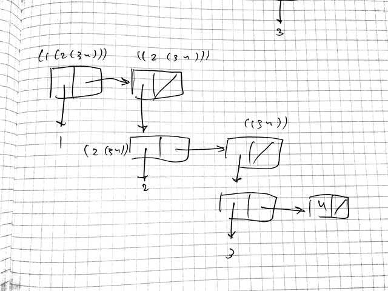
Figure 2: Box-and-pointer diagram
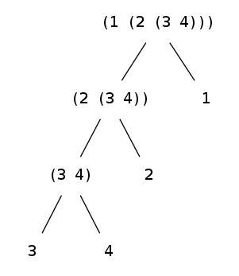
2.25 DONE 2.25
(use test) (test 7 (car (cdaddr '(1 3 (5 7) 9)))) (test 7 (caar '((7)))) (test 7 (cadadr (cadadr (cadadr '(1 (2 (3 (4 (5 (6 7))))))))))
2.26 DONE 2.26
(use test) (define x (list 1 2 3)) (define y (list 4 5 6)) (test '(1 2 3 4 5 6) (append x y)) (test '((1 2 3) 4 5 6) (cons x y)) (test '((1 2 3) (4 5 6)) (list x y))
2.27 DONE 2.27
(use test) (define (deep-reverse list) (let iter ((list list) (reverse '())) (if (null? list) reverse (let ((first (car list))) (iter (cdr list) (cons (if (pair? first) (deep-reverse first) first) reverse)))))) ;; Or using higher-order functions. (define (deep-reverse list) (reverse (map (lambda (element) (if (pair? element) (deep-reverse element) element)) list))) (test '(((7 6 5) 4 3) (2 1)) (deep-reverse '((1 2) (3 4 (5 6 7)))))
2.28 DONE 2.28
(use test) (define (fringe list) (let iter ((list list) (leaves '())) (if (null? list) leaves (let ((first (car list))) (iter (cdr list) (if (pair? first) (append (fringe first) leaves) (cons first leaves))))))) (define x '((1 2) (3 4))) (test '(4 3 2 1) (fringe x)) (test '(4 3 2 1 4 3 2 1) (fringe (list x x)))
2.29 DONE 2.29
(use test) (define (make-mobile left right) (list left right)) (define (make-branch length structure) (list length structure)) (define left-branch car) (define right-branch cadr) (define branch-length car) (define branch-structure cadr) (define (total-weight mobile) (let ((left-structure (branch-structure (left-branch mobile))) (right-structure (branch-structure (right-branch mobile)))) (+ (if (number? left-structure) left-structure (total-weight left-structure)) (if (number? right-structure) right-structure (total-weight right-structure))))) (define mobile (make-mobile (make-branch 2 (make-mobile (make-branch 2 (make-mobile (make-branch 3 16) (make-branch 2 20))) (make-branch 4 20))) (make-branch 5 102.4))) (define (torque branch) (let ((structure (branch-structure branch))) (* (branch-length branch) (if (number? structure) structure (+ (torque (left-branch structure)) (torque (right-branch structure))))))) (define (balanced? mobile) (= (torque (left-branch mobile)) (torque (right-branch mobile)))) (test 158.4 (total-weight mobile)) (test-assert (balanced? mobile))
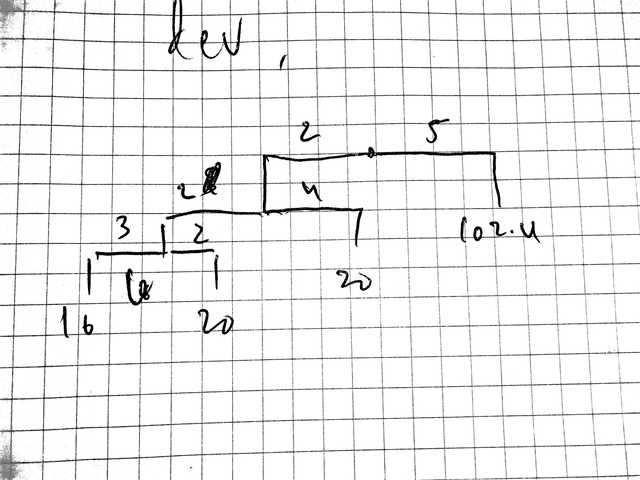
Figure 4: Mobile
In order to accomodate cons vs. list, we only need to modify the
accessors right-branch, branch-structure to use cdr instead of
cadr.
2.30 DONE 2.30
(use sicp test) (define (square-tree-direct tree) (cond ((null? tree) nil) ((not (pair? tree)) (square tree)) (else (cons (square-tree-direct (car tree)) (square-tree-direct (cdr tree)))))) (define (square-tree-map tree) (map (lambda (sub-tree) (if (pair? sub-tree) (square-tree-map sub-tree) (square sub-tree))) tree)) (define tree (list 1 (list 2 (list 3 4) 5) (list 6 7))) (test '(1 (4 (9 16) 25) (36 49)) (square-tree-direct tree)) (test '(1 (4 (9 16) 25) (36 49)) (square-tree-map tree))
2.31 DONE 2.31
(use sicp test) (define (tree-map f tree) (map (lambda (sub-tree) (if (pair? sub-tree) (tree-map f sub-tree) (f sub-tree))) tree)) (define (square-tree tree) (tree-map square tree)) (define tree (list 1 (list 2 (list 3 4) 5) (list 6 7))) (test '(1 (4 (9 16) 25) (36 49)) (square-tree tree))
2.32 DONE 2.32
It recursively descends to (null? s), the base case, where it
seeds the unwinding with (()); and, as it unwinds the recursion,
it has already generated all subsets of the last \(n\) elements: all
that is required is to cons the \(n - 1^{st}\) element to all
subsets of the last \(n\) elements.
To see that this is the case, look at the zeroeth case, where it has
generated the empty set; look also at the first case, where it has
taken the car of s, e.g. 3, and appended it to (), yielding
(3).
The next step will cons 2 to () and (3), append it to the
previously unwound subsets (() (3)), yielding (() (3) (2) (2
3)).
(use sicp test) (define (subsets s) (if (null? s) (list nil) (let ((rest (subsets (cdr s)))) (append rest (map (lambda (subset) (cons (car s) subset)) rest))))) (test '(() (3) (2) (2 3) (1) (1 3) (1 2) (1 2 3)) (subsets '(1 2 3)))
2.33 DONE 2.33
(use sicp test) (define (map p sequence) (accumulate (lambda (x y) (cons (p x) y)) nil sequence)) (define list '(1 2 3)) (test '(1 4 9) (map square list)) (define (append seq1 seq2) (accumulate cons seq1 seq2)) (test '(1 2 3 1 2 3) (append list list)) (define (length sequence) (accumulate (lambda (x y) (+ y 1)) 0 sequence)) (test 3 (length list))
2.34 DONE 2.34
(use sicp test) (define (horner-eval x coefficient-sequence) (accumulate (lambda (this-coeff higher-terms) (+ (* higher-terms x) this-coeff)) 0 coefficient-sequence)) (test 79 (horner-eval 2 (list 1 3 0 5 0 1)))
2.35 DONE 2.35
(use sicp test) (define (count-leaves t) (accumulate + 0 (map (lambda (subtree) (if (pair? subtree) (count-leaves subtree) (if (null? subtree) 0 1))) t))) (define x (cons (list 1 2 '()) (list 3 4))) (test 4 (count-leaves x)) (test 8 (count-leaves (list x x)))
2.36 DONE 2.36
(define (accumulate-n op init seqs) (if (null? (car seqs)) nil (cons (accumulate op init (map car seqs)) (accumulate-n op init (map cdr seqs)))))
(use sicp test) (include "accumulate-n.scm") (define s '((1 2 3) (4 5 6) (7 8 9) (10 11 12))) (test '(22 26 30) (accumulate-n + 0 s))
2.37 DONE 2.37
(use test) (include "accumulate-n.scm") (define m '((1 -1 2) (0 -3 1))) (define v '(2 1 0)) (define (dot-product v w) (accumulate + 0 (map * v w))) (define (matrix-*-vector m v) (map (lambda (w) (dot-product v w)) m)) (define (transpose mat) (accumulate-n cons '() mat)) (define (matrix-*-matrix m n) (let ((cols (transpose n))) (map (lambda (w) (matrix-*-vector cols w)) m))) (test '(1 -3) (matrix-*-vector m v)) (test '((1 0) (-1 -3) (2 1)) (transpose m)) (test '((6 5) (5 10)) (matrix-*-matrix m (transpose m)))
2.38 DONE 2.38
(use sicp) (define fold-right accumulate) (define (fold-left op initial sequence) (define (iter result rest) (if (null? rest) result (iter (op result (car rest)) (cdr rest)))) (iter initial sequence))
(use test)
(include "fold.scm")
(test (/ 3 2) (fold-right / 1 (list 1 2 3)))
(test (/ 1 6) (fold-left / 1 (list 1 2 3)))
(test '(1 (2 (3 ()))) (fold-right list nil (list 1 2 3)))
(test '(((() 1) 2) 3) (fold-left list nil (list 1 2 3)))
op needs to be commutative for fold-right and fold-left to
produce the same result.
2.39 DONE 2.39
(use sicp test) (include "fold.scm") (define l '(1 2 3)) (define (reverse sequence) (fold-right (lambda (x y) (append y (list x))) nil sequence)) (test '(3 2 1) (reverse l)) (define (reverse sequence) (fold-left (lambda (x y) (cons y x)) nil sequence)) (test '(3 2 1) (reverse l))
2.40 DONE 2.40
(define (unique-pairs n) (flatmap (lambda (i) (map (lambda (j) (list i j)) (enumerate-interval 1 (- i 1)))) (enumerate-interval 1 n)))
(use sicp srfi-1 test) (include "unique-pairs.scm") (define (prime-sum? pair) (prime? (+ (car pair) (cadr pair)))) (define (make-pair-sum pair) (list (car pair) (cadr pair) (+ (car pair) (cadr pair)))) (define (prime-sum-pairs n) (map make-pair-sum (filter prime-sum? (unique-pairs n)))) (test '((2 1 3) (3 2 5) (4 1 5) (4 3 7) (5 2 7) (6 1 7) (6 5 11)) (prime-sum-pairs 6))
2.41 DONE 2.41
(use sicp srfi-1 test) (include "unique-pairs.scm") (define (unique-triples n) (flatmap (lambda (i) (map (lambda (j) (cons i j)) (unique-pairs (- i 1)))) (enumerate-interval 1 n))) (define (sum-to? s) (lambda (triple) (= s (apply + triple)))) (define (sum-to-triples n s) (filter (sum-to? s) (unique-triples n))) (test '((5 4 3) (6 4 2) (6 5 1)) (sum-to-triples 6 12))
2.42 DONE 2.42
(use sicp srfi-1 test) (define empty-board '()) (define (slope x1 y1 x2 y2) (/ (- y2 y1) (- x2 x1))) (define (safe? k positions) (let ((kth-position (list-ref positions (- k 1)))) (let iter ((positions positions) (i 1)) (or (null? positions) (if (= i k) (iter (cdr positions) (+ i 1)) (let* ((ith-position (car positions)) (slope (slope i ith-position k kth-position))) (and (not (or (= slope 0) (= (abs slope) 1))) (iter (cdr positions) (+ i 1))))))))) (define (adjoin-position new-row k rest-of-queens) (append (take rest-of-queens (- k 1)) (list new-row) (drop rest-of-queens (- k 1)))) (define (queens board-size) (define (queen-cols k) (if (= k 0) (list empty-board) (filter (lambda (positions) (safe? k positions)) (flatmap (lambda (rest-of-queens) (map (lambda (new-row) (adjoin-position new-row k rest-of-queens)) (enumerate-interval 1 board-size))) (queen-cols (- k 1)))))) (queen-cols board-size)) (time (test 92 (length (queens 8))))
2.43 DONE 2.43
The first implementation of queens prunes the tree based on safe?;
the second doesn’t. The second, therefore, evaluates all \(6 ^ 6 =
46656\) possibilities; pruning on safe? should reduce all
subsequent moves by at least one possibility, meaning that the tree
is at worst \(6! = 720\) possibilities and that the non-pruning
version should run in more than \(64T\).
Scratch that:
| \(k\) | \(t\) (ms) |
|---|---|
| 8 | 0.18 |
| 9 | 1.12 |
| 10 | 5.44 |
| 11 | 22.85 |
Appears to obey a power-law implying \(O(n^{15})\).
2.44 DONE 2.44
(use sicp) (define (up-split painter n) (if (= n 0) painter (let ((smaller (up-split painter (- n 1)))) (below painter (beside smaller smaller))))) (write-painter-to-png (up-split (image->painter "lena.png") 2) "2.44.png")
Figure 5: up-split
2.45 DONE 2.45
(use sicp) (define (split first-preposition second-preposition) (lambda (painter n) (if (= n 0) painter (let ((smaller ((split first-preposition second-preposition) painter (- n 1)))) (first-preposition painter (second-preposition smaller smaller)))))) (define right-split (split beside below)) (define up-split (split below beside)) (write-painter-to-png (right-split (image->painter "lena.png") 4) "2.45-right-split.png") (write-painter-to-png (up-split (image->painter "lena.png") 4) "2.45-up-split.png")
Figure 6: right-split
Figure 7: up-split
2.46 DONE 2.46
(define make-vect cons) (define xcor-vect car) (define ycor-vect cdr) (define (add-vect v1 v2) (make-vect (+ (xcor-vect v1) (xcor-vect v2)) (+ (ycor-vect v1) (ycor-vect v2)))) (define (sub-vect v1 v2) (add-vect v1 (make-vect (- (xcor-vect v2)) (- (ycor-vect v2))))) (define (scale-vect s v1) (make-vect (* s (xcor-vect v1)) (* s (ycor-vect v1))))
(use test)
(include "vect.scm")
(test (make-vect 4 7)
(add-vect (make-vect 1 2) (make-vect 3 5)))
(test (make-vect -2 -3)
(sub-vect (make-vect 1 2) (make-vect 3 5)))
(test (make-vect 6 15)
(scale-vect 3 (make-vect 2 5)))
2.47 DONE 2.47
(define (make-frame origin edge1 edge2) (list origin edge1 edge2)) (define origin-frame car) (define edge1-frame cadr) (define edge2-frame caddr)
(use test) (include "frame.scm") (let ((frame (make-frame (make-vect 0 0) (make-vect 1 1) (make-vect 2 2)))) (test (make-vect 0 0) (origin-frame frame)) (test (make-vect 1 1) (edge1-frame frame)) (test (make-vect 2 2) (edge2-frame frame))) ;; The other representation. (define (make-frame origin edge1 edge2) (cons origin (cons edge1 edge2))) (define edge2-frame cddr) (let ((frame (make-frame (make-vect 0 0) (make-vect 1 1) (make-vect 2 2)))) (test (make-vect 0 0) (origin-frame frame)) (test (make-vect 1 1) (edge1-frame frame)) (test (make-vect 2 2) (edge2-frame frame)))
2.48 DONE 2.48
;; We'll reuse make-segment from 2.2.
2.49 DONE 2.49
(include "segment.scm") (include "vect.scm") (define outline (list (make-segment (make-vect 0 0) (make-vect 0 1)) (make-segment (make-vect 0 1) (make-vect 1 1)) (make-segment (make-vect 1 1) (make-vect 1 0)) (make-segment (make-vect 1 0) (make-vect 0 0)))) (define x (list (make-segment (make-vect 0 0) (make-vect 1 1)) (make-segment (make-vect 0 1) (make-vect 1 0)))) (define diamond (list (make-segment (make-vect 0.5 0) (make-vect 1 0.5)) (make-segment (make-vect 1 0.5) (make-vect 0.5 1)) (make-segment (make-vect 0.5 1) (make-vect 0 0.5)) (make-segment (make-vect 0 0.5) (make-vect 0.5 0)))) ;; Needs to be asymmetrical, so we can see rotations and flips. (define wave (list ;; Left leg (make-segment (make-vect 0.3 1) (make-vect 0.4 0.6)) (make-segment (make-vect 0.4 1) (make-vect 0.5 0.7)) ;; Right leg (make-segment (make-vect 0.6 1) (make-vect 0.5 0.7)) (make-segment (make-vect 0.7 1) (make-vect 0.6 0.6)) ;; Torso (make-segment (make-vect 0.4 0.6) (make-vect 0.4 0.4)) (make-segment (make-vect 0.6 0.6) (make-vect 0.6 0.4)) ;; Left arm (make-segment (make-vect 0.4 0.4) (make-vect 0.2 0.35)) (make-segment (make-vect 0.2 0.35) (make-vect 0.2 0.25)) (make-segment (make-vect 0.2 0.25) (make-vect 0.45 0.3)) ;; Right arm (make-segment (make-vect 0.6 0.4) (make-vect 0.8 0.45)) (make-segment (make-vect 0.8 0.45) (make-vect 0.8 0.35)) (make-segment (make-vect 0.8 0.35) (make-vect 0.55 0.3)) ;; Neck (make-segment (make-vect 0.45 0.3) (make-vect 0.45 0.25)) (make-segment (make-vect 0.55 0.3) (make-vect 0.55 0.25)) ;; Head (make-segment (make-vect 0.45 0.25) (make-vect 0.425 0.25)) (make-segment (make-vect 0.425 0.25) (make-vect 0.425 0.05)) (make-segment (make-vect 0.425 0.05) (make-vect 0.575 0.05)) (make-segment (make-vect 0.575 0.05) (make-vect 0.575 0.25)) (make-segment (make-vect 0.575 0.25) (make-vect 0.55 0.25))))
(use sicp) (include "painters.scm") (write-painter-to-svg (segments->painter outline) "2.49-outline.svg") (write-painter-to-svg (segments->painter x) "2.49-x.svg") (write-painter-to-svg (segments->painter diamond) "2.49-diamond.svg") (write-painter-to-svg (segments->painter wave) "2.49-wave.svg")
Figure 8: Diamond
Figure 9: Outline
Figure 10: X
Figure 11: Wave
2.50 DONE 2.50
(use sicp) (define (flip-horiz painter) (transform-painter painter (make-vect 1 0) (make-vect 0 0) (make-vect 1 1))) (define rotate180 (compose rotate90 rotate90)) (define rotate270 (compose rotate180 rotate90)) (write-painter-to-png (flip-horiz (image->painter "lena.png")) "2.50-horiz.png") (write-painter-to-png (rotate180 (image->painter "lena.png")) "2.50-rotate180.png") (write-painter-to-png (rotate270 (image->painter "lena.png")) "2.50-rotate270.png")
Figure 12: Flipped horizontally
Figure 13: Rotated 180°
Figure 14: Rotated 270°
2.51 DONE 2.51
(use sicp) (define (below painter1 painter2) (let ((split-point (make-vect 1 0.5))) (let ((paint-top (transform-painter painter2 (make-vect 0 0) (make-vect 1 0) (make-vect 0 0.5))) (paint-bottom (transform-painter painter1 (make-vect 0 0.5) split-point (make-vect 0 1) ))) (lambda (frame) (paint-top frame) (paint-bottom frame))))) (let ((lena (image->painter "lena.png"))) (write-painter-to-png (below lena lena) "2.51-below-direct.png")) (define (below painter1 painter2) (rotate90 (beside (rotate270 painter1) (rotate270 painter2)))) (let ((lena (image->painter "lena.png"))) (write-painter-to-png (below lena lena) "2.51-below-indirect.png"))
Figure 15: below written directly

Figure 16: below written indirectly (i.e. in terms of rotations)
2.52 DONE 2.52
(use sicp) (include "painters.scm") (define wave-with-smile (append wave (list (make-segment (make-vect 0.48 0.2) (make-vect 0.52 0.2)) (make-segment (make-vect 0.45 0.13) (make-vect 0.47 0.13)) (make-segment (make-vect 0.53 0.13) (make-vect 0.55 0.13))))) (write-painter-to-svg (segments->painter wave-with-smile) "2.52-smile.svg") (define (corner-split painter n) (if (= n 0) painter (let ((up (up-split painter (- n 1))) (right (right-split painter (- n 1)))) (let ((top-left up) (bottom-right right) (corner (corner-split painter (- n 1)))) (beside (below painter top-left) (below bottom-right corner)))))) (write-painter-to-png (corner-split (image->painter "lena.png") 5) "2.52-corner-split.png") (write-painter-to-png (square-limit (flip-horiz (image->painter "lena.png")) 5) "2.52-square-limit.png")
Figure 17: Add a smile
Figure 18: Corner split with only one top and one right
Figure 19: Square limit with flipped wave
2.53 DONE 2.53
(use test) (test '(a b c) (list 'a 'b 'c)) (test '((george)) (list (list 'george))) (test '((y1 y2)) (cdr '((x1 x2) (y1 y2)))) (test '(y1 y2) (cadr '((x1 x2) (y1 y2)))) (test #f (pair? (car '(a short list)))) (test #f (memq 'red '((red shoes) (blue shoes)))) (test '(red shoes blue shoes) (memq 'red '(red shoes blue shoes)))
2.54 DONE 2.54
(use test) (define (equal? l1 l2) (cond ((and (symbol? l1) (symbol? l2)) (eq? l1 l2)) ((and (number? l1) (number? l2)) (= l1 l2)) ((and (pair? l1) (pair? l2)) (and (equal? (car l1) (car l2)) (equal? (cdr l1) (cdr l2)))))) (test-assert (equal? '(this is a list) '(this is a list))) (test-assert (not (equal? '(this is a list) '(this (is a) list))))
2.55 DONE 2.55
’’abracadabra evaluates to (quote (quote abracadabra)); the
car of which evaluates to quote.
2.56 DONE 2.56
(use sicp test) (define (make-diff a1 a2) (cond ((=number? a1 0) a2) ((=number? a2 0) a1) ((and (number? a1) (number? a2)) (- a1 a2)) (else (list '- a1 a2)))) (define (deriv exp var) (cond ((number? exp) 0) ((variable? exp) (if (same-variable? exp var) 1 0)) ((sum? exp) (make-sum (deriv (addend exp) var) (deriv (augend exp) var))) ((product? exp) (make-sum (make-product (multiplier exp) (deriv (multiplicand exp) var)) (make-product (deriv (multiplier exp) var) (multiplicand exp)))) ((exponentiation? exp) (let ((base (base exp)) (exponent (exponent exp))) (make-product exponent (make-product (make-exponentiation base (make-diff exponent 1)) (deriv base var))))) (else (error "Unknown expression type: DERIV" exp)))) (define (exponentiation? x) (and (pair? x) (eq? (car x) '**))) (define base cadr) (define exponent caddr) (define (make-exponentiation b e) (cond ((=number? e 0) 1) ((=number? e 1) b) ((and (number? b) (number? e)) (expt b e)) (else (list '** b e)))) (test '(* y (** x (- y 1))) (deriv '(** x y) 'x)) (test '(* 2 x) (deriv '(** x 2) 'x))
2.57 DONE 2.57
(use sicp test) (define (augend x) (let ((augenda (cddr x))) (if (null? (cdr augenda)) (car augenda) (cons '+ augenda)))) (define (multiplicand x) (let ((multiplicanda (cddr x))) (if (null? (cdr multiplicanda)) (car multiplicanda) (cons '* multiplicanda)))) (test '(+ (* x y) (* y (+ x 3))) (deriv '(* x y (+ x 3)) 'x))
2.58 DONE 2.58
(use sicp test) (define addend car) (define augend caddr) (define (sum? x) (and (pair? x) (eq? (cadr x) '+))) (define multiplier car) (define multiplicand caddr) (define (product? x) (and (pair? x) (eq? (cadr x) '*))) (test 4 (deriv '(x + (3 * (x + (y + 2)))) 'x))
(use sicp srfi-1 test) (define (list-or-symbol x) (if (and (pair? x) (null? (cdr x))) (car x) x)) (define (addend x) (list-or-symbol (take-while (lambda (x) (not (eq? x '+))) x))) (define (augend x) (list-or-symbol (cdr (drop-while (lambda (x) (not (eq? x '+))) x)))) (define (sum? x) (and (pair? x) (and (memq '+ x) #t))) (define multiplier car) (define (multiplicand x) (list-or-symbol (cddr x))) (define (product? x) (and (pair? x) (eq? (cadr x) '*))) (test 4 (deriv '(x + 3 * (x + y + 2)) 'x)) (test 5 (deriv '(x * 3 + x * 2 + y * 3) 'x))
2.59 DONE 2.59
(use sicp test) (define (union-set set1 set2) (if (null? set1) set2 (if (element-of-set? (car set1) set2) (union-set (cdr set1) set2) (union-set (cdr set1) (cons (car set1) set2))))) (let ((set1 '(1 2 3)) (set2 '(3 4 5))) (test '(2 1 3 4 5) (union-set set1 set2)))
2.60 DONE 2.60
element-of-set? is still \(\Theta(n)\), adjoin-set went from
\(\Theta(n)\) to \(\Theta(1)\), union-set is went from \(\Theta(n^2)\)
to \(\Theta(n)\) (the complexity of append) and intersection-set
is still \(\Theta(n^2)\); where \(n\) in the repeated case is some
constant factor larger than \(n\) in the unique case.
It might be useful where you need cheap writes.
(use sicp test) (define set '(2 3 2 1 3 2 2)) (test-assert (element-of-set? 1 set)) (define adjoin-set cons) (test '(4 2 3 2 1 3 2 2) (adjoin-set 4 set)) (define union-set append) (test '(2 3 2 1 3 2 2 2 3 2 1 3 2 2) (union-set set set)) (test '(3 2 2) (intersection-set '(3 2 2) set))
2.61 DONE 2.61
(define (element-of-set? x set) (cond ((null? set) #f) ((= x (car set)) #t) ((< x (car set)) #f) (else (element-of-set? x (cdr set))))) (define (intersection-set set1 set2) (if (or (null? set1) (null? set2)) '() (let ((x1 (car set1)) (x2 (car set2))) (cond ((= x1 x2) (cons x1 (intersection-set (cdr set1) (cdr set2)))) ((< x1 x2) (intersection-set (cdr set1) set2)) ((< x2 x1) (intersection-set set1 (cdr set2)))))))
(use sicp test) (include "ordered-sets.scm") (define (adjoin-set x set) (if (null? set) (list x) (let ((first (car set))) (if (< first x) (cons first (adjoin-set x (cdr set))) (cons x set))))) (define set '(1 3 6 10)) (test '(1 3 5 6 10) (adjoin-set 5 '(1 3 6 10))) (test '(5) (adjoin-set 5 '()))
2.62 DONE 2.62
(define (union-set set1 set2) (cond ((null? set1) set2) ((null? set2) set1) (else (let ((x1 (car set1)) (x2 (car set2))) (cond ((= x1 x2) (cons x1 (union-set (cdr set1) (cdr set2)))) ((< x1 x2) (cons x1 (union-set (cdr set1) set2))) (else (cons x2 (union-set set1 (cdr set2)))))))))
(use sicp test) (include "union-set.scm") (define set1 '(1 3 6 10)) (define set2 '(0 2 3 7 12)) (test '(0 1 2 3 6 7 10 12) (union-set set1 set2))
2.63 DONE 2.63
The two procedures should return the same result for every tree, since they’re both doing a topological sort over the entries.
(define (entry tree) (car tree)) (define (left-branch tree) (cadr tree)) (define (right-branch tree) (caddr tree)) (define (make-tree entry left right) (list entry left right)) (define (element-of-set? x set) (cond ((null? set) #f) ((= x (entry set)) #t) ((< x (entry set)) (element-of-set? x (left-branch set))) ((> x (entry set)) (element-of-set? x (right-branch set))))) (define (adjoin-set x set) (cond ((null? set) (make-tree x '() '())) ((= x (entry set)) set) ((< x (entry set)) (make-tree (entry set) (adjoin-set x (left-branch set)) (right-branch set))) ((> x (entry set)) (make-tree (entry set) (left-branch set) (adjoin-set x (right-branch set)))))) (define (tree->list-1 tree) (if (null? tree) '() (append (tree->list-1 (left-branch tree)) (cons (entry tree) (tree->list-1 (right-branch tree)))))) (define (tree->list-2 tree) (define (copy-to-list tree result-list) (if (null? tree) result-list (copy-to-list (left-branch tree) (cons (entry tree) (copy-to-list (right-branch tree) result-list))))) (copy-to-list tree '())) (define (list->tree elements) (car (partial-tree elements (length elements)))) (define (partial-tree elts n) (if (= n 0) (cons '() elts) (let ((left-size (quotient (- n 1) 2))) (let ((left-result (partial-tree elts left-size))) (let ((left-tree (car left-result)) (non-left-elts (cdr left-result)) (right-size (- n (+ left-size 1)))) (let ((this-entry (car non-left-elts)) (right-result (partial-tree (cdr non-left-elts) right-size))) (let ((right-tree (car right-result)) (remaining-elts (cdr right-result))) (cons (make-tree this-entry left-tree right-tree) remaining-elts))))))))
(use sicp test) (include "tree-sets.scm") (define tree-1 '(7 (3 (1 () ()) (5 () ())) (9 () (11 () ())))) (define tree-2 '(3 (1 () ()) (7 (5 () ()) (9 () (11 () ()))))) (define tree-3 '(5 (3 (1 () ()) ()) (9 (7 () ()) (11 () ())))) (test-assert (equal? (tree->list-1 tree-1) (tree->list-2 tree-1))) (test-assert (equal? (tree->list-1 tree-2) (tree->list-2 tree-2))) (test-assert (equal? (tree->list-1 tree-3) (tree->list-2 tree-3)))
tree->list-1 has an additional append at every level of the
tree, whereas tree->list-2 gets away with cons only;
tree->list-2 should grow more slowly, therefore, since append is
a \(\Theta(n)\) operation and cons is \(\Theta(1)\).
2.64 DONE 2.64
(use test)
(include "tree-sets.scm")
(test '(5 (1 () (3 () ())) (9 (7 () ()) (11 () ())))
(list->tree '(1 3 5 7 9 11)))
In the \(n = 0\) case, we’re at a leaf; return an empty list, signifying no children.
Otherwise, the size of the left-tree (\(leftsize\)) will be half of the list minus the middle element, which will act as the root; create the left-tree from the first \(leftsize\) elements. The size of the right-tree (\(rightsize\)) is the left-over elements minus the root (i.e. the first non-left entry); create the right-tree from the last \(rightsize\) elements
It recursively partitions the tree into a pivot (the \(\frac{n}{2}^{nd}\) element or so-called “entry”), the left elements less than the pivot (belonging to the left subtree) and the right elements greater than the pivot (belonging to the right subtree); it works from the left side of the list and the bottom of the tree, composing leaves and smaller subtrees into larger ones and eventually consuming the entire list.
The order of growth is \(\Theta(n)\), since the list is already sorted; \(\Theta(n log(n))\) if this were not the case.
2.64.1 TODO Some sort of power-law with nodes vs. invocations of partial-tree.
2.65 DONE 2.65
(use test) (include "ordered-sets.scm") (include "union-set.scm") (include "tree-sets.scm") (define (tree-union-set tree1 tree2) (list->tree (union-set (tree->list-2 tree1) (tree->list-2 tree2)))) (define (tree-intersection-set tree1 tree2) (list->tree (intersection-set (tree->list-2 tree1) (tree->list-2 tree2)))) (define tree1 (list->tree '(1 3 6 10))) (define tree2 (list->tree '(0 2 3 7 12))) (test '(0 1 2 3 6 7 10 12) (tree->list-2 (tree-union-set tree1 tree2)))
2.66 DONE 2.66
(use sicp test) (include "tree-sets.scm") (define tree (list->tree '(1 3 6 10))) (define (lookup key tree) (if (null? tree) #f (let ((entry (entry tree))) (cond ((= key entry) #t) ((< key entry) (lookup key (left-branch tree))) (else (lookup key (right-branch tree))))))) (test-assert (not (lookup 2 tree))) (test-assert (lookup 1 tree))
2.67 DONE 2.67
(use sicp test) (define sample-tree (make-code-tree (make-leaf 'A 4) (make-code-tree (make-leaf 'B 2) (make-code-tree (make-leaf 'D 1) (make-leaf 'C 1))))) (define sample-message '(0 1 1 0 0 1 0 1 0 1 1 1 0)) (test '(A D A B B C A) (decode sample-message sample-tree))
2.68 DONE 2.68
(use sicp srfi-1 test) (define (encode-symbol symbol tree) (if (leaf? tree) '() (cond ((memq symbol (symbols (left-branch tree))) (cons 0 (encode-symbol symbol (left-branch tree)))) ((memq symbol (symbols (right-branch tree))) (cons 1 (encode-symbol symbol (right-branch tree)))) (else (error "Symbol not in tree -- ENCODE-SYMBOL" symbol))))) (define sample-tree (make-code-tree (make-leaf 'A 4) (make-code-tree (make-leaf 'B 2) (make-code-tree (make-leaf 'D 1) (make-leaf 'C 1))))) (test '(0 1 1 0 0 1 0 1 0 1 1 1 0) (encode '(A D A B B C A) sample-tree))
2.69 DONE 2.69
Interesting to note that the message from 2.67 is decoded slightly differently.
(use sicp traversal) (define (adjoin-leaf-set tree leaf-set) (if (null? leaf-set) (list tree) (let ((leaf (car leaf-set))) (if (> (weight tree) (weight leaf)) (cons leaf (adjoin-tree tree (cdr leaf-set))) (cons tree leaf-set))))) (define (successive-merge leaf-set) (if (= 1 (length leaf-set)) ;; What if it's a single leaf? (if (leaf? leaf-set) leaf-set (car leaf-set)) (successive-merge (adjoin-leaf-set (make-code-tree (cadr leaf-set) (car leaf-set)) (cddr leaf-set))))) (define (generate-huffman-tree pairs) (successive-merge (make-leaf-set pairs)))
(use sicp test) (include "huffman.scm") (define sample-message '(0 1 1 0 0 1 0 1 0 1 1 1 0)) (test '(A C A B B D A) (decode sample-message (generate-huffman-tree '((A 4) (B 2) (C 1) (D 1)))))
2.70 DONE 2.70
84 bits are required for the encoding; if we had used a fixed-length encoding, \(36\ \text{symbols} \times \log_28\ \frac{\text{bits}}{\text{symbol}} = 108\ \text{bits}\) would have been required.
(use sicp test)
(include "huffman.scm")
(test
'(1 1 1 1 1 1 1 1 1 0 1 1 0 0 1 1 1
0 0 0 0 0 0 0 0 0 1 1 1 1 1 1 1
1 1 0 1 1 0 0 1 1 1 0 0 0 0 0 0
0 0 0 1 1 0 1 0 1 0 1 0 1 0 1 0
1 0 1 0 1 0 1 0 1 0 1 1 1 0 1 1
0 1 1)
(encode
'(get a job
sha na na na na na na na na
get a job
sha na na na na na na na na
wah yip yip yip yip yip yip yip yip yip
sha boom)
(generate-huffman-tree '((wah 1)
(boom 1)
(a 2)
(get 2)
(job 2)
(sha 3)
(na 16)
(yip 9)))))
2.71 DONE 2.71
Here is the tree for \(n = 5\):
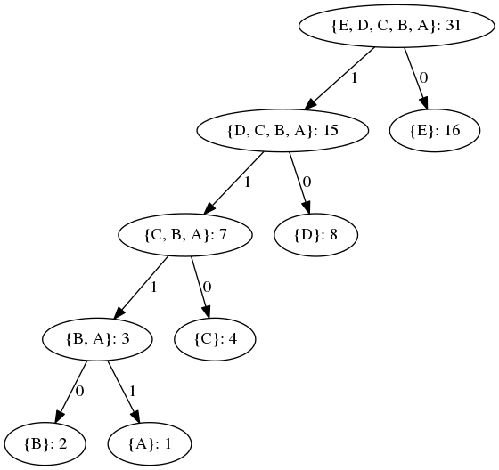
In general, 1 bit is required to encode the most frequent symbol; \(n - 1\) bits, the least frequent.
2.72 DONE 2.72
Assuming a linear memq, encode-symbol takes, in the special case
where the relative frequencies of symbols are \(1, 2, \dots,
2^{n-1}\), \(O(n)\) for the most frequent symbol and \(O(n^2)\) for the
least frequent.
For pathological (nearly linear) trees, the order of growth is \(O(n^2)\); for balanced trees, \(O(n \log n)\).
Using a constant-time lookup for symbol membership instead of
memq, the order of growth would be \(O(n)\) and \((\log n)\).
2.73 DONE 2.73
number? and variable? can’t be assimilated because they operate
on primitive (i.e. non-type-tagged objects); on the other hand,
type-tag and contents could be generalized to support them.
In order to accomodate a reversal of the indexing for procedures,
we’d have to reverse the corresponding put statements during
installation.
(use sicp srfi-69 test) (define (deriv exp var) (cond ((number? exp) 0) ((variable? exp) (if (same-variable? exp var) 1 0)) (else ((get 'deriv (operator exp)) (operands exp) var)))) (define (operator exp) (car exp)) (define (operands exp) (cdr exp)) (define dispatch-table (make-parameter (make-hash-table))) (define (put op type proc) (hash-table-set! (dispatch-table) (cons op type) proc)) (define (get op type) (hash-table-ref/default (dispatch-table) (cons op type) #f)) (define (install-sum-and-product-package) (define addend car) (define augend cadr) (define (deriv-sum exp var) (make-sum (deriv (addend exp) var) (deriv (augend exp) var))) (define multiplicand car) (define multiplier cadr) (define (deriv-product exp var) (make-sum (make-product (multiplier exp) (deriv (multiplicand exp) var)) (make-product (deriv (multiplier exp) var) (multiplicand exp)))) (put 'deriv '+ deriv-sum) (put 'deriv '* deriv-product) 'done) (install-sum-and-product-package) (test 'y (deriv '(* x y) 'x)) (test 1 (deriv '(+ x y) 'x)) (define (install-exponent-package) (define base car) (define exponent cadr) (define (make-exponentiation b e) (cond ((=number? e 0) 1) ((=number? e 1) b) ((and (number? b) (number? e)) (expt b e)) (else (list '** b e)))) (define (make-diff a1 a2) (cond ((=number? a1 0) a2) ((=number? a2 0) a1) ((and (number? a1) (number? a2)) (- a1 a2)) (else (list '- a1 a2)))) (define (deriv-exponent exp var) (let ((base (base exp)) (exponent (exponent exp))) (make-product exponent (make-product (make-exponentiation base (make-diff exponent 1)) (deriv base var))))) (put 'deriv '** deriv-exponent) 'done) (install-exponent-package) (test '(* y (** x (- y 1))) (deriv '(** x y) 'x)) (test '(* 2 x) (deriv '(** x 2) 'x))
2.74 DONE 2.74
Some sort of type information supplied as e.g. a file-extension or
header should be provided to describe the file being read; this type
is passed to functions for reading and parsing records so that
get-record can be generically defined. (See, for instance,
./division-a-1.data and ./division-b-1.data.)
The record itself should have a tag so that get-salary can be
generically defined.
When Insatiable takes over a new company, record- and field-parsers corresponding to their file-format will have to be installed in the dispatch table.
(use alist-lib extras medea sicp srfi-61 test) (define (install-division-a-package) (define get-person (cut alist-ref <> 'person)) (define get-salary (cut alist-ref <> 'salary)) (define (read-record file) (attach-tag 'division-a-record (read file))) (put 'get-person '(division-a-record) get-person) (put 'get-salary '(division-a-record) get-salary) (put 'read-record '(division-a-file) read-record) (put 'eof? '(division-a-record) eof-object?) (put 'close '(division-a-file) close-input-port)) (define (install-division-b-package) (define (get-person record) (string->symbol (alist-ref record 'name))) (define get-salary (cute alist-ref <> 'income)) (define (read-record file) (attach-tag 'division-b-record (let ((object (read-line file))) (if (eof-object? object) object (read-json object))))) (put 'get-person '(division-b-record) get-person) (put 'get-salary '(division-b-record) get-salary) (put 'read-record '(division-b-file) read-record) (put 'eof? '(division-b-record) eof-object?) (put 'close '(division-b-file) close-input-port)) (define (file-tag file) (string->symbol (read-line file))) (define (make-file file) (let ((file (open-input-file file))) (attach-tag (file-tag file) file))) (define (read-record file) (apply-generic 'read-record file)) (define (get-person record) (apply-generic 'get-person record)) (define (eof? record) (apply-generic 'eof? record)) (define (close file) (apply-generic 'close file)) (define (get-record person file) (dynamic-wind void (lambda () (let iter ((record (read-record file))) (if (eof? record) #f (if (eq? person (get-person record)) record (iter (read-record file)))))) (lambda () (close file)))) (define (make-person name) (attach-tag 'person name)) (define (get-salary record) (apply-generic 'get-salary record)) (define (get-salary record) (apply-generic 'get-salary record)) (define (find-employee-record person files) (append-map (lambda (file) (let ((record (get-record person (make-file file)))) (if record (list record) '()))) files)) (install-division-a-package) (install-division-b-package) (let ((jake (get-record 'jake (make-file "division-a-1.data"))) (mary (get-record 'mary (make-file "division-b-1.data")))) (test "(get-record 'jake (make-file \"division-a-1.data\"))" jake '(division-a-record (person . jake) (salary . 110000))) (test "(get-record 'mary (make-file \"division-b-1.data\"))" mary '(division-b-record (name . "mary") (income . 110000))) (test 110000 (get-salary jake)) (test 110000 (get-salary mary))) (test '((division-b-record (name . "barbara") (income . 60000))) (find-employee-record 'barbara '("division-b-1.data" "division-b-2.data")))
2.75 DONE 2.75
(use test) (define (make-from-mag-ang r a) (lambda (op) (cond ((eq? op 'real-part) (* r (cos a))) ((eq? op 'imag-part) (* r (sin a))) ((eq? op 'magnitude) r) ((eq? op 'angle) a) (else (error "Unknown op: MAKE-FROM-MAG-ANG" op))))) (let ((magnitude (sqrt 2)) (angle (atan 1))) (let ((number (make-from-mag-ang magnitude angle))) (test 1.0 (number 'real-part)) (test 1.0 (number 'imag-part)) (test magnitude (number 'magnitude)) (test angle (number 'angle))))
2.76 DONE 2.76
Explicit dispatch isn’t appropriate for large systems in which either new types or new operations must be added, since explicit dispatch doesn’t exhibit additivity: the generic dispatch procedure must be modified every time there is a new type or operation.
If new types are often added (and one doesn’t mind having a sparse operation-and-type table), message passing is superior: adding a type is merely the addition of a column; and if new procedures are often added, data-directed is superior: adding an operation is merely the addition of a row.
2.77 DONE 2.77
Apply-generic is invoked twice.
First, the top-level procedure magnitude is applied to z which,
after substitution, looks like:
(magnitude (complex rectangular 3 4))
which in turn calls apply-generic:
(apply-generic 'magnitude (complex rectangular 3 4))
Apply-generic applies magnitude from the complex package with
the contents of z, stripping off the complex tag; magnitude
from the complex package defers, however, to top-level magnitude:
(magnitude (rectangular 3 4))
which invokes apply-generic a second time:
(apply-generic 'magnitude (rectangular 3 4))
Apply-generic then applies magnitude from the rectangular
package:
(sqrt (+ (square (real-part (rectangular 3 4))
(imag-part (rectangular 3 4)))))
which becomes:
(sqrt (+ (square 3) (square 4)))
and finally:
5.0
(use sicp test) (define (install-complex-selectors-package) (put 'real-part '(complex) real-part) (put 'imag-part '(complex) imag-part) (put 'magnitude '(complex) magnitude) (put 'angle '(complex) angle) 'done) (install-scheme-number-package) (install-rational-package) (install-complex-package) (install-complex-selectors-package) (let ((z (make-complex-from-mag-ang 3 4))) (test 3 (magnitude z)))
2.78 DONE 2.78
(use sicp) (define (attach-tag type-tag contents) (if (eq? type-tag 'scheme-number) contents (cons type-tag contents))) (define (type-tag datum) (cond ((number? datum) 'scheme-number) ((pair? datum) (car datum)) (else (error "Bad tagged datum: TYPE-TAG" datum)))) (define (contents datum) (cond ((number? datum) datum) ((pair? datum) (cdr datum)) (else (error "Bad tagged datum: CONTENTS" datum)))) (let ((n (make-scheme-number 1))) (test 1 n) (test 2 (add n n)))
2.79 DONE 2.79
This took a little more code than I would have liked; opted for an orthogonal package that tests equality across all permutations of scheme-number, rational, complex.
This is not an additive strategy: the equality package has to be modified every time we add a type; the alternative of embedding the equality procedures in the scheme-number, rational, complex packages would have violated module-boundaries.
It also involves writing ad-hoc promotion and demotion procedures up and down the number ladder.
(use sicp) (define (scheme-number->rational scheme-number) (let ((number (contents scheme-number))) (make-rational (numerator number) (denominator number)))) (define (rational->complex rational) (make-complex-from-real-imag (/ (numer rational) (denom rational)) 0)) (define (tag-scheme-number scheme-number) (attach-tag 'scheme-number scheme-number)) (define (tag-rational rational) (attach-tag 'rational rational)) (define (tag-complex complex) (attach-tag 'complex complex)) ;; Let's modify the rational package so that it exports numer and ;; denom. (define (install-rational-package) ;; internal procedures (define (numer x) (car x)) (define (denom x) (cdr x)) (define (make-rat n d) (let ((g (gcd n d))) (cons (/ n g) (/ d g)))) (define (add-rat x y) (make-rat (+ (* (numer x) (denom y)) (* (numer y) (denom x))) (* (denom x) (denom y)))) (define (sub-rat x y) (make-rat (- (* (numer x) (denom y)) (* (numer y) (denom x))) (* (denom x) (denom y)))) (define (mul-rat x y) (make-rat (* (numer x) (numer y)) (* (denom x) (denom y)))) (define (div-rat x y) (make-rat (* (numer x) (denom y)) (* (denom x) (numer y)))) ;; interface to rest of the system (define tag tag-rational) (put 'add '(rational rational) (lambda (x y) (tag (add-rat x y)))) (put 'sub '(rational rational) (lambda (x y) (tag (sub-rat x y)))) (put 'mul '(rational rational) (lambda (x y) (tag (mul-rat x y)))) (put 'div '(rational rational) (lambda (x y) (tag (div-rat x y)))) (put 'make 'rational (lambda (n d) (tag (make-rat n d)))) (put 'numer '(rational) numer) (put 'denom '(rational) denom) 'done) (define (numer rational) (apply-generic 'numer rational)) (define (denom rational) (apply-generic 'denom rational)) (define (scheme-number-rational-equ? scheme-number rational) (let ((scheme-number-rational (scheme-number->rational scheme-number))) (and (= (numer scheme-number-rational) (numer rational)) (= (denom scheme-number-rational) (denom rational))))) (define (rational-complex-equ? rational complex) (let ((rational-complex (rational->complex rational))) (and (= (magnitude rational-complex) (magnitude complex)) (= (angle rational-complex) (angle complex))))) (define (install-equality-package) (install-scheme-number-package) (install-rational-package) (install-complex-package) (put 'equ? '(scheme-number scheme-number) (lambda (x y) (= x y))) (put 'equ? '(scheme-number rational) (lambda (x y) (let ((scheme-number (tag-scheme-number x)) (rational (tag-rational y))) (scheme-number-rational-equ? scheme-number rational)))) (put 'equ? '(scheme-number complex) (lambda (x y) (let ((scheme-number (tag-scheme-number x)) (complex (tag-complex y))) (rational-complex-equ? (scheme-number->rational scheme-number) complex)))) (put 'equ? '(rational scheme-number) (lambda (x y) (let ((rational (tag-rational x)) (scheme-number (tag-rational y))) (scheme-number-rational-equ? scheme-number rational)))) (put 'equ? '(rational rational) (lambda (x y) (let ((rational-x (tag-rational x)) (rational-y (tag-rational y))) (and (= (numer rational-x) (numer rational-y)) (= (denom rational-x) (denom rational-y)))))) (put 'equ? '(rational complex) (lambda (x y) (let ((rational (attach-tag 'rational x)) (complex (attach-tag 'complex y))) (rational-complex-equ? rational complex)))) (put 'equ? '(complex scheme-number) (lambda (x y) (let ((complex (tag-complex x)) (scheme-number (tag-complex y))) (rational-complex-equ? (scheme-number->rational scheme-number) complex)))) (put 'equ? '(complex rational) (lambda (x y) (let ((complex (tag-complex x)) (rational (tag-rational y))) (rational-complex-equ? rational complex)))) (put 'equ? '(complex complex) (lambda (x y) (let ((complex-x (tag-complex x)) (complex-y (tag-complex y))) (and (= (magnitude complex-x) (magnitude complex-y)) (= (angle complex-y) (angle complex-y))))))) (define (equ? x y) (apply-generic 'equ? x y))
(use sicp test) (include "number-equality.scm") (install-equality-package) (let ((scheme-number (make-scheme-number 0.5)) (rational (make-rational 2 4)) (complex (make-complex-from-real-imag 0.5 0))) (test-assert (equ? scheme-number scheme-number)) (test-assert (equ? scheme-number rational)) (test-assert (equ? scheme-number complex)) (test-assert (equ? rational scheme-number)) (test-assert (equ? rational rational)) (test-assert (equ? rational complex)) (test-assert (equ? complex scheme-number)) (test-assert (equ? complex rational)) (test-assert (equ? complex complex)))
2.80 DONE 2.80
(use sicp test) (include "number-equality.scm") (define (install-zero-package) (install-equality-package) (define zero (make-scheme-number 0)) (put '=zero? '(scheme-number) (lambda (x) (equ? (tag-scheme-number x) zero))) (put '=zero? '(rational) (lambda (x) (equ? (tag-rational x) zero))) (put '=zero? '(complex) (lambda (x) (equ? (tag-complex x) zero)))) (define (=zero? x) (apply-generic '=zero? x)) (install-zero-package) (let ((scheme-number (make-scheme-number 0)) (rational (make-rational 0 1)) (complex (make-complex-from-real-imag 0 0))) (test-assert (=zero? scheme-number)) (test-assert (=zero? rational)) (test-assert (=zero? complex)))
2.81 DONE 2.81
With a complex->complex coercion in place, there will be an
infinite loop as it repeatedly coerces complex to itself and retries
the generic operation.
apply-generic works correctly as is, even if self-coercion wastes
some time.
(use sicp srfi-69 test) (install-scheme-number-package) (install-rational-package) (install-complex-package) (define coercion-table (make-parameter (make-hash-table))) (define (put-coercion op type proc) (hash-table-set! (coercion-table) (cons op type) proc)) (define (get-coercion op type) (hash-table-ref/default (coercion-table) (cons op type) #f)) (define (apply-generic op . args) (let ((type-tags (map type-tag args))) (let ((proc (get op type-tags))) (if proc (apply proc (map contents args)) (if (= (length args) 2) (let ((type1 (car type-tags)) (type2 (cadr type-tags)) (a1 (car args)) (a2 (cadr args))) ;; Don't bother coercing to self. (if (eq? type1 type2) (error "No method for these types" (list op type-tags)) (let ((t1->t2 (get-coercion type1 type2)) (t2->t1 (get-coercion type2 type1))) (cond (t1->t2 (apply-generic op (t1->t2 a1) a2)) (t2->t1 (apply-generic op a1 (t2->t1 a2))) (else (error "No method for these types" (list op type-tags))))))) (error "No method for these types" (list op type-tags))))))) (define (scheme-number->complex n) (make-complex-from-real-imag (contents n) 0)) (put-coercion 'scheme-number 'complex scheme-number->complex) (define (scheme-number->scheme-number n) n) (define (complex->complex z) z) (put-coercion 'scheme-number 'scheme-number scheme-number->scheme-number) (put-coercion 'complex 'complex complex->complex) (define (exp x y) (apply-generic 'exp x y)) (put 'exp '(scheme-number scheme-number) (lambda (x y) (attach-tag 'scheme-number (expt x y)))) (let ((complex (make-complex-from-real-imag 2 0)) (scheme-number (make-scheme-number 2))) (test '(scheme-number . 4) (exp scheme-number scheme-number)) (test-error (exp complex complex)) (test-error (exp scheme-number complex)))
2.82 DONE 2.82
If we had a vector arithmetic package, for instance, and wanted to scale a vector by a scheme-number (but had only defined scale for rationals and vectors); this generalized coercion would not work.
(use sicp srfi-69 test) (install-scheme-number-package) (install-rational-package) (install-complex-package) (define coercion-table (make-parameter (make-hash-table))) (define (put-coercion op type proc) (hash-table-set! (coercion-table) (cons op type) proc)) (define (get-coercion op type) (hash-table-ref/default (coercion-table) (cons op type) #f)) (define (apply-generic op . args) (let ((type-tags (map type-tag args))) (let ((proc (get op type-tags))) (if proc (apply proc (map contents args)) (let iter ((candidate-types type-tags)) (if (null? candidate-types) (error "No method for these types" (list op type-tags)) (let* ((candidate-type (car candidate-types)) (coercions (map (lambda (type) ;; Need to distinguish ;; between no coercion and ;; self-coercion. (if (eq? type candidate-type) identity (get-coercion type candidate-type))) type-tags))) ;; We should have a coercion for every type, ;; excluding self-coercions. (if (and (every identity coercions) (pair? (delete identity coercions))) (let ((args (map (lambda (coercion arg) (coercion arg)) coercions args))) (apply apply-generic (cons op args))) (iter (cdr candidate-types)))))))))) (define (scheme-number->complex n) (make-complex-from-real-imag (contents n) 0)) (put-coercion 'scheme-number 'complex scheme-number->complex) (define (exp x y) (apply-generic 'exp x y)) (put 'exp '(scheme-number scheme-number) (lambda (x y) (attach-tag 'scheme-number (expt x y)))) (let ((complex (make-complex-from-real-imag 2 0)) (scheme-number (make-scheme-number 2))) (test '(complex rectangular 4 . 0) (add scheme-number complex)) (test-error (exp scheme-number complex)))
2.83 DONE 2.83
;;; Packages (define (install-scheme-number-conversion-package) (define (->rational number) (make-rational (numerator number) (denominator number))) (define (->complex number) (make-complex-from-real-imag number 0)) (put '->rational '(scheme-number) ->rational) (put '->complex '(scheme-number) ->complex)) (define (install-rational-conversion-package) (define numer car) (define denom cdr) (define (->real rational) (make-real (/ (numer rational) (denom rational)))) (put 'raise '(rational) ->real)) (define (install-complex-conversion-package) (put 'raise '(complex) (constantly #f))) (define (install-integer-package) (define (tag object) (attach-tag 'integer object)) (define (make value) (tag (make-scheme-number value))) (put 'raise '(integer) ->rational) (put 'make 'integer make)) (define (install-real-package) (define (tag object) (attach-tag 'real object)) (define (make value) (tag (make-scheme-number value))) (put 'raise '(real) ->complex) (put 'make 'real make)) ;;; Constructors (define (make-integer i) ((get 'make 'integer) i)) (define (make-real x) ((get 'make 'real) x)) ;;; Converters (define (->rational number) (apply-generic '->rational number)) (define (->complex number) (apply-generic '->complex number)) ;;; Generic raise (define (raise number) (apply-generic 'raise number))
(use data-structures sicp test) (include "raise.scm") (install-scheme-number-package) (install-scheme-number-conversion-package) (install-rational-package) (install-rational-conversion-package) (install-complex-package) (install-complex-conversion-package) (install-integer-package) (install-real-package) (let ((integer (make-integer 1)) (rational (make-rational 1 1)) (real (make-real 1)) (complex (make-complex-from-real-imag 1 0))) ;; These tests rely on the fact that we're dealing with lists as a ;; convential interface. (test rational (raise integer)) (test real (raise rational)) (test complex (raise real)) (test-assert (not (raise complex))))
2.84 DONE 2.84
For simplicity, we’re only handling the monadic and dyadic case; we should really abstract this to n-ary.
(define supertype-table (make-parameter (make-hash-table))) (define (put-supertype subtype supertype) (hash-table-set! (supertype-table) subtype supertype)) (define (get-supertype subtype) (hash-table-ref/default (supertype-table) subtype #f)) (put-supertype 'integer 'rational) (put-supertype 'rational 'real) (put-supertype 'real 'complex) (define (supertype? subtype type) (let iter ((supertype (get-supertype subtype))) (and supertype (or (eq? supertype type) (iter (get-supertype supertype)))))) (define (raise-until-equitable arg type) (if (eq? (type-tag arg) type) arg (raise-until-equitable (raise arg) type))) (define (apply-generic op . args) (let ((type-tags (map type-tag args))) (let ((proc (get op type-tags))) (if proc (apply proc (map contents args)) (cond ((= (length args) 1) (let ((superarg (raise (car args)))) (if superarg (apply-generic op superarg) (error "No method for these types" (list op type-tags))))) ((= (length args) 2) (let ((type1 (car type-tags)) (type2 (cadr type-tags)) (a1 (car args)) (a2 (cadr args))) (cond ((supertype? type1 type2) (apply-generic op (raise-until-equitable a1 type2) a2)) ((supertype? type2 type1) (apply-generic op a1 (raise-until-equitable a2 type1))) (else (error "No method for these types" (list op type-tags)))))) (else (error "No method for these types" (list op type-tags))))))))
(use data-structures sicp srfi-69 test) (include "raise.scm") (include "apply-generic-raise.scm") (install-scheme-number-package) (install-scheme-number-conversion-package) (install-rational-package) (install-rational-conversion-package) (install-complex-package) (install-complex-conversion-package) (install-integer-package) (install-real-package) (let ((rational (make-rational 1 1)) (complex (make-complex-from-real-imag 1 0))) (test '(complex rectangular 2 . 0) (add rational complex)) (test 0 (imag-part rational)))
2.85 DONE 2.85
We were able to simplify results from apply-generic, but had to configure a switch to disable dropping on raise.
We might have detected that the operation was raise in
apply-generic, but that doesn’t seem additive; let’s add a drop?
parameter.
(use data-structures sicp test) (include "raise.scm") (include "apply-generic-raise.scm") ;;; Packages (define (install-scheme-number-projection-package) (define (->rational number) (make-rational (numerator number) (denominator number))) (define (equ? x y) (= x y)) (put '->rational '(real) ->rational) (put 'equ? '(scheme-number scheme-number) equ?)) (define (install-rational-projection-package) (define numer car) (define denom cdr) (define (->integer rational) (make-integer (/ (numer rational) (denom rational)))) (define (equ? n1 n2) (and (= (numer n1) (numer n2)) (= (denom n1) (denom n2)))) (put 'project '(rational) ->integer) (put 'equ? '(rational rational) equ?)) (define (install-complex-projection-package) (define (->real complex) (make-real (real-part complex))) ;; Not precise because of errors in conversion? (define (equ? c1 c2) (and (= (real-part c1) (real-part c2)) (= (imag-part c1) (imag-part c2)))) (put 'project '(complex) ->real) (put 'equ? '(complex complex) equ?)) (define (install-integer-projection-package) (put 'project '(integer) (constantly #f)) (put 'equ? '(integer integer) equ?)) (define (install-real-projection-package) (put 'project '(real) ->rational) (put 'equ? '(real real) equ?)) ;;; Generic project, equ?; drop (define (project number) (apply-generic 'project number)) (define (equ? n1 n2) (apply-generic 'equ? n1 n2)) (define (drop number) (handle-exceptions exn number (let ((projection (project number))) (if projection (let ((promotion (raise projection))) (if (and promotion (equ? promotion number)) (drop projection) number)) number)))) (install-scheme-number-package) (install-scheme-number-conversion-package) (install-scheme-number-projection-package) (install-rational-package) (install-rational-conversion-package) (install-rational-projection-package) (install-complex-package) (install-complex-conversion-package) (install-complex-projection-package) (install-integer-package) (install-integer-projection-package) (install-real-package) (install-real-projection-package) (let ((integer (make-integer 1)) (rational (make-rational 1 1)) (real (make-real 1)) (complex (make-complex-from-real-imag 1 0)) (irreducible-complex (make-complex-from-real-imag 1 2))) ;; These tests rely on the fact that we're dealing with lists as a ;; convential interface. (test-assert (not (project integer))) (test integer (project rational)) (test rational (project real)) (test real (project complex)) (test integer (drop complex)) (test irreducible-complex (drop irreducible-complex))) ;;; Simplifying apply-generic (define (generic-number? number) (and (pair? number) (eq? (type-tag number) 'complex))) (define drop? (make-parameter #t)) (define (apply-generic op . args) (let ((type-tags (map type-tag args))) (let ((proc (get op type-tags))) (if proc (let ((result (apply proc (map contents args)))) (if (drop?) (drop result) result)) (cond ((= (length args) 1) (let ((superarg (raise (car args)))) (if superarg (apply-generic op superarg) (error "No method for these types" (list op type-tags))))) ((= (length args) 2) (let ((type1 (car type-tags)) (type2 (cadr type-tags)) (a1 (car args)) (a2 (cadr args))) (cond ((supertype? type1 type2) (apply-generic op (raise-until-equitable a1 type2) a2)) ((supertype? type2 type1) (apply-generic op a1 (raise-until-equitable a2 type1))) (else (error "No method for these types" (list op type-tags)))))) (else (error "No method for these types" (list op type-tags)))))))) ;;; Don't drop on raise: it defeats the purpose of raising. (define (raise number) (parameterize ((drop? #f)) (apply-generic 'raise number))) (let ((integer (make-integer 2)) (complex (make-complex-from-real-imag 1 0))) (test integer (add complex complex)))
2.86 DONE 2.86
For every primitive operation in the imaginary package, we have to
replace them with generic ones (including not only cos and sin,
but also sqrt, square, atan, *, +).
We could have done this more intelligently using e.g. coercion; we could have also endeavored to preserve types (i.e. instead of returning scheme-numbers from trigonometric and other functions, return e.g. rationals).
We could have also installed the trigonometric and other functions in the e.g. rational-package itself, instead of creating function-specific packages.
(use sicp test) (define (install-rectangular-package) ;; internal procedures (define (real-part z) (car z)) (define (imag-part z) (cdr z)) (define (make-from-real-imag x y) (cons x y)) (define (magnitude z) (square-root (add (square (real-part z)) (square (imag-part z))))) (define (angle z) (arctan (imag-part z) (real-part z))) (define (make-from-mag-ang r a) (cons (* r (cos a)) (* r (sin a)))) ;; interface to the rest of the system (define (tag x) (attach-tag 'rectangular x)) (put 'real-part '(rectangular) real-part) (put 'imag-part '(rectangular) imag-part) (put 'magnitude '(rectangular) magnitude) (put 'angle '(rectangular) angle) (put 'make-from-real-imag 'rectangular (lambda (x y) (tag (make-from-real-imag x y)))) (put 'make-from-mag-ang 'rectangular (lambda (r a) (tag (make-from-mag-ang r a)))) 'done) (define (install-polar-package) ;; internal procedures (define (magnitude z) (car z)) (define (angle z) (cdr z)) (define (make-from-mag-ang r a) (cons r a)) (define (real-part z) (mul (magnitude z) (cosine (angle z)))) (define (imag-part z) (mul (magnitude z) (sine (angle z)))) (define (make-from-real-imag x y) (cons (square-root (add (square x) (square y))) (atan y x))) ;; interface to the rest of the system (define (tag x) (attach-tag 'polar x)) (put 'real-part '(polar) real-part) (put 'imag-part '(polar) imag-part) (put 'magnitude '(polar) magnitude) (put 'angle '(polar) angle) (put 'make-from-real-imag 'polar (lambda (x y) (tag (make-from-real-imag x y)))) (put 'make-from-mag-ang 'polar (lambda (r a) (tag (make-from-mag-ang r a)))) 'done) (define (install-complex-package) (install-polar-package) (install-rectangular-package) ;; imported procedures from rectangular and polar packages (define (make-from-real-imag x y) ((get 'make-from-real-imag 'rectangular) x y)) (define (make-from-mag-ang r a) ((get 'make-from-mag-ang 'polar) r a)) ;; internal procedures (define (add-complex z1 z2) (make-from-real-imag (add (real-part z1) (real-part z2)) (add (imag-part z1) (imag-part z2)))) (define (sub-complex z1 z2) (make-from-real-imag (sub (real-part z1) (real-part z2)) (sub (imag-part z1) (imag-part z2)))) (define (mul-complex z1 z2) (make-from-mag-ang (mul (magnitude z1) (magnitude z2)) (add (angle z1) (angle z2)))) (define (div-complex z1 z2) (make-from-mag-ang (div (magnitude z1) (magnitude z2)) (sub (angle z1) (angle z2)))) ;; interface to rest of the system (define (tag z) (attach-tag 'complex z)) (put 'add '(complex complex) (lambda (z1 z2) (tag (add-complex z1 z2)))) (put 'sub '(complex complex) (lambda (z1 z2) (tag (sub-complex z1 z2)))) (put 'mul '(complex complex) (lambda (z1 z2) (tag (mul-complex z1 z2)))) (put 'div '(complex complex) (lambda (z1 z2) (tag (div-complex z1 z2)))) (put 'make-from-real-imag 'complex (lambda (x y) (tag (make-from-real-imag x y)))) (put 'make-from-mag-ang 'complex (lambda (r a) (tag (make-from-mag-ang r a)))) (put 'real-part '(complex) real-part) (put 'imag-part '(complex) imag-part) (put 'magnitude '(complex) magnitude) (put 'angle '(complex) angle) 'done) ;;; Should have done this using coercion; also, should have tried to ;;; preserve types? (define (install-trigonometric-etc-package) (define (tag-scheme-number object) (attach-tag 'scheme-number object)) (put 'arctan '(scheme-number) (lambda (n) (tag-scheme-number (atan n)))) (put 'arctan '(rational) (lambda (n) (tag-scheme-number (atan (/ (numer n) (denom n)))))) (put 'sine '(scheme-number) (lambda (n) (tag-scheme-number (sin n)))) (put 'sine '(rational) (lambda (n) (tag-scheme-number (sin (/ (numer n) (denom n)))))) (put 'cosine '(scheme-number) (lambda (n) (tag-scheme-number (cos n)))) (put 'cosine '(rational) (lambda (n) (tag-scheme-number (cos (/ (numer n) (denom n)))))) (put 'square '(scheme-number) (lambda (n) (tag-scheme-number (* n n)))) (put 'square '(rational) (lambda (n) (let ((n (/ (numer n) (denom n)))) (tag-scheme-number (* n n))))) (put 'square-root '(scheme-number) (lambda (n) (tag-scheme-number (sqrt n)))) (put 'square-root '(rational) (lambda (n) (tag-scheme-number (sqrt (/ (numer n) (denom n))))))) (define (arctan x) (apply-generic 'arctan x)) (define (cosine x) (apply-generic 'cosine x)) (define (sine x) (apply-generic 'sine x)) (define (square x) (apply-generic 'square x)) (define (square-root x) (apply-generic 'square-root x)) (install-scheme-number-package) (install-rational-package) (install-complex-package) (install-trigonometric-etc-package) (let* ((rational (make-rational 1 2)) (complex (make-complex-from-real-imag rational rational))) (test '(complex rectangular (rational 1 . 1) rational 1 . 1) (add complex complex)))
2.87 DONE 2.87
(define (attach-tag type-tag contents) (if (eq? type-tag 'scheme-number) contents (cons type-tag contents))) (define (type-tag datum) (cond ((number? datum) 'scheme-number) ((pair? datum) (car datum)) (else (error "Bad tagged datum: TYPE-TAG" datum)))) (define (contents datum) (cond ((number? datum) datum) ((pair? datum) (cdr datum)) (else (error "Bad tagged datum: CONTENTS" datum)))) (define (install-zero-package) (put '=zero? '(scheme-number) (lambda (n) (= 0 n))) (put '=zero? '(rational) (lambda (n) (= 0 (numer n)))) (put '=zero? '(complex) (lambda (n) (and (= (imag-part n) 0) (= (real-part n) 0))))) (define (=zero? n) (apply-generic '=zero? n)) (define (install-polynomial-package) ;; internal procedures ;; representation of poly (define (make-poly variable term-list) (cons variable term-list)) (define (variable p) (car p)) (define (term-list p) (cdr p)) (define variable? symbol?) (define (same-variable? v1 v2) (and (variable? v1) (variable? v2) (eq? v1 v2))) (define (adjoin-term term term-list) (if (=zero? (coeff term)) term-list (cons term term-list))) (define (the-empty-termlist) '()) (define (first-term term-list) (car term-list)) (define (rest-terms term-list) (cdr term-list)) (define (empty-termlist? term-list) (null? term-list)) (define (make-term order coeff) (list order coeff)) (define (order term) (car term)) (define (coeff term) (cadr term)) (define (add-poly p1 p2) (if (same-variable? (variable p1) (variable p2)) (make-poly (variable p1) (add-terms (term-list p1) (term-list p2))) (error "Polys not in same var: ADD-POLY" (list p1 p2)))) (define (add-terms L1 L2) (cond ((empty-termlist? L1) L2) ((empty-termlist? L2) L1) (else (let ((t1 (first-term L1)) (t2 (first-term L2))) (cond ((> (order t1) (order t2)) (adjoin-term t1 (add-terms (rest-terms L1) L2))) ((< (order t1) (order t2)) (adjoin-term t2 (add-terms L1 (rest-terms L2)))) (else (adjoin-term (make-term (order t1) (add (coeff t1) (coeff t2))) (add-terms (rest-terms L1) (rest-terms L2))))))))) (define (mul-poly p1 p2) (if (same-variable? (variable p1) (variable p2)) (make-poly (variable p1) (mul-terms (term-list p1) (term-list p2))) (error "Polys not in same var: MUL-POLY" (list p1 p2)))) (define (mul-terms L1 L2) (if (empty-termlist? L1) (the-empty-termlist) (add-terms (mul-term-by-all-terms (first-term L1) L2) (mul-terms (rest-terms L1) L2)))) (define (mul-term-by-all-terms t1 L) (if (empty-termlist? L) (the-empty-termlist) (let ((t2 (first-term L))) (adjoin-term (make-term (+ (order t1) (order t2)) (mul (coeff t1) (coeff t2))) (mul-term-by-all-terms t1 (rest-terms L)))))) (define (poly-=zero? p) (let ((term-list (term-list p))) (or (empty-termlist? term-list) (every =zero? (map coeff term-list))))) ;; interface to rest of the system (define (tag p) (attach-tag 'polynomial p)) (put 'add '(polynomial polynomial) (lambda (p1 p2) (tag (add-poly p1 p2)))) (put 'mul '(polynomial polynomial) (lambda (p1 p2) (tag (mul-poly p1 p2)))) (put 'make 'polynomial (lambda (var terms) (tag (make-poly var terms)))) (put '=zero? '(polynomial) poly-=zero?) 'done) (define (make-polynomial var terms) ((get 'make 'polynomial) var terms))
(use sicp test) (include "polynomial.scm") (install-scheme-number-package) (install-rational-package) (install-complex-package) (install-polynomial-package) (install-zero-package) (let* ((p1 (make-polynomial 'x '((2 1)))) (p2 (make-polynomial 'x `((2 ,p1))))) (test '(polynomial x (2 (polynomial x (2 2)))) (add p2 p2)))
2.88 DONE 2.88
(define (install-negation-package) (put 'negate '(scheme-number) (lambda (n) (make-scheme-number (- n)))) (put 'negate '(rational) (lambda (r) (make-rational (- (numer r)) (denom r)))) (put 'negate '(complex) (lambda (z) (make-complex-from-real-imag (- (real-part z)) (- (imag-part z))))) (define (variable p) (car p)) (define (term-list p) (cdr p)) (define (make-term order coeff) (list order coeff)) (define (term-list p) (cdr p)) (define (order term) (car term)) (define (coeff term) (cadr term)) (put 'negate '(polynomial) (lambda (p) (make-polynomial (variable p) (map (lambda (term) (make-term (order term) (negate (coeff term)))) (term-list p)))))) (define (negate n) (apply-generic 'negate n)) (define (install-polynomial-sub-package) (define (sub-poly p1 p2) (add (attach-tag 'polynomial p1) (negate (attach-tag 'polynomial p2)))) (put 'sub '(polynomial polynomial) sub-poly))
(use sicp test) (include "polynomial.scm") (include "polynomial-sub.scm") (install-scheme-number-package) (install-rational-package) (install-complex-package) (install-polynomial-package) (install-negation-package) (install-polynomial-sub-package) (let* ((p1 (make-polynomial 'x '((2 1)))) (p2 (make-polynomial 'x `((2 ,p1))))) (test '(polynomial x) (sub p2 p2)))
2.89 DONE 2.89
It is sufficient to modify first-term and adjoin-term to
implement the dense representation.
(use sicp test) (include "polynomial.scm") (define (install-polynomial-package) ;; Modified these accessors for the dense representation. (define (first-term term-list) (make-term (- (length term-list) 1) (car term-list))) (define (adjoin-term term term-list) (if (= (length term-list) (order term)) (cons (coeff term) term-list) (adjoin-term term (cons 0 term-list)))) ;; The rest is the same. (define (make-poly variable term-list) (cons variable term-list)) (define (variable p) (car p)) (define (term-list p) (cdr p)) (define variable? symbol?) (define (same-variable? v1 v2) (and (variable? v1) (variable? v2) (eq? v1 v2))) (define (the-empty-termlist) '()) (define (rest-terms term-list) (cdr term-list)) (define (empty-termlist? term-list) (null? term-list)) (define (make-term order coeff) (list order coeff)) (define (order term) (car term)) (define (coeff term) (cadr term)) (define (add-poly p1 p2) (if (same-variable? (variable p1) (variable p2)) (make-poly (variable p1) (add-terms (term-list p1) (term-list p2))) (error "Polys not in same var: ADD-POLY" (list p1 p2)))) (define (add-terms L1 L2) (cond ((empty-termlist? L1) L2) ((empty-termlist? L2) L1) (else (let ((t1 (first-term L1)) (t2 (first-term L2))) (cond ((> (order t1) (order t2)) (adjoin-term t1 (add-terms (rest-terms L1) L2))) ((< (order t1) (order t2)) (adjoin-term t2 (add-terms L1 (rest-terms L2)))) (else (adjoin-term (make-term (order t1) (add (coeff t1) (coeff t2))) (add-terms (rest-terms L1) (rest-terms L2))))))))) (define (mul-poly p1 p2) (if (same-variable? (variable p1) (variable p2)) (make-poly (variable p1) (mul-terms (term-list p1) (term-list p2))) (error "Polys not in same var: MUL-POLY" (list p1 p2)))) (define (mul-terms L1 L2) (if (empty-termlist? L1) (the-empty-termlist) (add-terms (mul-term-by-all-terms (first-term L1) L2) (mul-terms (rest-terms L1) L2)))) (define (mul-term-by-all-terms t1 L) (if (empty-termlist? L) (the-empty-termlist) (let ((t2 (first-term L))) (adjoin-term (make-term (+ (order t1) (order t2)) (mul (coeff t1) (coeff t2))) (mul-term-by-all-terms t1 (rest-terms L)))))) (define (poly-=zero? p) (let ((term-list (term-list p))) (or (empty-termlist? term-list) (every =zero? (map coeff term-list))))) ;; interface to rest of the system (define (tag p) (attach-tag 'polynomial p)) (put 'add '(polynomial polynomial) (lambda (p1 p2) (tag (add-poly p1 p2)))) (put 'mul '(polynomial polynomial) (lambda (p1 p2) (tag (mul-poly p1 p2)))) (put 'make 'polynomial (lambda (var terms) (tag (make-poly var terms)))) (put '=zero? '(polynomial) poly-=zero?) 'done) (install-scheme-number-package) (install-rational-package) (install-complex-package) (install-polynomial-package) (let* ((p1 (make-polynomial 'x '(1 0 0))) (p2 (make-polynomial 'x `(,p1 0 0)))) (test '(polynomial x (polynomial x 2 0 0) 0 0) (add p2 p2)))
2.90 DONE 2.90
Unlike complex numbers, we don’t have two types of polynomials:
sparse and dense; instead, we have one type of polynomial (namely
polynomial) and two types of term lists, sparse and dense, such that
a polynomial looks like: (polynomial x sparse (2 2)).
It’s also useful to have a term type for generic operations
involving coefficients, etc.
(use sicp test) (include "polynomial.scm") (define (install-term-package) (define (tag object) (attach-tag 'term object)) (define (make order coeff) (list order coeff)) (define order car) (define coeff cadr) (put 'make-term 'term (lambda (order coeff) (tag (list order coeff)))) (put 'order '(term) order) (put 'coeff '(term) coeff)) (define (make-term order coeff) ((get 'make-term 'term) order coeff)) (define (order term) (apply-generic 'order term)) (define (coeff term) (apply-generic 'coeff term)) (define (install-sparse-term-package) (define (tag object) (attach-tag 'sparse object)) (define (first-term term-list) (apply make-term (car term-list))) (define (adjoin-term term term-list) (let ((term (apply make-term term))) (if (=zero? (coeff term)) (tag term-list) (tag (cons (contents term) term-list))))) (put 'make-terms 'sparse (lambda (terms) (attach-tag 'sparse terms))) (put 'first-term '(sparse) first-term) (put 'adjoin-term '(term sparse) adjoin-term) (put 'empty-termlist? '(sparse) null?) (put 'rest-terms '(sparse) (compose tag cdr))) (define (install-dense-term-package) (define (tag object) (attach-tag 'dense object)) (define (first-term term-list) (make-term (- (length term-list) 1) (car term-list))) (define (adjoin-term term term-list) (let ((term (apply make-term term))) (if (= (length term-list) (order term)) (tag (cons (coeff term) term-list)) (adjoin-term (contents term) (cons 0 term-list))))) (put 'make-terms 'dense (lambda (terms) (tag terms))) (put 'first-term '(dense) first-term) (put 'adjoin-term '(term dense) adjoin-term) (put 'empty-termlist? '(dense) null?) (put 'rest-terms '(dense) (compose tag cdr))) (define (first-term term-list) (apply-generic 'first-term term-list)) (define (adjoin-term term term-list) (apply-generic 'adjoin-term term term-list)) (define (empty-termlist? terms) (apply-generic 'empty-termlist? terms)) (define (rest-terms terms) (apply-generic 'rest-terms terms)) (define (make-sparse-terms terms) ((get 'make-terms 'sparse) terms)) (define (make-dense-terms terms) ((get 'make-terms 'dense) terms)) (define (install-polynomial-package) ;; internal procedures ;; representation of poly (define (make-poly variable term-list) (cons variable term-list)) (define (variable p) (car p)) (define (term-list p) (cdr p)) (define variable? symbol?) (define (same-variable? v1 v2) (and (variable? v1) (variable? v2) (eq? v1 v2))) (define (the-empty-termlist) '()) (define (add-poly p1 p2) (if (same-variable? (variable p1) (variable p2)) (make-poly (variable p1) (add-terms (term-list p1) (term-list p2))) (error "Polys not in same var: ADD-POLY" (list p1 p2)))) (define (add-terms L1 L2) (cond ((empty-termlist? L1) L2) ((empty-termlist? L2) L1) (else (let ((t1 (first-term L1)) (t2 (first-term L2))) (cond ((> (order t1) (order t2)) (adjoin-term t1 (add-terms (rest-terms L1) L2))) ((< (order t1) (order t2)) (adjoin-term t2 (add-terms L1 (rest-terms L2)))) (else (adjoin-term (make-term (order t1) (add (coeff t1) (coeff t2))) (add-terms (rest-terms L1) (rest-terms L2))))))))) (define (mul-poly p1 p2) (if (same-variable? (variable p1) (variable p2)) (make-poly (variable p1) (mul-terms (term-list p1) (term-list p2))) (error "Polys not in same var: MUL-POLY" (list p1 p2)))) (define (mul-terms L1 L2) (if (empty-termlist? L1) (the-empty-termlist) (add-terms (mul-term-by-all-terms (first-term L1) L2) (mul-terms (rest-terms L1) L2)))) (define (mul-term-by-all-terms t1 L) (if (empty-termlist? L) (the-empty-termlist) (let ((t2 (first-term L))) (adjoin-term (make-term (+ (order t1) (order t2)) (mul (coeff t1) (coeff t2))) (mul-term-by-all-terms t1 (rest-terms L)))))) (define (poly-=zero? p) (let ((term-list (term-list p))) (or (empty-termlist? term-list) (every =zero? (map coeff term-list))))) ;; interface to rest of the system (define (tag p) (attach-tag 'polynomial p)) (put 'add '(polynomial polynomial) (lambda (p1 p2) (tag (add-poly p1 p2)))) (put 'mul '(polynomial polynomial) (lambda (p1 p2) (tag (mul-poly p1 p2)))) (put 'make 'polynomial (lambda (var terms) (tag (make-poly var terms)))) (put '=zero? '(polynomial) poly-=zero?) 'done) (define (make-sparse-polynomial var terms) ((get 'make 'polynomial) var (make-sparse-terms terms))) (define (make-dense-polynomial var terms) ((get 'make 'polynomial) var (make-dense-terms terms))) (define (=zero? n) (apply-generic '=zero? n)) (install-zero-package) (install-scheme-number-package) (install-rational-package) (install-complex-package) (install-term-package) (install-sparse-term-package) (install-dense-term-package) (install-polynomial-package) (let* ((p1 (make-sparse-polynomial 'x '((2 1)))) (p2 (make-dense-polynomial 'x `(,p1 0 0)))) (test '(polynomial x dense (polynomial x sparse (2 2)) 0 0) (add p2 p2)))
2.91 DONE 2.91
In order to pull this off, we had to employ generic =zero? and
sub; because we were working outside of the original polynomial
package, there was a little awkwardness in terms of reexporting
polynomials for generic operations.
(We have a separate case for zero-polynomials which Robert didn’t need; why is that?)
(define (install-polynomial-div-package) ;; Copied, unfortunately, from the polynomial package (define (make-poly variable term-list) (cons variable term-list)) (define (variable p) (car p)) (define (term-list p) (cdr p)) (define variable? symbol?) (define (same-variable? v1 v2) (and (variable? v1) (variable? v2) (eq? v1 v2))) (define (adjoin-term term term-list) (if (=zero? (coeff term)) term-list (cons term term-list))) (define (the-empty-termlist) '()) (define (first-term term-list) (car term-list)) (define (rest-terms term-list) (cdr term-list)) (define (empty-termlist? term-list) (null? term-list)) (define (make-term order coeff) (list order coeff)) (define (order term) (car term)) (define (coeff term) (cadr term)) (define (tag p) (attach-tag 'polynomial p)) ;; Division starts here. (define (div-poly p1 p2) (if (same-variable? (variable p1) (variable p2)) (let ((variable (variable p1))) (let ((result (div-terms variable (term-list p1) (term-list p2)))) (list (make-polynomial variable (car result)) (make-polynomial variable (cadr result))))) (error "Polys not in same var: DIV-POLY" (list p1 p2)))) (define (div-terms variable L1 L2) (cond ((every =zero? (map coeff L1)) (list (list (make-term 0 0)) (list (make-term 0 0)))) ((empty-termlist? L1) (list (the-empty-termlist) (the-empty-termlist))) (else (let ((t1 (first-term L1)) (t2 (first-term L2))) (if (> (order t2) (order t1)) (list (the-empty-termlist) L1) (let ((new-c (div (coeff t1) (coeff t2))) (new-o (- (order t1) (order t2)))) (let ((new-term (make-term new-o new-c))) (let ((result (make-polynomial variable (list new-term))) (dividend (make-polynomial variable L1)) (divisor (make-polynomial variable L2))) (let ((rest-of-result (div-terms variable (term-list (contents (sub dividend (mul result divisor)))) L2))) (list (adjoin-term new-term (car rest-of-result)) (cadr rest-of-result))))))))))) (put 'div '(polynomial polynomial) div-poly))
(use sicp test) (include "polynomial.scm") (include "polynomial-sub.scm") (include "polynomial-div.scm") (install-scheme-number-package) (install-rational-package) (install-complex-package) (install-negation-package) (install-polynomial-package) (install-polynomial-sub-package) (install-polynomial-div-package) (install-zero-package) (let ((p1 (make-polynomial 'x '((5 1) (0 -1)))) (p2 (make-polynomial 'x '((2 1) (0 -1))))) (test '((polynomial x (3 1) (1 1)) (polynomial x (1 1) (0 -1))) (div p1 p2)))
2.92 TODO 2.92
How would this work: order the primary variable first, followed by secondary, tertiary, etc.?
2.93 DONE 2.93
(define (install-rational-package) ;; internal procedures (define (numer x) (car x)) (define (denom x) (cdr x)) (define (make-rat n d) (cons n d)) (define (add-rat x y) (make-rat (add (mul (numer x) (denom y)) (mul (numer y) (denom x))) (mul (denom x) (denom y)))) (define (sub-rat x y) (make-rat (sub (mul (numer x) (denom y)) (mul (numer y) (denom x))) (mul (denom x) (denom y)))) (define (mul-rat x y) (make-rat (mul (numer x) (numer y)) (mul (denom x) (denom y)))) (define (div-rat x y) (make-rat (mul (numer x) (denom y)) (mul (denom x) (numer y)))) ;; interface to rest of the system (define (tag x) (attach-tag 'rational x)) (put 'add '(rational rational) (lambda (x y) (tag (add-rat x y)))) (put 'sub '(rational rational) (lambda (x y) (tag (sub-rat x y)))) (put 'mul '(rational rational) (lambda (x y) (tag (mul-rat x y)))) (put 'div '(rational rational) (lambda (x y) (tag (div-rat x y)))) (put 'make 'rational (lambda (n d) (tag (make-rat n d)))) (put 'numer '(rational) numer) (put 'denom '(rational) denom) 'done)
(use sicp test) (include "polynomial.scm") (include "polynomial-sub.scm") (include "polynomial-div.scm") (include "rational-generic.scm") (install-scheme-number-package) (install-rational-package) (install-complex-package) (install-negation-package) (install-polynomial-package) (install-polynomial-sub-package) (install-polynomial-div-package) (install-zero-package) (let ((p1 (make-polynomial 'x '((2 1) (0 1)))) (p2 (make-polynomial 'x '((3 1) (0 1))))) (let ((rf (make-rational p2 p1))) (test '(rational (polynomial x (5 2) (3 2) (2 2) (0 2)) polynomial x (4 1) (2 2) (0 1)) (add rf rf))))
2.94 DONE 2.94
According to WolframAlpha, though, the result is not \(-x^2 + x\) but \(x^2 - x\); which, I take it, is because they prefer monic form.
(define (install-greatest-common-divisor-package) ;; Copied, unfortunately, from the polynomial package (define (make-poly variable term-list) (cons variable term-list)) (define (variable p) (car p)) (define (term-list p) (cdr p)) (define variable? symbol?) (define (same-variable? v1 v2) (and (variable? v1) (variable? v2) (eq? v1 v2))) (define (adjoin-term term term-list) (if (=zero? (coeff term)) term-list (cons term term-list))) (define (the-empty-termlist) '()) (define (first-term term-list) (car term-list)) (define (rest-terms term-list) (cdr term-list)) (define (empty-termlist? term-list) (null? term-list)) (define (make-term order coeff) (list order coeff)) (define (order term) (car term)) (define (coeff term) (cadr term)) (define (tag p) (attach-tag 'polynomial p)) (define (remainder-terms variable L1 L2) (let ((result (div (make-polynomial variable L1) (make-polynomial variable L2)))) (term-list (contents (cadr result))))) (define (gcd-terms variable L1 L2) (if (or (empty-termlist? L2) (=zero? (make-polynomial variable L2))) L1 (gcd-terms variable L2 (remainder-terms variable L1 L2)))) (define (gcd-poly p1 p2) (if (same-variable? (variable p1) (variable p2)) (let ((variable (variable p1))) (make-polynomial variable (gcd-terms variable (term-list p1) (term-list p2)))) (error "Polys not in same var: GCD-POLY"))) (define (gcd a b) (if (= b 0) a (gcd b (remainder a b)))) (define (gcd-scheme-number a b) (attach-tag 'scheme-number (gcd a b))) (put 'greatest-common-divisor '(polynomial polynomial) gcd-poly) (put 'greatest-common-divisor '(scheme-number scheme-number) gcd-scheme-number)) (define (greatest-common-divisor n1 n2) (apply-generic 'greatest-common-divisor n1 n2)) (define (install-rational-simplifying-make-package) (define (make-rat n d) (let ((g (greatest-common-divisor n d))) (cons (div n g) (div d g)))) (put 'make 'rational (lambda (n d) (attach-tag 'rational (make-rat n d)))))
(use sicp test) (include "polynomial.scm") (include "polynomial-sub.scm") (include "polynomial-div.scm") (include "rational-generic.scm") (include "greatest-common-divisor.scm") (install-scheme-number-package) (install-rational-package) (install-rational-simplifying-make-package) (install-complex-package) (install-negation-package) (install-polynomial-package) (install-polynomial-sub-package) (install-polynomial-div-package) (install-zero-package) (install-greatest-common-divisor-package) (let ((p1 (make-polynomial 'x '((4 1) (3 -1) (2 -2) (1 2)))) (p2 (make-polynomial 'x '((3 1) (1 -1))))) (test '(polynomial x (2 -1) (1 1)) (greatest-common-divisor p1 p2)))
2.95 DONE 2.95
(use sicp test) (include "polynomial.scm") (include "polynomial-sub.scm") (include "polynomial-div.scm") (include "rational-generic.scm") (include "greatest-common-divisor.scm") (define (install-greatest-common-divisor-package) ;; Copied, unfortunately, from the polynomial package (define (make-poly variable term-list) (cons variable term-list)) (define (variable p) (car p)) (define (term-list p) (cdr p)) (define variable? symbol?) (define (same-variable? v1 v2) (and (variable? v1) (variable? v2) (eq? v1 v2))) (define (adjoin-term term term-list) (if (=zero? (coeff term)) term-list (cons term term-list))) (define (the-empty-termlist) '()) (define (first-term term-list) (car term-list)) (define (rest-terms term-list) (cdr term-list)) (define (empty-termlist? term-list) (null? term-list)) (define (make-term order coeff) (list order coeff)) (define (order term) (car term)) (define (coeff term) (cadr term)) (define (tag p) (attach-tag 'polynomial p)) (define (remainder-terms variable L1 L2) (let ((result (div (make-polynomial variable L1) (make-polynomial variable L2)))) (term-list (contents (cadr result))))) (trace remainder-terms) (define (gcd-terms variable L1 L2) (if (or (empty-termlist? L2) (=zero? (make-polynomial variable L2))) L1 (gcd-terms variable L2 (remainder-terms variable L1 L2)))) (trace gcd-terms) (define (gcd-poly p1 p2) (if (same-variable? (variable p1) (variable p2)) (let ((variable (variable p1))) (make-polynomial variable (gcd-terms variable (term-list p1) (term-list p2)))) (error "Polys not in same var: GCD-POLY"))) (define (gcd a b) (if (= b 0) a (gcd b (remainder a b)))) (define (gcd-scheme-number a b) (attach-tag 'scheme-number (gcd a b))) (put 'greatest-common-divisor '(polynomial polynomial) gcd-poly) (put 'greatest-common-divisor '(scheme-number scheme-number) gcd-scheme-number)) (install-scheme-number-package) (install-rational-package) (install-rational-simplifying-make-package) (install-complex-package) (install-negation-package) (install-polynomial-package) (install-polynomial-sub-package) (install-polynomial-div-package) (install-zero-package) (install-greatest-common-divisor-package) (let ((p1 (make-polynomial 'x '((2 1) (1 -2) (0 1)))) (p2 (make-polynomial 'x '((2 11) (0 7)))) (p3 (make-polynomial 'x '((1 13) (0 5))))) (let ((q1 (mul p1 p2)) (q2 (mul p1 p3))) (test-assert (not (equal? p1 (greatest-common-divisor q1 q2))))))
2.96 DONE 2.96
We ended up defining an ad-hoc mul between scheme-numbers and
polynomials (though this should have been taken care of by
coercion); and it turns out that greatest-common-divisor is
pathological for the zero-case (otherwise, we could have used zero
as an identity when folding over GCD).
(use sicp srfi-1 test) (include "polynomial.scm") (include "polynomial-sub.scm") (include "polynomial-div.scm") (include "rational-generic.scm") (include "greatest-common-divisor.scm") (define remove-common-factors? (make-parameter #f)) (define (install-greatest-common-divisor-package) ;; Copied, unfortunately, from the polynomial package (define (make-poly variable term-list) (cons variable term-list)) (define (variable p) (car p)) (define (term-list p) (cdr p)) (define variable? symbol?) (define (same-variable? v1 v2) (and (variable? v1) (variable? v2) (eq? v1 v2))) (define (adjoin-term term term-list) (if (=zero? (coeff term)) term-list (cons term term-list))) (define (the-empty-termlist) '()) (define (first-term term-list) (car term-list)) (define (rest-terms term-list) (cdr term-list)) (define (empty-termlist? term-list) (null? term-list)) (define (make-term order coeff) (list order coeff)) (define (order term) (car term)) (define (coeff term) (cadr term)) (define (tag p) (attach-tag 'polynomial p)) (define (integerizing-factor L1 L2) (let ((o1 (order (first-term L1))) (o2 (order (first-term L2))) (c (coeff (first-term L2)))) (expt c (+ 1 (- o1 o2))))) (define (pseudoremainder-terms variable L1 L2) (let ((result (div (mul (integerizing-factor L1 L2) (make-polynomial variable L1)) (make-polynomial variable L2)))) (term-list (contents (cadr result))))) (define (remove-common-factors L) (let* ((factors (map coeff L)) (gcd (fold greatest-common-divisor ;; This is a little hacky; with out-of-the box ;; gcd, we could have given 0 as the seed. (car factors) (cdr factors)))) (map (lambda (term) (make-term (order term) (div (coeff term) gcd))) L))) (define (gcd-terms variable L1 L2) (if (or (empty-termlist? L2) (=zero? (make-polynomial variable L2))) (if (remove-common-factors?) (remove-common-factors L1) L1) (gcd-terms variable L2 (pseudoremainder-terms variable L1 L2)))) (define (gcd-poly p1 p2) (if (same-variable? (variable p1) (variable p2)) (let ((variable (variable p1))) (make-polynomial variable (gcd-terms variable (term-list p1) (term-list p2)))) (error "Polys not in same var: GCD-POLY"))) (define (gcd-scheme-number a b) (attach-tag 'scheme-number (if (= b 0) 0 (gcd b (remainder a b))))) ;; This should be part of a general coercion; let's fill it in ;; ad-hoc here, though. To make this more general, should probably ;; also use e.g. adjoin-term instead of map (that would accomodate ;; both sparse and dense representations). (put 'mul '(scheme-number polynomial) (lambda (n p) (make-polynomial (variable p) (map (lambda (term) (make-term (order term) (mul n (coeff term)))) (term-list p))))) (put 'greatest-common-divisor '(polynomial polynomial) gcd-poly) (put 'greatest-common-divisor '(scheme-number scheme-number) gcd-scheme-number)) (install-scheme-number-package) (install-rational-package) (install-rational-simplifying-make-package) (install-complex-package) (install-negation-package) (install-polynomial-package) (install-polynomial-sub-package) (install-polynomial-div-package) (install-zero-package) (install-greatest-common-divisor-package) (let ((p1 (make-polynomial 'x '((2 1) (1 -2) (0 1)))) (p2 (make-polynomial 'x '((2 11) (0 7)))) (p3 (make-polynomial 'x '((1 13) (0 5))))) (let ((q1 (mul p1 p2)) (q2 (mul p1 p3))) (test '(polynomial x (2 1458) (1 -2916) (0 1458)) (greatest-common-divisor q1 q2)) (parameterize ((remove-common-factors? #t)) (test p1 (greatest-common-divisor q1 q2)))))
2.97 DONE 2.97
In order to make this work, we generalized integerizing-factor but
still had to redefine the rational package to use the simplifying
make-rational.
We renamed the top-level procedure reduce to simplify so as not
to contradict SRFI-1.
(use sicp srfi-1 test) (include "polynomial.scm") (include "polynomial-sub.scm") (include "polynomial-div.scm") (include "rational-generic.scm") (include "greatest-common-divisor.scm") (define (install-reduction-package) ;; Copied, unfortunately, from the polynomial package (define (make-poly variable term-list) (cons variable term-list)) (define (variable p) (car p)) (define (term-list p) (cdr p)) (define variable? symbol?) (define (same-variable? v1 v2) (and (variable? v1) (variable? v2) (eq? v1 v2))) (define (adjoin-term term term-list) (if (=zero? (coeff term)) term-list (cons term term-list))) (define (the-empty-termlist) '()) (define (first-term term-list) (car term-list)) (define (rest-terms term-list) (cdr term-list)) (define (empty-termlist? term-list) (null? term-list)) (define (make-term order coeff) (list order coeff)) (define (order term) (car term)) (define (coeff term) (cadr term)) (define (tag p) (attach-tag 'polynomial p)) (define (integerizing-factor o1 t2) (let ((o2 (order t2)) (c (coeff t2))) (expt c (+ 1 (- o1 o2))))) (define (pseudoremainder-terms variable L1 L2) (let ((result (div (mul (integerizing-factor (order (first-term L1)) (first-term L2)) (make-polynomial variable L1)) (make-polynomial variable L2)))) (term-list (contents (cadr result))))) (define (greatest-common-divisor-coefficients L) (let ((factors (map coeff L))) (fold greatest-common-divisor (car factors) (cdr factors)))) (define (divide-through factor L) (map (lambda (term) (make-term (order term) (div (coeff term) factor))) L)) (define (remove-common-factors L) (let ((gcd (greatest-common-divisor-coefficients L))) (divide-through gcd L))) (define (gcd-terms variable L1 L2) (if (or (empty-termlist? L2) (=zero? (make-polynomial variable L2))) (remove-common-factors L1) (gcd-terms variable L2 (pseudoremainder-terms variable L1 L2)))) (define (reduce-terms variable L1 L2) (let* ((gcd-terms (gcd-terms variable L1 L2)) (factor (integerizing-factor (max (order (first-term L1)) (order (first-term L2))) (first-term gcd-terms)))) (let ((gcd-coefficients (greatest-common-divisor-coefficients (append L1 L2)))) (let ((reduce (lambda (L) (divide-through gcd-coefficients (term-list (contents (car (div (mul factor (make-polynomial variable L)) (make-polynomial variable gcd-terms))))))))) (list (reduce L1) (reduce L2)))))) (define (reduce-poly p1 p2) (if (same-variable? (variable p1) (variable p2)) (let* ((variable (variable p1)) (term-lists (reduce-terms variable (term-list p1) (term-list p2)))) (list (make-polynomial variable (car term-lists)) (make-polynomial variable (cadr term-lists)))) (error "Polys not in same var: REDUCE-POLY"))) (define (gcd-poly p1 p2) (if (same-variable? (variable p1) (variable p2)) (let ((variable (variable p1))) (make-polynomial variable (gcd-terms variable (term-list p1) (term-list p2)))) (error "Polys not in same var: GCD-POLY"))) (define (gcd-scheme-number a b) (attach-tag 'scheme-number (if (= b 0) 0 (gcd b (remainder a b))))) ;; This should be part of a general coercion; let's fill it in ;; ad-hoc here, though. To make this more general, should probably ;; also use e.g. adjoin-term instead of map (that would accomodate ;; both sparse and dense representations). (put 'mul '(scheme-number polynomial) (lambda (n p) (make-polynomial (variable p) (map (lambda (term) (make-term (order term) (mul n (coeff term)))) (term-list p))))) (put 'greatest-common-divisor '(polynomial polynomial) gcd-poly) (put 'greatest-common-divisor '(scheme-number scheme-number) gcd-scheme-number) (put 'simplify '(polynomial polynomial) reduce-poly) (put 'simplify '(scheme-number scheme-number) (lambda (n d) (let ((g (gcd n d))) (list (/ n g) (/ d g)))))) (define (simplify x y) (apply-generic 'simplify x y)) (define (install-simplifying-rational-package) ;; internal procedures (define (numer x) (car x)) (define (denom x) (cdr x)) (define (make-rat n d) (apply cons (simplify n d))) (define (add-rat x y) (make-rat (add (mul (numer x) (denom y)) (mul (numer y) (denom x))) (mul (denom x) (denom y)))) (define (sub-rat x y) (make-rat (sub (mul (numer x) (denom y)) (mul (numer y) (denom x))) (mul (denom x) (denom y)))) (define (mul-rat x y) (make-rat (mul (numer x) (numer y)) (mul (denom x) (denom y)))) (define (div-rat x y) (make-rat (mul (numer x) (denom y)) (mul (denom x) (numer y)))) ;; interface to rest of the system (define (tag x) (attach-tag 'rational x)) (put 'add '(rational rational) (lambda (x y) (tag (add-rat x y)))) (put 'sub '(rational rational) (lambda (x y) (tag (sub-rat x y)))) (put 'mul '(rational rational) (lambda (x y) (tag (mul-rat x y)))) (put 'div '(rational rational) (lambda (x y) (tag (div-rat x y)))) (put 'make 'rational (lambda (n d) (tag (make-rat n d)))) (put 'numer '(rational) numer) (put 'denom '(rational) denom) 'done) (install-scheme-number-package) (install-rational-package) (install-rational-simplifying-make-package) (install-complex-package) (install-negation-package) (install-polynomial-package) (install-polynomial-sub-package) (install-polynomial-div-package) (install-zero-package) (install-reduction-package) (install-simplifying-rational-package) (let ((p1 (make-polynomial 'x '((1 1) (0 1)))) (p2 (make-polynomial 'x '((3 1) (0 -1)))) (p3 (make-polynomial 'x '((1 1)))) (p4 (make-polynomial 'x '((2 1) (0 -1))))) (let ((rf1 (make-rational p1 p2)) (rf2 (make-rational p3 p4))) (test '(rational (polynomial x (3 1) (2 2) (1 3) (0 1) (0 0)) polynomial x (4 1) (3 1) (1 -1) (0 -1) (0 0)) (add rf1 rf2))))
3 Chapter 3
3.1 DONE 3.1
We’re using the parameter in the procedure as our captured variable.
(use test) (define (make-accumulator accumulatum) (lambda (accumulandum) (set! accumulatum (+ accumulandum accumulatum)) accumulatum)) (let ((accumulator (make-accumulator 5))) (test 10 (accumulator 5)) (test 15 (accumulator 5)))
3.2 DONE 3.2
Let’s use the case-syntax.
(use test) (define (make-monitored f) (let ((calls 0)) (lambda (message) (case message ((how-many-calls?) calls) ((reset-count) (set! calls 0)) (else (set! calls (+ calls 1)) (f message)))))) (let ((s (make-monitored sqrt))) (test 10.0 (s 100)) (test 1 (s 'how-many-calls?)))
3.3 DONE 3.3
Let’s start with the amount-lambda and do the logic therein.
(define (make-account balance account-password) (lambda (password message) (lambda (amount) (if (eq? account-password password) (case message ((withdraw) (if (>= balance amount) (begin (set! balance (- balance amount)) balance) "Insufficient funds")) ((deposit) (set! balance (+ balance amount)) balance) (else (error "Unknown request: MAKE-ACCOUNT" message))) "Incorrect password"))))
(use test) (include "make-account.scm") (let ((acc (make-account 100 'password))) (test 60 ((acc 'password 'withdraw) 40)) (test "Incorrect password" ((acc 'not-password 'withdraw) 40)))
3.4 DONE 3.4
(use miscmacros test) (define allowed-incorrect-accesses (make-parameter 7)) (define (make-account balance account-password) (let ((incorrect-accesses (allowed-incorrect-accesses))) (lambda (password message) (lambda (amount) (if (eq? account-password password) (begin (set! incorrect-accesses (allowed-incorrect-accesses)) (case message ((withdraw) (if (>= balance amount) (begin (set! balance (- balance amount)) balance) "Insufficient funds")) ((deposit) (set! balance (+ balance amount)) balance) (else (error "Unknown request: MAKE-ACCOUNT" message)))) (begin (set! incorrect-accesses (- incorrect-accesses 1)) (if (negative? incorrect-accesses) "Call the cops" "Incorrect password"))))))) (let ((acc (make-account 100 'password))) (dotimes (i 7) (test "Incorrect password" ((acc 'not-password 'withdraw) 40))) (test "Call the cops" ((acc 'not-password 'withdraw) 40)))
3.5 DONE 3.5
We can simplify the pi-predicate to test \(x\) and \(y\) against 1.
(use random-bsd sicp test) (define (random-in-range low high) (let ((range (- high low))) (+ low (* (random-real) range)))) (define (monte-carlo trials experiment) (let iter ((trials-remaining trials) (trials-passed 0)) (cond ((zero? trials-remaining) (/ trials-passed trials)) ((experiment) (iter (- trials-remaining 1) (+ trials-passed 1))) (else (iter (- trials-remaining 1) trials-passed))))) (define (estimate-integral p x1 x2 y1 y2 trials) (monte-carlo trials (lambda () (let ((x (random-in-range x1 x2)) (y (random-in-range y1 y2))) (p x y))))) (define (pi-predicate x y) ;; Can also test against x instead of 1 - x. (<= (+ (square (- 1 x)) (square (- 1 y))) ;; Superfluous square (square 1))) (define (estimate-pi trials) (* 4 (estimate-integral pi-predicate 0 1 0 1 trials))) (parameterize ((current-test-epsilon 0.01)) (test 3.14 (estimate-pi 10000)))
3.6 DONE 3.6
This uses the built-in random and randomize from Chicken.
(use extras test) (define (rand message) (lambda (n) (case message ((generate) (random n)) ((reset) (randomize n))))) ((rand 'reset) 100) (test 1 ((rand 'generate) 6))
3.7 DONE 3.7
We didn’t end up modifying the original make-account to accomodate
the make-joint.
(use test) (include "make-account.scm") (define (make-joint account old-password new-password) (lambda (password message) (if (eq? password new-password) (account old-password message) (lambda (amount) "Incorrect password")))) (let* ((peter (make-account 100 'old-password)) (paul (make-joint peter 'old-password 'new-password))) (test 80 ((peter 'old-password 'withdraw) 20)) (test 60 ((paul 'new-password 'withdraw) 20)) (test "Incorrect password" ((peter 'not-old-password 'withdraw) 20)) (test "Incorrect password" ((paul 'not-new-password 'withdraw) 20)))
3.8 DONE 3.8
Does it defy “simple” to have a constructor for f?
(use test) (define (make-f) (let ((init #f)) (lambda (x) (if init 0 (begin (set! init x) init))))) ;; Left-to-right (let ((f (make-f))) (test 0 (+ (f 0) (f 1)))) ;; Right-to-left (let ((f (make-f))) (test 1 (+ (f 1) (f 0))))
3.9 DONE 3.9
For completeness, should have included subtraction and addition; only took factorial and multiplication into consideration.
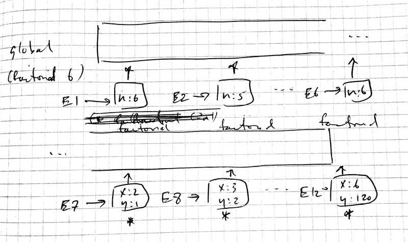
Figure 21: Recursive factorial
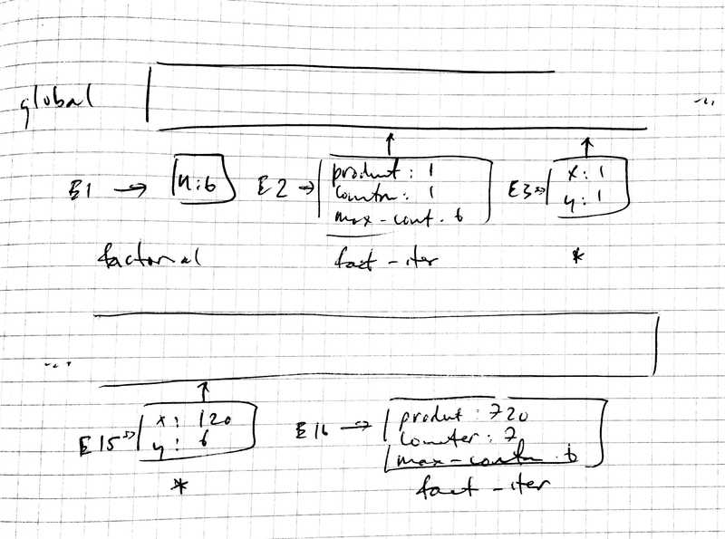
Figure 22: Iterative factorial
3.10 DONE 3.10
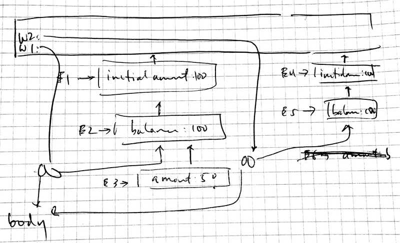
Figure 23: Environment model for make-withdraw
3.11 DONE 3.11
The local state for acc is kept in E1; the local state for acc2
would be kept in a separate environment E4 that resembles E1.
This is implementation-dependent; but the part of the environment
that would be shared between acc and acc2 would be the body of
the code for the external and internal functions.
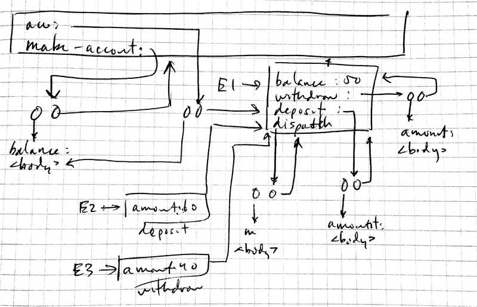
Figure 24: Environment model for make-account
3.12 DONE 3.12

Figure 25: Box-and-pointer for w, x, y and z
(use test) (define (append! x y) (set-cdr! (last-pair x) y) x) (define (last-pair x) (if (null? (cdr x)) x (last-pair (cdr x)))) (define x '(a b)) (define y '(c d)) (define z (append x y)) (test '(b) (cdr x)) (define w (append! x y)) (test '(b c d) (cdr x))
3.13 DONE 3.13
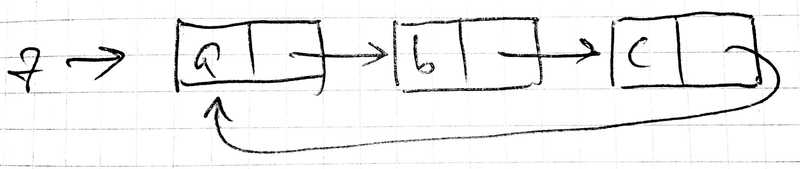
Figure 26: Box-and-pointer for cyclical z
3.14 DONE 3.14
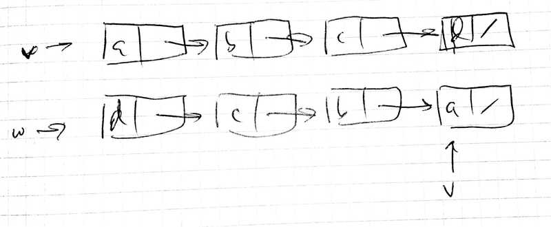
Figure 27: Box-and-pointer for mystery v and w
(use test) (define (mystery x) (let loop ((x x) (y '())) (if (null? x) y (let ((temp (cdr x))) (set-cdr! x y) (loop temp x))))) (let* ((v (list 'a 'b 'c 'd)) (w (mystery v))) (test v '(a)) (test w '(d c b a)))
3.15 DONE 3.15
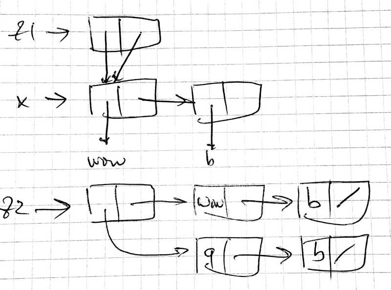
Figure 28: Box-and-pointer for mystery x, z1 and z2 after set-to-wow!
3.16 DONE 3.16
(use test) (define (count-pairs x) (if (not (pair? x)) 0 (+ (count-pairs (car x)) (count-pairs (cdr x)) 1))) (test 3 (count-pairs '(1 2 3))) (let* ((x (cons 1 (cons 2 '())))) (test 5 (count-pairs (cons x x)))) (let* ((x (cons 1 2)) (y (cons x x))) (test 7 (count-pairs (cons y y))))
3.17 DONE 3.17
Use hash-tables to check whether we’ve seen the node before.
(use srfi-69 test) (define (count-pairs x) (let ((seen? (make-hash-table))) (let iter ((x x)) (if (not (pair? x)) 0 (+ (iter (car x)) (iter (cdr x)) (if (hash-table-ref/default seen? x #f) 0 (begin (hash-table-set! seen? x #t) 1))))))) (let* ((x (cons 1 2)) (y (cons x x))) (test 3 (count-pairs (cons y y))))
3.18 DONE 3.18
(use srfi-1 srfi-69 test) (define (make-cycle x) (set-cdr! (last-pair x) x) x) (define (cycle? x) (let ((seen? (make-hash-table))) (let iter ((x x)) (and (not (null? x)) (or (hash-table-ref/default seen? x #f) (begin (hash-table-set! seen? x #t) (iter (cdr x)))))))) (test-assert (not (cycle? '(1 2 1)))) (test-assert (cycle? (make-cycle (list 1 2 1))))
3.19 DONE 3.19
Use Floyd’s with the composition of cdr.
(use test) (define (make-cycle x) (set-cdr! (last-pair x) x) x) (define (cycle? x) (let iter ((tortoise (cdr x)) (hare (cddr x))) (and (not (null? hare)) (or (eq? tortoise hare) (and (not (null? (cdr hare))) (iter (cdr tortoise) (cddr hare))))))) (test-assert (not (cycle? '(1 2 1)))) (test-assert (cycle? (make-cycle (list 1 2 1))))
3.20 DONE 3.20
- CLOSING NOTE
This doesn’t feel complete.
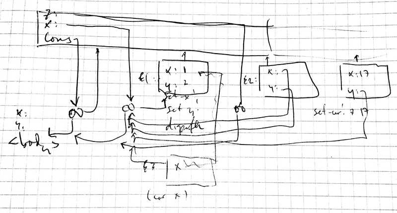
Figure 29: Environment diagram for set-car! and car
3.21 DONE 3.21
(use ports sicp test) (define print-queue (compose display car)) (define q1 (make-queue)) (test "(a)" (with-output-to-string (lambda () (print-queue (insert-queue! q1 'a))))) (test "(a b)" (with-output-to-string (lambda () (print-queue (insert-queue! q1 'b))))) (test "(b)" (with-output-to-string (lambda () (print-queue (delete-queue! q1))))) (test "()" (with-output-to-string (lambda () (print-queue (delete-queue! q1)))))
3.22 DONE 3.22
(define (make-queue) (let ((front-ptr '()) (rear-ptr '())) (define (set-front-ptr! new-front-ptr) (set! front-ptr new-front-ptr)) (define (set-rear-ptr! new-rear-ptr) (set! rear-ptr new-rear-ptr)) (define (empty-queue?) (null? front-ptr)) (lambda (message) (case message ((front-ptr) front-ptr) ((rear-ptr) rear-ptr) ((set-front-ptr!) set-front-ptr!) ((set-rear-ptr!) set-rear-ptr!) ((empty?) empty-queue?) ((front) (if (empty-queue?) (error "FRONT called with an empty queue") (car front-ptr))) ((insert!) (lambda (item) (let ((new-pair (cons item '()))) (cond ((empty-queue?) (set-front-ptr! new-pair) (set-rear-ptr! new-pair)) (else (set-cdr! rear-ptr new-pair) (set-rear-ptr! new-pair)))))) ((delete!) (cond ((empty-queue?) (error "DELETE! called with an empty queue")) (else (set-front-ptr! (cdr front-ptr))))) ((print) (display front-ptr)))))) (define (front-ptr queue) (queue 'front-ptr)) (define (rear-ptr queue) (queue 'rear-ptr)) (define (set-front-ptr! queue item) ((queue 'set-front-ptr!) item)) (define (set-rear-ptr! queue item) ((queue 'set-rear-ptr!) item)) (define (empty-queue? queue) (queue 'empty?)) (define (front-queue queue) (queue 'front)) (define (insert-queue! queue item) ((queue 'insert!) item)) (define (delete-queue! queue) (queue 'delete!)) (define (print-queue queue) (queue 'print)) (define q1 (make-queue)) (test "(a)" (with-output-to-string (lambda () (insert-queue! q1 'a) (print-queue q1)))) (test "(a b)" (with-output-to-string (lambda () (insert-queue! q1 'b) (print-queue q1)))) (test "(b)" (with-output-to-string (lambda () (delete-queue! q1) (print-queue q1)))) (test "()" (with-output-to-string (lambda () (delete-queue! q1) (print-queue q1))))
3.23 DONE 3.23
Implemented deques with something like a ternary cons cell (see car, cdr, csr (cooser)) to represent doubly-linked lists.
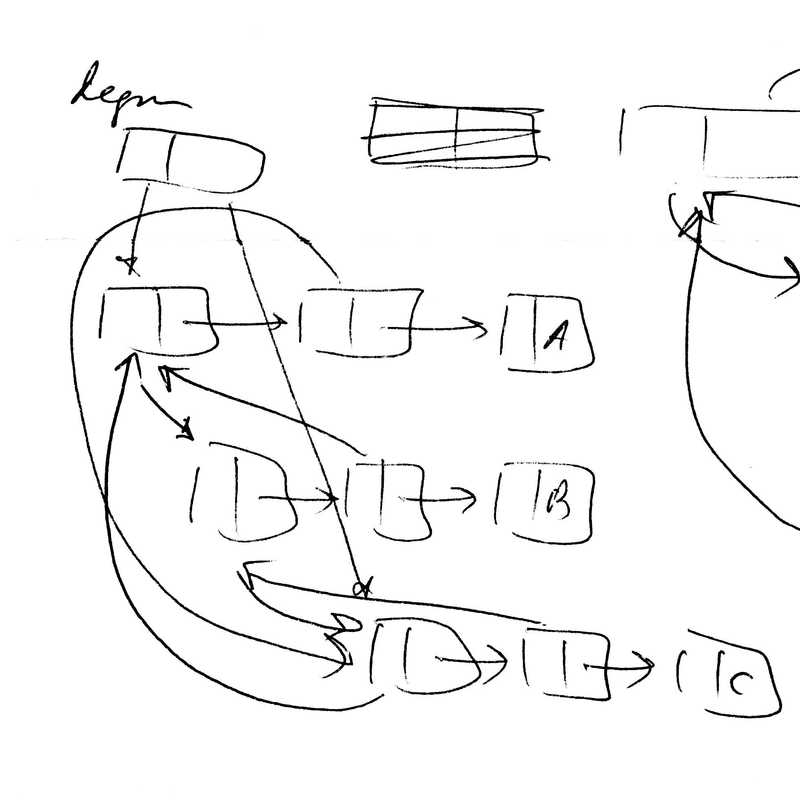
Figure 30: Deques with (quasi-ternary) conses
(use srfi-1 srfi-69 test) (define make-cell (case-lambda ((payload) (make-cell #f #f payload)) ((forward backward payload) (cons* forward backward payload)))) (define cell-forward car) (define cell-backward cadr) (define cell-payload cddr) (define (cell-set-forward! cell forward) (set-car! cell forward)) (define (cell-set-backward! cell backward) (set-car! (cdr cell) backward)) (define (cell-set-payload! cell payload) (set-cdr! (cdr cell) payload)) (define (cell->list front) (let iter ((cell (cell-backward front)) (payloads '())) (if (eq? cell front) (cons (cell-payload cell) payloads) (iter (cell-backward cell) (cons (cell-payload cell) payloads))))) (define (make-deque) (let ((front '()) (rear '())) (define (empty?) (null? front)) (lambda (message) (case message ((front) (if (empty?) (error "FRONT called with an empty deque.") (cell-payload front))) ((rear) (if (empty?) (error "REAR called with an empty deque.") (cell-payload rear))) ((front-insert!) (lambda (payload) (let ((cell (make-cell payload))) (when (empty?) (set! front cell) (set! rear cell)) (cell-set-forward! cell front) (cell-set-backward! cell rear) (cell-set-backward! front cell) (cell-set-forward! rear cell) (set! front cell)))) ((rear-insert!) (lambda (payload) (let ((cell (make-cell payload))) (when (empty?) (set! front cell) (set! rear cell)) (cell-set-backward! cell rear) (cell-set-forward! cell front) (cell-set-forward! rear cell) (cell-set-backward! front cell) (set! rear cell)))) ((front-delete!) (if (empty?) (error "FRONT-DELETE! called with empty deque.") (let ((new-front (cell-forward front))) (if (eq? front new-front) ;; Deque is empty. (begin (set! front '()) (set! rear '())) (begin (cell-set-backward! new-front rear) (cell-set-forward! rear new-front) (set! front new-front)))))) ((rear-delete!) (if (empty?) (error "REAR-DELETE! called with empty deque.") (let ((new-rear (cell-backward rear))) (if (eq? rear new-rear) ;; Deque is empty. (begin (set! front '()) (set! rear '())) (begin (cell-set-backward! front new-rear) (cell-set-forward! new-rear front) (set! rear new-rear)))))) ((->list) (if (empty?) '() (cell->list front))))))) (let ((deque (make-deque))) (test '() (deque '->list)) ((deque 'front-insert!) 'b) (test '(b) (deque '->list)) ((deque 'front-insert!) 'a) (test '(a b) (deque '->list)) ((deque 'rear-insert!) 'c) (test '(a b c) (deque '->list)) (deque 'front-delete!) (test '(b c) (deque '->list)) (deque 'rear-delete!) (test '(b) (deque '->list)))
3.24 DONE 3.24
Let’s demonstrate tolerant keys using a tunable epsilon.
(define make-table (case-lambda (() (make-table equal?)) ((same-key?) (let ((table (list '*table*))) (define (assoc key records) (cond ((null? records) #f) ((same-key? key (caar records)) (car records)) (else (assoc key (cdr records))))) (lambda (message) (case message ((lookup) (lambda (key) (let ((record (assoc key (cdr table)))) (and record (cdr record))))) ((insert!) (lambda (key value) (let ((record (assoc key (cdr table)))) (if record (set-cdr! record value) (set-cdr! table (cons (cons key value) (cdr table))))))) ((table) table)))))))
(use test) (include "table.scm") (define epsilon (make-parameter 0.1)) ;; Bad design to use a dynamic variable: could change the semantics of ;; the table during usage; define at `make-approx-equal?'? (define (approx-equal? x y) (< (abs (- x y)) (epsilon))) (let ((table (make-table approx-equal?))) ((table 'insert!) 1.0 'hello) (test 'hello ((table 'lookup) 0.99)))
3.25 DONE 3.25
We created a new data-structure, table-or-value; the
implementation consists of table-or-values indexed by key.
(use test) (include "table.scm") (define no-value (cons #f #f)) (define (no-value? object) (eq? no-value object)) (define make-table-or-value cons) (define table-or-value-table car) (define table-or-value-table-set! set-car!) (define table-or-value-value cdr) (define table-or-value-value-set! set-cdr!) (define (make-deep-table) (let ((table (make-table))) (lambda (message) (case message ((lookup) (lambda (keys) (let iter ((keys keys) (table table)) (let* ((key (car keys)) (subtable-or-value ((table 'lookup) key))) (and subtable-or-value (if (null? (cdr keys)) ; Terminal case (table-or-value-value subtable-or-value) (iter (cdr keys) (table-or-value-table subtable-or-value)))))))) ((insert!) (lambda (keys value) (let iter ((keys keys) (table table)) (let* ((key (car keys)) (subtable-or-value ((table 'lookup) key))) (if (null? (cdr keys)) ; Terminal case (if subtable-or-value (table-or-value-value-set! subtable-or-value value) ((table 'insert!) key (make-table-or-value (make-table) value))) (if subtable-or-value (iter (cdr keys) (table-or-value-table subtable-or-value)) (let ((subtable-or-value (make-table-or-value (make-table) no-value))) ((table 'insert!) key subtable-or-value) (iter (cdr keys) (table-or-value-table subtable-or-value))))))))) ((table) (table 'table)))))) (let ((table (make-deep-table))) ((table 'insert!) '(a) 1) ((table 'insert!) '(a b) 2) (test 1 ((table 'lookup) '(a))) (test 2 ((table 'lookup) '(a b))))
3.26 DONE 3.26
Let’s reuse tree-sets, but distinguishing between the key and the value; in the previous implementation, keys were values.
(include "tree-sets.scm") (define key-value cons) (define key car) (define value cdr) (define (element-of-set? x set) (cond ((null? set) #f) ((= (key x) (key (entry set))) #t) ((< (key x) (key (entry set))) (element-of-set? x (left-branch set))) ((> (key x) (key (entry set))) (element-of-set? x (right-branch set))))) (define (adjoin-set x set) (cond ((null? set) (make-tree x '() '())) ((= (key x) (key (entry set))) set) ((< (key x) (key (entry set))) (make-tree (entry set) (adjoin-set x (left-branch set)) (right-branch set))) ((> x (entry set)) (make-tree (entry set) (left-branch set) (adjoin-set x (right-branch set)))))) (define (lookup lookup-key tree) (if (null? tree) #f (let ((entry (entry tree))) (cond ((= lookup-key (key entry)) (value entry)) ((< lookup-key (key entry)) (lookup lookup-key (left-branch tree))) (else (lookup lookup-key (right-branch tree))))))) (let ((tree (list->tree (list (key-value 1 'a) (key-value 3 'b) (key-value 6 'c) (key-value 10 'd))))) (test 'c (lookup 6 tree)) (test-assert (not (lookup 5 tree))))
3.27 DONE 3.27
- CLOSING NOTE
We should redo this one to be a little clearer.
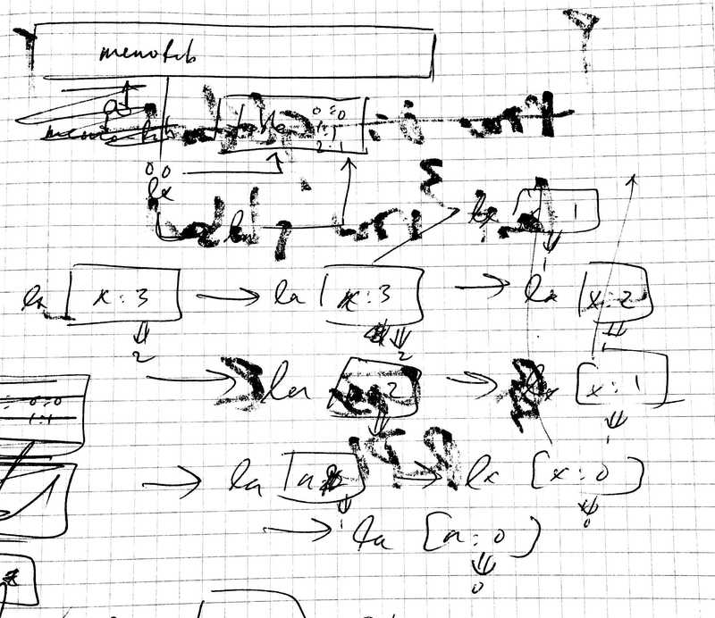
Figure 31: Environment diagram for memo-fib
3.28 DONE 3.28
(define (logical-or s t) (cond ((and (= s 1) (= t 1)) 1) ((and (= s 1) (= t 0)) 1) ((and (= s 0) (= t 1)) 1) ((and (= s 0) (= t 0)) 0) (else (error "Invalid signal" s)))) (define (or-gate a1 a2 output) (define (or-action-procedure) (let ((new-value (logical-or (get-signal a1) (get-signal a2)))) (after-delay (or-gate-delay) (lambda () (set-signal! output new-value))))) (add-action! a1 or-action-procedure) (add-action! a2 or-action-procedure) 'ok)
(use sicp test) (include "or-gate.scm") (define (test-or-gate test-or-gate) (let ((a (make-wire)) (b (make-wire)) (c (make-wire))) (or-gate a b c) (test-or-gate a b c))) (test-or-gate (lambda (a b c) (propagate) (test 0 (get-signal c)))) (test-or-gate (lambda (a b c) (set-signal! a 1) (propagate) (test 1 (get-signal c)))) (test-or-gate (lambda (a b c) (set-signal! b 1) (propagate) (test 1 (get-signal c)))) (test-or-gate (lambda (a b c) (set-signal! a 1) (set-signal! b 1) (propagate) (test 1 (get-signal c))))
3.29 DONE 3.29
On analogy with \(\lnot (\lnot (x \lor y)) \equiv \lnot (\lnot x \land \lnot y)\), the compound or-gate might look like:
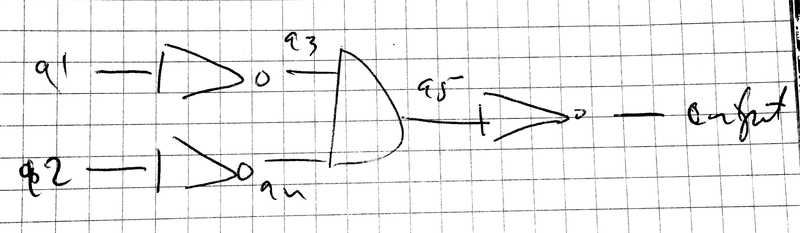
Figure 32: Compound or-gate
whose delay is \(2\,\text{inverterDelay} + \text{andGateDelay}\).
(use sicp test) (define (or-gate a1 a2 output) (let ((a3 (make-wire)) (a4 (make-wire)) (a5 (make-wire))) (inverter a1 a3) (inverter a2 a4) (and-gate a3 a4 a5) (inverter a5 output) 'ok)) (define (test-or-gate test-or-gate) (let ((a (make-wire)) (b (make-wire)) (c (make-wire))) (or-gate a b c) (test-or-gate a b c))) (test-or-gate (lambda (a b c) (propagate) (test 0 (get-signal c)))) (test-or-gate (lambda (a b c) (set-signal! a 1) (propagate) (test 1 (get-signal c)))) (test-or-gate (lambda (a b c) (set-signal! b 1) (propagate) (test 1 (get-signal c)))) (test-or-gate (lambda (a b c) (set-signal! a 1) (set-signal! b 1) (propagate) (test 1 (get-signal c))))
3.30 DONE 3.30
A full adder is two half adders plus an or-gate; whereas a half adder is an or-gate, two and-gates and an inverter.
The total cost of a ripple-carry adder for \(n\) bits is therefore:
\begin{align} n \times (2 \times (\text{orGateDelay} + 2\,\text{andGateDelay} + \text{inverterDelay}) + \\ \text{orGateDelay}) \end{align}(use sicp srfi-26 test) (define (ripple-carry-adder a b s c-out) (let iter ((a a) (b b) (s s) (c-in (make-wire))) (unless (null? a) (let ((c-out (if (null? (cdr a)) c-out (make-wire)))) (full-adder (car a) (car b) c-in (car s) c-out) (iter (cdr a) (cdr b) (cdr s) c-out))))) (let ((a (list (make-wire 1) (make-wire 1) (make-wire 1) (make-wire 1))) (b (list (make-wire 1) (make-wire 1) (make-wire 1) (make-wire 1))) (s (list (make-wire) (make-wire) (make-wire) (make-wire))) (c (make-wire))) (ripple-carry-adder a b s c) (propagate) (test "15 + 15 = 30 in binary" '(1 1 1 1 0) (map get-signal (cons c (reverse s)))))
3.31 TODO 3.31
The first call to proc scheduled the action; interestingly,
however, don’t see a difference in the half-adder example.
(use sicp test) (parameterize ((the-agenda (make-agenda))) (let ((input-1 (make-wire)) (input-2 (make-wire)) (sum (make-wire)) (carry (make-wire))) (probe 'sum sum) (probe 'carry carry) (half-adder input-1 input-2 sum carry) (set-signal! input-1 1) (propagate))) (define make-wire-no-proc (case-lambda (() (make-wire 0)) ((signal-value) (let ((action-procedures '())) (define (set-my-signal! new-value) (if (not (= signal-value new-value)) (begin (set! signal-value new-value) (call-each action-procedures)) 'done)) (define (accept-action-procedure! proc) (set! action-procedures (cons proc action-procedures))) (define (dispatch m) (cond ((eq? m 'get-signal) signal-value) ((eq? m 'set-signal!) set-my-signal!) ((eq? m 'add-action!) accept-action-procedure!) (else (error "Unknown operation: WIRE" m)))) dispatch)))) (parameterize ((the-agenda (make-agenda))) (let ((input-1 (make-wire-no-proc)) (input-2 (make-wire-no-proc)) (sum (make-wire-no-proc)) (carry (make-wire-no-proc))) (probe 'sum sum) (probe 'carry carry) (half-adder input-1 input-2 sum carry) (set-signal! input-1 1) (propagate) (get-signal sum)))
3.32 TODO 3.32
(use sicp test) (define (remove-first-agenda-item! agenda) (let ((q (segment-queue (first-segment agenda)))) (set! q (cdr q)) (if (null? q) (set-segments! agenda (rest-segments agenda))))) (define (first-agenda-item agenda) (if (empty-agenda? agenda) (error "Agenda is empty: FIRST-AGENDA-ITEM") (let ((first-seg (first-segment agenda))) (set-current-time! agenda (segment-time first-seg)) (car (segment-queue first-seg))))) (define (add-to-agenda! time action agenda) (define (belongs-before? segments) (or (null? segments) (< time (segment-time (car segments))))) (define (make-new-time-segment time action) (let ((q (list))) (set! q (cons action q)) (make-time-segment time q))) (define (add-to-segments! segments) (if (= (segment-time (car segments)) time) (set-cdr! (car segments) (cons action (segment-queue (car segments)))) ;; (insert-queue! (segment-queue (car segments)) ;; action) (let ((rest (cdr segments))) (if (belongs-before? rest) (set-cdr! segments (cons (make-new-time-segment time action) (cdr segments))) (add-to-segments! rest))))) (let ((segments (segments agenda))) (if (belongs-before? segments) (set-segments! agenda (cons (make-new-time-segment time action) segments)) (add-to-segments! segments)))) (let ((a (make-wire 0)) (b (make-wire 1)) (c (make-wire)) (d (make-wire)) (e (make-wire))) (inverter a c) (inverter b d) (and-gate c d e) (propagate) (get-signal e))
3.33 DONE 3.33
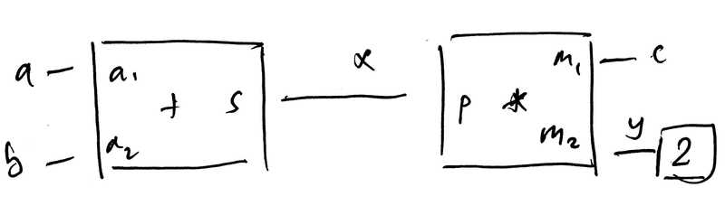
Figure 33: The average-relation (\(2c = a + b\)) as a constraint network
(use sicp-constraints test) (define (averager a b c) (let ((x (make-connector)) (y (make-connector))) (adder a b x) (multiplier c y x) (constant 2 y) 'ok)) (define a (make-connector)) (define b (make-connector)) (define c (make-connector)) (averager a b c) (set-value! a 3 'user) (set-value! b 5 'user) (test 4 (get-value c))
3.34 DONE 3.34
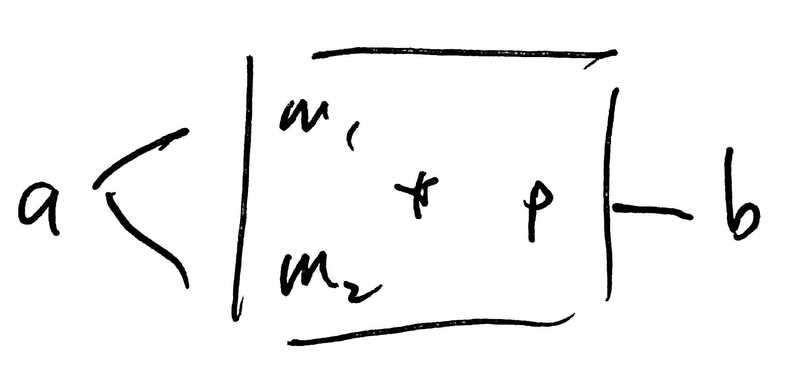
Figure 34: A pathological square-relation
If \(b\) is set and neither \(m_1\) nor \(m_2\) are set, it will not square (there is not enough information); if \(a\) is set, on the other hand, both \(m_1\) and \(m_2\) are also set and it will square.
(Not to mention the problem of generating solutions for \(m_1\) and \(m_2\) when there is not enough information.)
(use sicp-constraints test) (define (squarer a b) (multiplier a a b)) (let ((a (make-connector)) (b (make-connector))) (squarer a b) (set-value! b 4 'user) (test-assert "a has not been set." (not (has-value? a))) (forget-value! b 'user) (set-value! a 2 'user) (test "b is 4." 4 (get-value b)))
3.35 DONE 3.35
(use sicp-constraints test) (define (squarer a b) (define (process-new-value) (if (has-value? b) (if (< (get-value b) 0) (error "square less than 0: SQUARER" (get-value b)) (set-value! a (sqrt (get-value b)) me)) (set-value! b (* (get-value a) (get-value a)) me))) (define (process-forget-value) (forget-value! a me) (forget-value! b me) (process-new-value)) (define (me request) (case request ((I-have-a-value) (process-new-value)) ((I-lost-my-value) (process-forget-value)) (else (error "Unknown request: SQUARER" request)))) (connect a me) (connect b me) me) (let ((a (make-connector)) (b (make-connector))) (squarer a b) (set-value! b 2 'user) (test 1.4142135623731 (get-value a))) (let ((a (make-connector)) (b (make-connector))) (squarer a b) (set-value! a 2 'user) (test 4 (get-value b)))
3.36 DONE 3.36
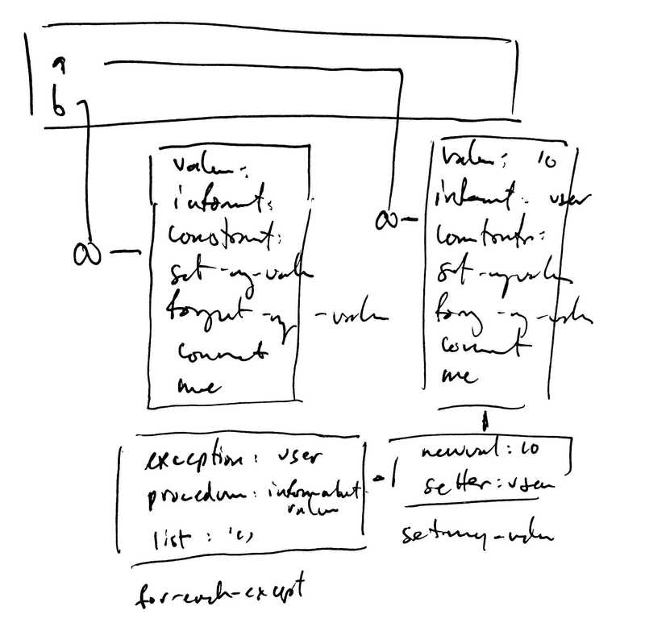
Figure 35: Environment diagram for (for-each-except setter inform-about-value constraints)
3.37 DONE 3.37
(use sicp-constraints test) (define (c+ x y) (let ((z (make-connector))) (adder x y z) z)) (define (c* x y) (let ((z (make-connector))) (multiplier x y z) z)) (define (c/ x y) (let ((z (make-connector))) (multiplier y z x) z)) (define (cv x) (let ((y (make-connector))) (constant x y) y)) (define (celsius-fahrenheit-converter x) (c+ (c* (c/ (cv 9) (cv 5)) x) (cv 32))) (define C (make-connector)) (define F (celsius-fahrenheit-converter C)) (set-value! F 212 'user) (test 100.0 (get-value C))
3.38 DONE 3.38
| \(balance_0\) | \(op_0\) | \(op_1\) | \(op_2\) | \(balance_4\) |
|---|---|---|---|---|
| 100 | +10 | -20 | /2 | 45 |
| 100 | +10 | /2 | -20 | 35 |
| 100 | -20 | +10 | /2 | 45 |
| 100 | -20 | /2 | +10 | 50 |
| 100 | /2 | -20 | +10 | 40 |
| 100 | /2 | +10 | -20 | 40 |
Whereas sequential operations can result in any permutation of operations (for \(n!\) possibilites); interleaved operations, on the other hand, can result (due to preëmption) in any power-permutation of operations excluding the empty set (for \(\sum_{i=1}^n P_{n,i}\) possibilities).
The new possibilities in the interleaved case are 30, 55, 60, 80, 90, 110.
| \(balance_0\) | \(op_0\) | \(op_1\) | \(op_2\) | \(balance_4\) |
|---|---|---|---|---|
| 100 | /2 | 50 | ||
| 100 | +10 | 110 | ||
| 100 | -20 | 80 | ||
| 100 | /2 | +10 | 60 | |
| 100 | /2 | -20 | 30 | |
| 100 | +10 | /2 | 55 | |
| 100 | +10 | -20 | 90 | |
| 100 | -20 | /2 | 40 | |
| 100 | -20 | +10 | 90 | |
| 100 | +10 | -20 | /2 | 45 |
| 100 | +10 | /2 | -20 | 35 |
| 100 | -20 | +10 | /2 | 45 |
| 100 | -20 | /2 | +10 | 50 |
| 100 | /2 | -20 | +10 | 40 |
| 100 | /2 | +10 | -20 | 40 |
The timing might look something this:
| Time | Bank | Peter | Paul | Mary |
|---|---|---|---|---|
| 0 | (get-balance) => 100 |
(get-balance) => 100 |
||
| 1 | (set-balance! 90) |
|||
| 2 | (set-balance! 110) |
(get-balance) => 110 |
||
| 3 | (set-balance! 55) |
3.39 DONE 3.39
- 101
- \(P_1\) sets \(x\) to 100, \(P_2\) increments \(x\) to 101.
- 100
- \(P_1\) accesses \(x\), \(P_2\) sets \(x\) to 11, \(P_1\) sets \(x\) to 100.
- 121
- \(P_2\) increments \(x\) to 11, \(P_1\) sets \(x\) to 121.
3.40 DONE 3.40
If there are six atomic operations: p1-access, p1-multiply,
p1-set!, p2-access, p2-multiply, p2-set!; one can think of
this as an interleaving sequence problem where \(P_1 = \{access,
multiply, set!\}\) and \(P_2 = \{access, multiply, multiply, set!\}\).
The number of ways to interleave the sequences are \(\binom{|P_1| + |P_2|}{|P_1|} = 35\); we can simulate the order of operations in the machine to see that the possibilities are 100, 1000, 10000, 100000, 1000000 and which sequences of operations generate them.
(use combinatorics srfi-69 srfi-95 vector-lib) (define (operations-set! operations combination access multiply set!) (let iter ((access? #t) (combination combination)) (unless (null? combination) (let ((operation (car combination))) (cond (access? (vector-set! operations operation access)) ((null? (cdr combination)) (vector-set! operations operation set!)) (else (vector-set! operations operation multiply)))) (iter #f (cdr combination))))) (define (combination->operations combinations combination) (let ((operations (make-vector 7)) (anti-combination (lset-difference = combinations combination))) (operations-set! operations (sort combination <) 'p1-access 'p1-multiply 'p1-set!) (operations-set! operations (sort anti-combination <) 'p2-access 'p2-multiply 'p2-set!) operations)) (define (apply-operations x operations) (let ((x1 #f) (x2 #f)) (vector-for-each (lambda (i operation) (case operation ((p1-access) (set! x1 x)) ((p1-multiply) (set! x1 (* x1 x))) ((p1-set!) (set! x x1)) ((p2-access) (set! x2 x)) ((p2-multiply) (set! x2 (* x2 x))) ((p2-set!) (set! x x2)) (else (error "Unknown operation")))) operations)) x) (let ((x->operations (make-hash-table)) (combinations (iota 7))) (unordered-subset-for-each (lambda (combination) (let ((x 10)) (let* ((operations (combination->operations combinations combination)) (x (apply-operations x operations))) (hash-table-update!/default x->operations x (lambda (x-operations) (cons operations x-operations)) '())))) combinations 3) (sort (hash-table->alist x->operations) < car))
yields:
((100
#(p2-access p2-multiply p2-multiply p1-access p1-multiply p2-set! p1-set!)
#(p2-access p2-multiply p1-access p2-multiply p1-multiply p2-set! p1-set!)
#(p2-access p2-multiply p1-access p1-multiply p2-multiply p2-set! p1-set!)
#(p2-access p1-access p2-multiply p2-multiply p1-multiply p2-set! p1-set!)
#(p2-access p1-access p2-multiply p1-multiply p2-multiply p2-set! p1-set!)
#(p2-access p1-access p1-multiply p2-multiply p2-multiply p2-set! p1-set!)
#(p1-access p2-access p2-multiply p2-multiply p1-multiply p2-set! p1-set!)
#(p1-access p2-access p2-multiply p1-multiply p2-multiply p2-set! p1-set!)
#(p1-access p2-access p1-multiply p2-multiply p2-multiply p2-set! p1-set!)
#(p1-access p1-multiply p2-access p2-multiply p2-multiply p2-set! p1-set!))
(1000
#(p2-access p2-multiply p2-multiply p1-access p1-multiply p1-set! p2-set!)
#(p2-access p2-multiply p1-access p2-multiply p1-multiply p1-set! p2-set!)
#(p2-access p2-multiply p1-access p1-multiply p2-multiply p1-set! p2-set!)
#(p2-access p1-access p2-multiply p2-multiply p1-multiply p1-set! p2-set!)
#(p2-access p1-access p2-multiply p1-multiply p2-multiply p1-set! p2-set!)
#(p2-access p1-access p1-multiply p2-multiply p2-multiply p1-set! p2-set!)
#(p1-access p2-access p2-multiply p2-multiply p1-multiply p1-set! p2-set!)
#(p1-access p2-access p2-multiply p1-multiply p2-multiply p1-set! p2-set!)
#(p1-access p2-access p1-multiply p2-multiply p2-multiply p1-set! p2-set!)
#(p1-access p1-multiply p2-access p2-multiply p2-multiply p1-set! p2-set!))
(10000
#(p2-access p2-multiply p2-multiply p1-access p2-set! p1-multiply p1-set!)
#(p2-access p2-multiply p1-access p2-multiply p2-set! p1-multiply p1-set!)
#(p2-access p2-multiply p1-access p1-multiply p1-set! p2-multiply p2-set!)
#(p2-access p1-access p2-multiply p2-multiply p2-set! p1-multiply p1-set!)
#(p2-access p1-access p2-multiply p1-multiply p1-set! p2-multiply p2-set!)
#(p2-access p1-access p1-multiply p2-multiply p1-set! p2-multiply p2-set!)
#(p1-access p2-access p2-multiply p2-multiply p2-set! p1-multiply p1-set!)
#(p1-access p2-access p2-multiply p1-multiply p1-set! p2-multiply p2-set!)
#(p1-access p2-access p1-multiply p2-multiply p1-set! p2-multiply p2-set!)
#(p1-access p1-multiply p2-access p2-multiply p1-set! p2-multiply p2-set!))
(100000
#(p2-access p1-access p1-multiply p1-set! p2-multiply p2-multiply p2-set!)
#(p1-access p2-access p1-multiply p1-set! p2-multiply p2-multiply p2-set!)
#(p1-access p1-multiply p2-access p1-set! p2-multiply p2-multiply p2-set!))
(1000000
#(p2-access p2-multiply p2-multiply p2-set! p1-access p1-multiply p1-set!)
#(p1-access
p1-multiply
p1-set!
p2-access
p2-multiply
p2-multiply
p2-set!)))
Serially, the only possibility is 1000000.
3.41 TODO 3.41
If there are processor-level interlocks on memory operations (where it is impossible to read a value quicker than it is written), accessing the balance unprotected balance should be ok.
TODO: Think about accessing balance in the middle of withdraw.
3.42 DONE 3.42
As implemented, this is a safe change to make; dynamic-wind will
take care of the details.
3.43 DONE 3.43
The only source of indeterminate results would be concurrent access followed by out-of-order operations; with sequential access, the balances $10, $20 and $30 should be preserved because access and mutation are serialized.
Imagine something like (exchange a1 a2), =(exchange a2 a3) using
the first version of exchange:
| a1 | a2 | a3 |
|---|---|---|
| \(access_1\): 10 | \(access_1\): 20 | |
| \(access_2\): 20 | \(access_2\):30 | |
| \(set!_2\): 30 | \(set!_2\): 20 | |
| \(set!_1\): 20 | \(set!_1\): 20 |
Since it calculates deltas, it should preserve cash-in, cash-out; and, therefore, the totals will remain the same.
Imagine if it did not serialize the transactions on individual accounts:
| a1 | a2 | a3 |
|---|---|---|
| \(access_1\): 10 | \(access_1\): 20 | |
| \(access_2\): 20 | \(access_2\):30 | |
| \(set!_1\): 20 | \(set!_1\): 10 | |
| \(set!_2\): 30 | \(set!_2\): 20 |
3.44 DONE 3.44
One still has the same problem of interleaved access and setting as
3.43, despite serialized deposit and withdraw; external
serialization is necessary like the implementation of exchange.
3.45 DONE 3.45
This results in deadlock: serialized-exchange grabs the mutices,
but so does withdraw and deposit.
(use test sicp-concurrency) (define (make-account-and-serializer balance) (define (withdraw amount) (if (>= balance amount) (begin (set! balance (- balance amount)) balance) "Insufficient funds")) (define (deposit amount) (set! balance (+ balance amount)) balance) (let ((balance-serializer (make-serializer))) (define (dispatch m) (cond ((eq? m 'withdraw) (balance-serializer withdraw)) ((eq? m 'deposit) (balance-serializer deposit)) ((eq? m 'balance) balance) ((eq? m 'serializer) balance-serializer) (else (error "Unknown request: MAKE-ACCOUNT" m)))) dispatch)) (define (exchange account1 account2) (let ((difference (- (account1 'balance) (account2 'balance)))) ((account1 'withdraw) difference) ((account2 'deposit) difference))) (define (serialized-exchange account1 account2) (let ((serializer1 (account1 'serializer)) (serializer2 (account2 'serializer))) ((serializer1 (serializer2 exchange)) account1 account2))) (let ((a1 (make-account-and-serializer 10)) (a2 (make-account-and-serializer 10))) ;; Deadlocks! (test-error (serialized-exchange a1 a2)))
3.46 DONE 3.46
| p1 | p2 |
|---|---|
(car cell) => #t |
|
(car cell) => #t |
|
(set-car! cell #f) |
|
(set-car! cell #f) |
|
(apply p args) |
|
(apply p args) |
3.47 DONE 3.47
Let’s use a mutex with a condition-variable to wake sleeping threads
(instead of e.g. idling and polling); we did not implement the
test-and-set! version, since we lack the equivalent of
MIT-Scheme’s without-interrupts.
The basic idea is that, if the capacity goes to 0, the thread sleeps on the condition until a condition-variable broadcast wakes it up; it then tries to re-acquire the semaphore (and so do all other sleeping threads).1
If the capacity is positive, it decrements the capacity and proceeds unhindered.
(use sicp-concurrency srfi-18 test) (define (make-semaphore capacity) (let ((protect-capacity (make-mutex)) (capacity-increased (make-condition-variable))) (define (release!) (with-mutex-locked protect-capacity (lambda () (set! capacity (+ capacity 1)) (condition-variable-broadcast! capacity-increased)))) (define (acquire!) (mutex-lock! protect-capacity) (if (zero? capacity) (begin (mutex-unlock! protect-capacity capacity-increased) (acquire!)) (begin (set! capacity (- capacity 1)) (mutex-unlock! protect-capacity)))) (lambda (message) (case message ((release!) (release!)) ((acquire!) (acquire!)) (else (error "Unknown message" message)))))) (define (semaphore-acquire! semaphore) (semaphore 'acquire!)) (define (semaphore-release! semaphore) (semaphore 'release!)) (define (with-semaphore-acquired semaphore thunk) (dynamic-wind (lambda () (semaphore-acquire! semaphore)) thunk (lambda () (semaphore-release! semaphore)))) (let ((semaphore (make-semaphore 2)) (result '())) (parallel-execute (lambda () (with-semaphore-acquired semaphore (lambda () (thread-sleep! 0.1) (set! result (cons 2 result))))) ;; This should run last. (lambda () (with-semaphore-acquired semaphore (lambda () (thread-sleep! 0.2) (test result '(1 2))))) (lambda () (with-semaphore-acquired semaphore (lambda () (set! result (cons 1 result)))))))
3.48 DONE 3.48
There are four cases of locking order, two of which result in deadlock:
| Scenario | \(Peter_1\) | \(Paul_1\) | \(Peter_2\) | \(Paul_2\) | Deadlock? |
|---|---|---|---|---|---|
| 1 | \(a1\) | \(a2\) | \(a2\) | \(a1\) | Yes |
| 2 | \(a1\) | \(a1\) | \(a2\) | \(a2\) | No |
| 3 | \(a2\) | \(a1\) | \(a1\) | \(a2\) | Yes |
| 4 | \(a2\) | \(a2\) | \(a1\) | \(a1\) | No |
Enforcing a locking order based on the account number constrains the locking order to scenarios 2 and 4; we’ve implemented this by sorting serializers by account number, composing them and finally applying them to the accounts:
(define (serialized-exchange account1 account2) (let ((serializers (sort-serializers account1 account2))) (((apply compose serializers) exchange) account1 account2)))
Here is the complete code:
(use data-structures sicp-concurrency srfi-95 test) (define current-account-number (make-parameter 0)) (define (exchange account1 account2) (let ((difference (- (account1 'balance) (account2 'balance)))) ((account1 'withdraw) difference) ((account2 'deposit) difference))) (define (make-account-and-serializer balance) (define account-number (current-account-number (+ (current-account-number) 1))) (define (withdraw amount) (if (>= balance amount) (begin (set! balance (- balance amount)) balance) "Insufficient funds")) (define (deposit amount) (set! balance (+ balance amount)) balance) (let ((balance-serializer (make-serializer))) (define (dispatch m) (cond ((eq? m 'withdraw) withdraw) ((eq? m 'deposit) deposit) ((eq? m 'balance) balance) ((eq? m 'serializer) balance-serializer) ((eq? m 'account-number) account-number) (else (error "Unknown request: MAKE-ACCOUNT" m)))) dispatch)) (define (deposit account amount) (let ((s (account 'serializer)) (d (account 'deposit))) ((s d) amount))) (define (account-number account) (account 'account-number)) (define (serializer account) (account 'serializer)) (define (sort-accounts accounts) (sort accounts < account-number)) (define (sort-serializers . accounts) (map serializer (sort-accounts accounts))) ;; This works by sorting the serializers by account-number of the ;; adherent accounts, composing and finally applying them to the ;; accounts. (define (serialized-exchange account1 account2) (let ((serializers (sort-serializers account1 account2))) (((apply compose serializers) exchange) account1 account2))) (let ((peter (make-account-and-serializer 100)) (paul (make-account-and-serializer 10))) (exchange peter paul) (test 10 (peter 'balance)))
3.49 DONE 3.49
In the implementation above, the account-numbers are constants whose read-write interlocks are governed by the operating-system itself; one could imagine a scenario, however, in which the account-numbers can change and access to them needs to be serialized.
In such a scenario, the deadlock table still applies; but the problem has been pushed one level higher.
3.50 DONE 3.50
(define (stream-map proc . argstreams) (if (any stream-null? argstreams) stream-null (cons-stream (apply proc (map stream-car argstreams)) (apply stream-map (cons proc (map stream-cdr argstreams))))))
(use sicp-streams test) (include "stream-map.scm") (let ((iota (stream-enumerate-interval 0 2)) (kappa (stream-enumerate-interval 2 4))) (test '(0 3 8) (stream->list (stream-map * iota kappa))))
3.51 DONE 3.51
Because the car of the stream is not lazy, stream-map generates
a 0; (stream-ref x 5) consumes the next four numbers (since 0 was
memoized), plus a non-lazy 5th (the car of the next cell); and
similarly (stream-ref x 7): 0 through 5 are memoized, it consumes
6 plus the next one.
(use ports sicp-streams test) (define (show x) (display x) x) (let ((x (make-parameter #f))) (test "0" (with-output-to-string (lambda () (x (stream-map show (stream-enumerate-interval 0 10)))))) (test "12345" (with-output-to-string (lambda () (stream-ref (x) 5)))) (test "67" (with-output-to-string (lambda () (stream-ref (x) 7)))))
3.52 DONE 3.52
Since the first element of streams are non-lazy, stream-map
produces 1; stream-filter produces 6, since it eagerly evaluates
to the first even number and then one (i.e., it contains a
cons-stream); the second stream-filter produces 10 and stops
(i.e., it does not contains a cons-stream).
(Stream-ref y 7) consumes to 14, ignoring elements already
consumed (i.e., memoized); and display-stream consumes the rest.
(use sicp-streams test) (define sum 0) (define (accum x) (set! sum (+ x sum)) sum) (define seq (stream-map accum (stream-enumerate-interval 1 20))) (test 1 sum) (define y (stream-filter even? seq)) (test 6 sum) (define z (stream-filter (lambda (x) (= (remainder x 5) 0)) seq)) (test 10 sum) (stream-ref y 7) (test 136 sum) (display-stream z) (test 210 sum)
3.53 DONE 3.53
The elements of the stream should be powers of two, e.g. \(1, 2, 4, 8, ..., n^2\).
The first element is one; the second is one plus one; the third, one plus one plus one plus one; etc.
(include "stream-map.scm") (define (add-streams s1 s2) (stream-map + s1 s2))
(use sicp-streams test) (include "add-streams.scm") (define s (cons-stream 1 (add-streams s s))) (test '(1 2 4 8) (stream->list s 4))
3.54 DONE 3.54
(use sicp-streams test) (include "stream-map.scm") (define (mul-streams s1 s2) (stream-map * s1 s2)) (define factorial (cons-stream 1 (mul-streams factorial integers))) (test '(1 1 2 6 24 120) (stream->list factorial 6))
3.55 DONE 3.55
Interestingly, this is not correct (where the precedence of
partial-sums over add-streams has been swapped in the
recursion):
(define (partial-sums stream) (cons-stream (stream-car stream) (partial-sums (add-streams (stream-cdr stream) stream))))
It yields instead (1 3 8 20 48); why?
(include "add-streams.scm") (define (partial-sums stream) (cons-stream (stream-car stream) (add-streams (stream-cdr stream) (partial-sums stream))))
(use sicp-streams test)
(include "partial-sums.scm")
(test '(1 3 6 10 15)
(stream->list (partial-sums integers) 5))
3.56 DONE 3.56
Regular numbers, e.g. Hamming numbers; also \(k\)-smooth, where \(k = 5\). See Dijkstra's solution.
(use sicp-streams test) (define hamming-numbers (cons-stream 1 (merge (scale-stream hamming-numbers 2) (merge (scale-stream hamming-numbers 3) (scale-stream hamming-numbers 5))))) (test '(1 2 3 4 5 6 8 9 10 12 15 16 18 20 24 25 27 30 32 36) (stream->list hamming-numbers 20))
3.57 DONE 3.57
Fibs provides 0 and 1; and every subsequent call thereafter to
add-streams only does one new addition on (stream-cdr fibs), the
rest are memoized.
For the \(n^th\) Fibonacci number, therefore, there are \(n - 1\) additions; an unmemoized Fibonacci would suffer the same exponential complexity as the naïve recursive formulation.
(use sicp-streams test) (include "stream-map.scm") (define additions (make-parameter 0)) (define (add x y) (additions (+ (additions) 1)) (+ x y)) (define (add-streams s1 s2) (stream-map add s1 s2)) (define fibs (cons-stream 0 (cons-stream 1 (add-streams (stream-cdr fibs) fibs)))) (stream->list fibs 10) (test 9 (additions))
3.58 DONE 3.58
Expand is the decimal expansion in some radix of
\(\frac{num}{den}\); it works by consing the quotient (like a car)
to the remainder (like a cdr) recursively.
(use sicp-streams test) (define (expand num den radix) (cons-stream (quotient (* num radix) den) (expand (remainder (* num radix) den) den radix))) (test '(1 4 2 8 5 7 1 4 2 8 5 7) (stream->list (expand 1 7 10) 12)) (test '(3 7 5 0 0 0 0) (stream->list (expand 3 8 10) 7))
3.59 DONE 3.59
(include "stream-map.scm") (define (integrate-series coefficients) (stream-map (lambda (integral coefficient) (* (/ 1 integral) coefficient)) integers coefficients))
(use sicp-streams test) (include "integrate-series.scm") (define ones (cons-stream 1 ones)) (test '(1 1/2 1/3 1/4 1/5) (stream->list (integrate-series ones) 5))
(include "integrate-series.scm") (define cosine-series (cons-stream 1 (stream-map - (integrate-series sine-series)))) (define sine-series (cons-stream 0 (integrate-series cosine-series)))
(use numbers sicp-streams test)
(include "trig-series.scm")
(test '(1 0 -1/2 0 1/24) (stream->list cosine-series 5))
(test '(0 1 0 -1/6 0) (stream->list sine-series 5))
3.60 DONE 3.60
(include "add-streams.scm") (define (mul-series s1 s2) (cons-stream (* (stream-car s1) (stream-car s2)) (add-streams (scale-stream (stream-cdr s2) (stream-car s1)) (mul-series (stream-cdr s1) s2))))
(use sicp-streams test) (include "add-streams.scm") (include "mul-series.scm") (include "trig-series.scm") (test 1.0 (apply + (stream->list (add-streams (mul-series sine-series sine-series) (mul-series cosine-series cosine-series)) 10)))
3.61 DONE 3.61
(include "mul-series.scm") (define (invert-unit-series series) (cons-stream 1 (stream-map - (mul-series (stream-cdr series) (invert-unit-series series)))))
(use sicp-streams test) (include "invert-unit-series.scm") (include "mul-series.scm") (include "trig-series.scm") (test 1.0 (apply + (stream->list (mul-series cosine-series (invert-unit-series cosine-series)) 5)))
3.62 DONE 3.62
Since \(\tan \theta = \frac{\sin \theta}{\cos \theta}\); and since the Maclaurin series of tan is \(x + \frac{x^3}{3} + \frac{2x^5}{15} + \dots\):
(use sicp-streams test) (include "mul-series.scm") (include "invert-unit-series.scm") (include "trig-series.scm") (define (div-series s1 s2) (if (zero? (stream-car s2)) (error "Division by zero: DIV-SERIES") (mul-series s1 (invert-unit-series s2)))) (define tan-series (div-series sine-series cosine-series)) (parameterize ((current-test-epsilon 0.001)) (test (tan 1) (apply + (stream->list tan-series 16))))
3.63 DONE 3.63
Guesses is a recursive stream that itself depends upon guesses;
this gives memo-proc a chance to reify the stream, which would not
be the case of it called sqrt-stream again.
3.64 DONE 3.64
Contrary to the footnote in SICP, it’s possible to use letrec
instead of define in sqrt-stream.
(define (stream-limit stream tolerance) (let iter ((car (stream-car stream)) (cdr (stream-cdr stream)) (iterations 0)) (let ((cadr (stream-car cdr))) (if (< (abs (- cadr car)) tolerance) (values cadr iterations) (iter cadr (stream-cdr cdr) (+ iterations 1))))))
(use sicp sicp-streams test) (include "stream-limit.scm") (define (sqrt-improve guess x) (average guess (/ x guess))) (define (sqrt-stream x) (letrec ((guesses (cons-stream 1.0 (stream-map (lambda (guess) (sqrt-improve guess x)) guesses)))) guesses)) (test (sqrt 2) (stream-limit (sqrt-stream 2) 0.001))
3.65 DONE 3.65
It takes seven iterations to get to within \(10e-14\) of \(\ln 2\).
(use sicp sicp-streams test) (include "partial-sums.scm") (include "stream-limit.scm") (define (ln2-summands n) (cons-stream (/ 1.0 n) (stream-map - (ln2-summands (+ n 1))))) (define ln2-stream (partial-sums (ln2-summands 1))) (receive (ln2 iterations) (stream-limit (accelerated-sequence euler-transform ln2-stream) 1e-14) (test ln2 (log 2)) (test 7 iterations))
3.66 TODO 3.66
Each row \(i\) (\(R_i\)) of the matrix grows by \(\log^i_2 |R_0|\); such that, for instance, if \(R_0\) grows by \(n\) (i.e., \(\log^0_2 |R_0|\)), row \(i\) grows by \(\log^i_2 n\).
Here are the first fifteen elements up to (3 3):
| 0 | 1 | 2 | 3 | 4 | 5 | 6 | 7 | |
|---|---|---|---|---|---|---|---|---|
| 0 | 1 | 2 | 4 | 6 | 8 | 10 | 12 | 14 |
| 1 | 3 | 5 | 9 | 13 | ||||
| 2 | 7 | 11 | ||||||
| 3 | 15 |
For a pair \((x, y)\), there are \(\max(x, \log_2 y)\) number of rows; the total number of elements is at least \(\sum_{i=0}^{\max(x, \log_2 y) - 1} 2^i\).
This is, incidentally, an exact guess for the number of pairs preceding a diagonal.
TODO: It would be nice to get a better bound for non-diagonals!
(use sicp-streams srfi-1 test) (define (stream-index pred . streams) (let iter ((index 0) (streams streams)) (if (any stream-null? streams) #f (if (apply pred (map stream-car streams)) index (iter (+ index 1) (map stream-cdr streams)))))) (define (pair-index pair stream) (stream-index (cute equal? <> pair) stream)) (define (lower-bound pair) (let ((x (car pair)) (y (cadr pair))) (let iter ((row (- (max x (/ (log y) (log 2))) 1)) (lower-bound 0)) (if (or (zero? row) (negative? row)) (inexact->exact (floor lower-bound)) (iter (- row 1) (+ lower-bound (expt 2 row))))))) (let ((integer-pairs (lambda () (pairs integers integers)))) (test '((1 1) (1 2) (2 2) (1 3) (2 3) (1 4) (3 3) (1 5) (2 4) (1 6) (3 4) (1 7) (2 5) (1 8) (4 4)) (stream->list (integer-pairs) 15)) (test "The lower bound is exact on diagonals" (pair-index '(10 10) (integer-pairs)) (lower-bound '(10 10))) ;; For the case where y = 10. (let ((pair-indexes (map (lambda (x) (pair-index (list x 10) (integer-pairs))) (iota 10 1))) (lower-bounds (map (lambda (x) (lower-bound (list x 10))) (iota 10 1)))) (test pair-indexes '(17 32 58 102 174 286 446 638 766 1022)) (test lower-bounds '(8 8 8 14 30 62 126 254 510 1022)) (test-assert (every <= lower-bounds pair-indexes))))
3.67 DONE 3.67
(use sicp-streams test) (define (all-pairs s t) (cons-stream (list (stream-car s) (stream-car t)) (interleave (stream-map (lambda (x) (list (stream-car s) x)) (stream-cdr t)) (interleave (stream-map (lambda (y) (list (stream-car t) y)) (stream-cdr s)) (all-pairs (stream-cdr s) (stream-cdr t)))))) (define (stream-index pred . streams) (let iter ((index 0) (streams streams)) (if (any stream-null? streams) #f (if (apply pred (map stream-car streams)) index (iter (+ index 1) (map stream-cdr streams)))))) (define (pair-index pair stream) (stream-index (cute equal? <> pair) stream)) (let ((pairs (all-pairs integers integers))) (test 17 (pair-index '(1 10) pairs)) (test 64 (pair-index '(2 10) pairs)) (test 228 (pair-index '(3 10) pairs)))
3.68 DONE 3.68
Louis’s definition of pairs goes into an infinite recursion with
(pairs integers integers), since the recursive case forces the
streams.
(use sicp-streams test) (define (pairs s t) (interleave (stream-map (lambda (x) (list (stream-car s) x)) t) (pairs (stream-cdr s) (stream-cdr t)))) (test-assert (not (terminates? (lambda () (pairs integers integers)))))
3.69 DONE 3.69
The third element of the triples is still generated much more quickly than the first two; is there a way to homogenize them?
(use bindings sicp sicp-streams test) (define (triples s t u) (cons-stream (list (stream-car s) (stream-car t) (stream-car u)) (interleave (interleave ;; Generate along x. (stream-map (lambda (z) (list (stream-car s) (stream-car t) z)) (stream-cdr u)) ;; Generate along x and y. (stream-map (lambda (pair) (list (stream-car s) (car pair) (cadr pair))) (pairs (stream-cdr t) (stream-cdr u)))) (triples (stream-cdr s) (stream-cdr t) (stream-cdr u))))) (test '((3 4 5) (6 8 10) (5 12 13)) (stream->list (stream-filter (bind-lambda (i j k) (= (+ (square i) (square j)) (square k))) (triples integers integers integers)) 3))
3.70 DONE 3.70
We borrowed the definition of Hamming numbers from 3.56.
(define (weighted-merge weight s1 s2) (cond ((stream-null? s1) s2) ((stream-null? s2) s1) (else (let ((s1car (stream-car s1)) (s2car (stream-car s2))) (cond ((< (weight s1car) (weight s2car)) (cons-stream s1car (weighted-merge weight (stream-cdr s1) s2))) (else (cons-stream s2car (weighted-merge weight s1 (stream-cdr s2))))))))) (define (weighted-pairs weight s t) (cons-stream (list (stream-car s) (stream-car t)) (weighted-merge weight (stream-map (lambda (x) (list (stream-car s) x)) (stream-cdr t)) (weighted-pairs weight (stream-cdr s) (stream-cdr t)))))
(use bindings sicp-streams srfi-1 test) (include "weighted-pairs.scm") (define (test-weighted-pairs weight pairs) (let ((pairs (stream->list pairs 16))) (every (lambda (p1 p2) (<= (weight p1) (weight p2))) pairs (cdr pairs)))) (let* ((addition-weight (cut apply + <>)) (addition-weighted-integer-pairs (weighted-pairs addition-weight integers integers))) (test-assert (test-weighted-pairs addition-weight addition-weighted-integer-pairs)) (test '((1 1) (1 2) (2 2) (1 3) (2 3) (1 4) (3 3) (2 4) (1 5) (3 4) (2 5) (1 6) (4 4) (3 5) (2 6) (1 7)) (stream->list addition-weighted-integer-pairs 16))) (letrec ((hamming-numbers (cons-stream 1 (merge (scale-stream hamming-numbers 2) (merge (scale-stream hamming-numbers 3) (scale-stream hamming-numbers 5)))))) (let* ((weight (bind-lambda (i j) (+ (* 2 i) (* 3 j) (* 5 i j)))) (weighted-hamming-pairs (weighted-pairs weight hamming-numbers hamming-numbers))) (test-assert (test-weighted-pairs weight weighted-hamming-pairs)) (test '((1 1) (1 2) (1 3) (2 2) (1 4) (1 5) (2 3) (1 6) (2 4) (3 3) (1 8) (2 5) (1 9) (3 4) (2 6) (1 10)) (stream->list weighted-hamming-pairs 16))))
3.71 DONE 3.71
We had to resort to some type-puns to get around the fact that we
don’t have a multi-value stream-filter (a stream-map, namely,
that either returns the first of equals pairs or #f).
(use bindings sicp-streams test) (include "stream-map.scm") (include "weighted-pairs.scm") (let* ((weight (bind-lambda (i j) (+ (expt i 3) (expt j 3)))) (weighted-pairs (stream-map weight (weighted-pairs weight integers integers)))) (test '(1729 4104 13832 20683 32832 39312) (stream->list (stream-filter identity (stream-map (lambda (x y) (and (= x y) x)) weighted-pairs (stream-cdr weighted-pairs))) 6)))
3.72 DONE 3.72
(use bindings sicp sicp-streams test) (include "stream-map.scm") (include "weighted-pairs.scm") (define (square-pair p) (+ (square (car p)) (square (cadr p)))) (let* ((weight (bind-lambda (i j) (+ (expt i 2) (expt j 2)))) (weighted-pairs (weighted-pairs weight integers integers))) (test '(((10 15) (6 17) (1 18)) ((13 16) (8 19) (5 20)) ((17 19) (11 23) (5 25)) ((14 23) (10 25) (7 26)) ((19 22) (13 26) (2 29)) ((15 25) (11 27) (3 29))) (stream->list (stream-filter identity (stream-map (lambda (p1 p2 p3) (and (= (square-pair p1) (square-pair p2)) (= (square-pair p2) (square-pair p3)) (list p1 p2 p3))) weighted-pairs (stream-cdr weighted-pairs) (stream-cdr (stream-cdr weighted-pairs)))) 6)))
3.73 DONE 3.73
(use sicp-streams test) (include "add-streams.scm") (define (integral integrand initial-value dt) (define int (cons-stream initial-value (add-streams (scale-stream integrand dt) int))) int) (define (RC R C dt) (lambda (i v0) (add-streams (scale-stream i R) (integral (scale-stream i (/ 1 C)) v0 dt)))) (let ((RC1 (RC 5 1 0.5))) (test '(5 10.5 16.5 23.0 30.0 37.5) (stream->list (RC1 integers 0) 6)))
3.74 DONE 3.74
(use sicp-streams test) (include "stream-map.scm") (define (sign-change-detector x y) (cond ((or (zero? x) (zero? y) (= (signum x) (signum y))) 0) ((positive? y) 1) (else -1))) (define sense-data (list->stream '(1 2 1.5 1 0.5 -0.1 -2 -3 -2 -0.5 0.2 3 4))) (define zero-crossings (stream-map sign-change-detector sense-data (stream-cdr sense-data))) (test '(0 0 0 0 -1 0 0 0 0 1 0 0) (stream->list zero-crossings))
3.75 DONE 3.75
Let’s use a simple moving average with \(n = 2\).
(use sicp-streams test) (include "stream-map.scm") (define (sign-change-detector x y) (cond ((or (zero? x) (zero? y) (= (signum x) (signum y))) 0) ((positive? y) 1) (else -1))) (define sense-data (list->stream '(1 2 1.5 1 0.5 -0.1 -2 -3 -2 -0.5 0.2 3 4))) ;;; Using simple moving average (define (make-zero-crossings input-stream last-value last-last-value) (if (stream-null? input-stream) stream-null (let ((avpt (+ last-value (/ (- (stream-car input-stream) last-last-value) 2)))) (cons-stream (sign-change-detector last-value avpt) (make-zero-crossings (stream-cdr input-stream) avpt last-value))))) (define zero-crossings (make-zero-crossings sense-data 0 0)) (test '(0 0 0 0 0 0 -1 0 0 0 0 1 0) (stream->list zero-crossings))
3.76 DONE 3.76
(use sicp-streams test) (include "stream-map.scm") (define (sign-change-detector x y) (cond ((or (zero? x) (zero? y) (= (signum x) (signum y))) 0) ((positive? y) 1) (else -1))) (define sense-data (list->stream '(1 2 1.5 1 0.5 -0.1 -2 -3 -2 -0.5 0.2 3 4))) (define smooth (case-lambda ((stream) (smooth stream 0 0)) ((stream last-value last-last-value) (if (stream-null? stream) stream (let ((value (+ last-value (/ (- (stream-car stream) last-last-value) 2)))) (cons-stream value (smooth (stream-cdr stream) value last-value))))))) (define (make-zero-crossings sense-data) (stream-map sign-change-detector sense-data (stream-cdr sense-data))) (test '(0 0 0 0 0 -1 0 0 0 0 1 0) (stream->list (make-zero-crossings (smooth sense-data))))
3.77 DONE 3.77
(use sicp-streams test) (include "add-streams.scm") (define (integral delayed-integrand initial-value dt) (cons-stream initial-value (let ((integrand (force delayed-integrand))) (if (stream-null? integrand) stream-null (integral (delay (stream-cdr integrand)) (+ (* dt (stream-car integrand)) initial-value) dt))))) (define (solve f y0 dt) (define y (integral (delay dy) y0 dt)) (define dy (stream-map f y)) y) (parameterize ((current-test-epsilon 0.001)) (test 2.71828 (stream-ref (solve identity 1 0.001) 1000)))
3.78 DONE 3.78
(include "add-streams.scm") (define (integral delayed-integrand initial-value dt) (define int (cons-stream initial-value (let ((integrand (force delayed-integrand))) (add-streams (scale-stream integrand dt) int)))) int)
(use sicp-streams test) (include "add-streams.scm") (include "integral.scm") (define (solve-2nd a b dt y0 dy0) (define y (integral (delay dy) y0 dt)) (define dy (integral (delay ddy) dy0 dt)) (define ddy (add-streams (scale-stream dy a) (scale-stream y b))) y) (test 0.00316658406372682 (stream-ref (solve-2nd -1 -1 0.001 1 1) 10000))
3.79 DONE 3.79
(use sicp-streams test) (include "add-streams.scm") (include "integral.scm") (define (solve-2nd f dt y0 dy0) (define y (integral (delay dy) y0 dt)) (define dy (integral (delay ddy) dy0 dt)) (define ddy (stream-map f dy y)) y) (test -47.2046483923628 (stream-ref (solve-2nd - 0.001 1 1) 10000))
3.80 DONE 3.80
(use bindings sicp-streams test) (include "add-streams.scm") (include "integral.scm") (define (RLC R C L dt) (lambda (vC0 iL0) (define vC (integral (delay dvC) vC0 dt)) (define iL (integral (delay diL) iL0 dt)) (define diL (add-streams (scale-stream iL (/ (- R) L)) (scale-stream vC (/ (- 1) L)))) (define dvC (scale-stream iL (/ -1 C))) (cons vC iL))) (bind-let (((vC . iL) ((RLC 1 0.2 1 0.1) 10 0))) (test 14.6445 (stream-ref vC 5)) (test -4.5491 (stream-ref iL 5)))
3.81 DONE 3.81
(use numbers) ;;; Use Knuth's; see ;;; <http://en.wikipedia.org/wiki/Linear_congruential_generator>. (define modulus (make-parameter (expt 2 64))) (define multiplier (make-parameter 6364136223846793005)) (define increment (make-parameter 1442695040888963407)) (define (rand-update x) (modulo (+ (* (multiplier) x) (increment)) (modulus)))
(use numbers sicp-streams test) (include "rand-update.scm") (define random-init (make-parameter 0)) (define random-number-stream (case-lambda ((requests) (random-number-stream requests (random-init))) ((requests seed) (if (stream-null? requests) stream-null (let ((request (stream-car requests))) (bind-case request ((reset seed) (cons-stream seed (random-number-stream (stream-cdr requests) seed))) (generate (let ((next (rand-update seed))) (cons-stream next (random-number-stream (stream-cdr requests) next)))))))))) (parameterize ((random-init 5)) (test '(14816632086413376816 2587011477941047999 5 14816632086413376816 2587011477941047999) (stream->list (random-number-stream (list->stream '(generate generate (reset 5) generate generate))))))
3.82 DONE 3.82
(use numbers random-bsd sicp sicp-streams test) (include "stream-map.scm") (define (random-in-range low high) (let ((range (- high low))) (+ low (* (random-real) range)))) (define (make-random-numbers low high) (cons-stream (random-in-range low high) (make-random-numbers low high))) (define (pi-predicate x y) (<= (+ (square (- 1 x)) (square (- 1 y))) 1)) (define (make-integral-stream predicate x1 x2 y1 y2) (stream-map (lambda (x y) (predicate x y)) (make-random-numbers x1 x2) (make-random-numbers y1 y2))) (define (monte-carlo experiment-stream passed failed) (define (next passed failed) (cons-stream (/ passed (+ passed failed)) (monte-carlo (stream-cdr experiment-stream) passed failed))) (if (stream-car experiment-stream) (next (+ passed 1) failed) (next passed (+ failed 1)))) (define (estimate-integral predicate x1 x2 y1 y2) (monte-carlo (make-integral-stream predicate x1 x2 y1 y2) 0 0)) (parameterize ((current-test-epsilon 0.01)) (test 3.14 (exact->inexact (* 4 (stream-ref (estimate-integral pi-predicate 0 1 0 1) 10000)))))
4 Chapter 4
4.1 DONE 4.1
First, let’s come up with a definition of cons-right to test
right-order evaluation; at that point, enforcing the order of
evaluation is possible by touch the first expression (left) or the
rest-expressions (right).
(use bindings ports sicp-eval test) (define-macro (cons-right a d) `(let ((d ,d) (a ,a)) (cons a d))) (test "Right-eval cons" "21" (with-output-to-string (lambda () (cons-right (display 1) (display 2))))) ;;; This enforces left-to-right order. (define (list-of-values exps env) (if (no-operands? exps) '() (let ((value (eval* (first-operand exps) env))) (cons-right value (list-of-values (rest-operands exps) env))))) (parameterize ((primitive-procedures (cons (list 'display display) (primitive-procedures)))) (test "Left-to-right list-of-values with cons-right" "12" (with-output-to-string (lambda () (eval* '(cons (display 1) (display 2)) (setup-environment)))))) ;;; This enforces right-to-left order. (define (list-of-values exps env) (if (no-operands? exps) '() (let ((rest (list-of-values (rest-operands exps) env))) (cons (eval* (first-operand exps) env) rest)))) (with-primitive-procedures `((display ,display)) (lambda (env) (test "Right-to-left list-of-values with cons" "21" (with-output-to-string (lambda () (eval* '(cons (display 1) (display 2)) (setup-environment)))))))
4.2 DONE 4.2
If application is moved before assignment, apply won’t recognize
the special forms set! and define anymore; since
procedure-application (which is the most general rule), dispatches
on pairs.
This will short-circuit eval and try to apply the procedure e.g.
define, which doesn’t exist; we can solve this by specializing
application? to look for a tagged-list starting with call (and
modifying the definitions of operator and operand to ignore
call):
(use sicp-eval test) (define (application? exp) (tagged-list? exp 'call)) (define (operator exp) (cadr exp)) (define (operands exp) (cddr exp)) (define (eval* exp env) (cond ((self-evaluating? exp) exp) ((variable? exp) (lookup-variable-value exp env)) ((quoted? exp) (text-of-quotation exp)) ((application? exp) (apply* (eval* (operator exp) env) (list-of-values (operands exp) env))) ((assignment? exp) (eval-assignment exp env)) ((definition? exp) (eval-definition exp env)) ((if? exp) (eval-if exp env)) ((lambda? exp) (make-procedure (lambda-parameters exp) (lambda-body exp) env)) ((begin? exp) (eval-sequence (begin-actions exp) env)) ((cond? exp) (eval* (cond->if exp) env)) (else (error "Unknown expression type: EVAL" exp)))) (with-primitive-procedures `((+ ,+)) (lambda (env) (test 6 (eval* '(begin (define x 3) (call + x x)) (setup-environment)))))
4.3 DONE 4.3
Let’s reuse the same put and get methods from chapter 2 with the
contrived operation eval:
(use sicp sicp-eval) (put 'eval 'quote (lambda (exp env) (text-of-quotation exp))) (put 'eval 'set! eval-assignment) (put 'eval 'define eval-definition) (put 'eval 'if eval-if) (put 'eval 'lambda (lambda (exp env) (make-procedure (lambda-parameters exp) (lambda-body exp) env))) (put 'eval 'begin (lambda (exp env) (eval-sequence (begin-actions exp) env))) (put 'eval 'cond (lambda (exp env) (eval* (cond->if exp) env))) (put 'eval 'application (lambda (exp env) (apply* (eval* (operator exp) env) (list-of-values (operands exp) env)))) (define (eval* exp env) (cond ((self-evaluating? exp) exp) ((variable? exp) (lookup-variable-value exp env)) ((pair? exp) (let ((dispatch (or (get 'eval (car exp)) (get 'eval 'application)))) (dispatch exp env)))))
(use sicp sicp-eval test) (include "data-directed-eval.scm") (with-primitive-procedures `((= ,=)) (lambda (env) (test "Self-evaluation" 2 (eval* 2 env)) (eval* '(define x 3) env) (test "Variable-lookup/definition" 3 (eval* 'x env)) (eval* '(set! x 2) env) (test "Variable-lookup/assignment" 2 (eval* 'x env)) (test "If/true" 1 (eval* '(if true 1 2) env)) (test "If/false" 2 (eval* '(if false 1 2) env)) (test "Lambda" 4 (eval* '((lambda (x) x) 4) env)) (test "Begin" 5 (eval* '(begin (define y 5) y) env)) (test "Cond" 3 (eval* '(cond ((= 3 3) 3) (else 2)) env)) (test-assert "Application" (eval* '(= 3 3) env))))
4.4 DONE 4.4
We could have used a derived-form (such as nested ifs or cond)
to implement and and or; decided to just iterate through,
though, because it’s straight-forward.
(use sicp sicp-eval test) (include "data-directed-eval.scm") (define (eval-and exp env) (let iter ((exps (operands exp)) (last (eval* 'true env))) (if (null? exps) last (let ((value (eval* (first-operand exps) env))) (if value (iter (rest-operands exps) value) (eval* 'false env)))))) (put 'eval 'and eval-and) (define (eval-or exp env) (let iter ((exps (operands exp))) (if (null? exps) (eval* 'false env) (or (eval* (first-operand exps) env) (iter (rest-operands exps)))))) (put 'eval 'or eval-or) (with-primitive-procedures `((= ,=)) (lambda (env) (test-assert (not (eval* '(and true false) env))) (test-assert (eval* '(and) env)) (test-assert (eval* '(and true true) env)) (test 2 (eval* '(and true 2) env)) (test-assert (not (eval* '(or) env))) (test-assert (eval* '(or false true) env)) (test 2 (eval* '(or 2 true) env))))
4.5 DONE 4.5
We produced a new predicate, cond-recipient-clause?, to handle the
recipient-form; it involves evaluating the cond-predicate of the
recipient clause and possibly applying the cond-recipient to the
evaluation of the cond-predicate.
We could have alternatively returned a derived expression and
deferred evaluation to the outer eval*; but we’d have to capture
the value of the cond-predicate without let and without gensym.
(use sicp-eval test) (include "data-directed-eval.scm") (define (cond-recipient-clause? clause) (eq? (car (cond-actions clause)) '=>)) (define (cond-recipient clause) (caddr clause)) (define (expand-clauses clauses env) (and (not (null? clauses)) (let ((first (car clauses)) (rest (cdr clauses))) (cond ((cond-else-clause? first) (if (null? rest) (sequence->exp (cond-actions first)) (error "ELSE clasue isn't last: COND->IF" clauses))) ((cond-recipient-clause? first) (let ((value (eval* (cond-predicate first) env))) (make-if value (list (cond-recipient first) value) (expand-clauses rest env)))) (else (make-if (cond-predicate first) (sequence->exp (cond-actions first)) (expand-clauses rest env))))))) (define (cond->if exp env) (expand-clauses (cond-clauses exp) env)) (put 'eval 'cond (lambda (exp env) (eval* (cond->if exp env) env))) (with-primitive-procedures `((+ ,+)) (lambda (env) (test 4 (eval* '(cond (2 => (lambda (x) (+ x x))) (else 3)) env))))
4.6 DONE 4.6
We’ll use quasi-quotation to define the syntax-transformation
(including unquote and unquote-splicing); and display to test
multiple expressions in the body.
(use sicp sicp-eval) (include "data-directed-eval.scm") (define (let-clauses exp) (cadr exp)) (define (let-clause-variable clause) (car clause)) (define (let-clause-expression clause) (cadr clause)) (define (let-body exp) (cddr exp)) (define (let->combination exp) (let ((clauses (let-clauses exp))) (let ((variables (map let-clause-variable clauses)) (expressions (map let-clause-expression clauses))) `((lambda ,variables ,@(let-body exp)) ,@expressions)))) (put 'eval 'let (lambda (exp env) (eval* (let->combination exp) env)))
(use sicp-eval test) (include "eval-let.scm") (with-primitive-procedures `((display ,display) (+ ,+)) (lambda (env) (test 10 (eval* '(let ((x (+ 2 2)) (y (+ 3 3))) (display x) (+ x y)) env))))
4.7 DONE 4.7
Derived expressions should suffice, since the user is intentional about scope and shadowing; in other words, there shouldn’t be any unintended scope-pollution because of e.g. intermediate values.
The implementation is a little awkward, however, in that we have to
use a combination of unquote-splicing, wrapping lists and car.
(use sicp sicp-eval test) (include "eval-let.scm") ;;; This is a little awkward: the bottom line is that the let-body ;;; should be unquote-spliced, whereas the nested lets should be ;;; simply unquoted; we decided to wrap the nested lets in an ;;; additional list to counteract the splice and car the final ;;; product. (define (let*->nested-lets exp) (car (let iter ((clauses (let-clauses exp))) (if (null? clauses) (let-body exp) `((let (,(car clauses)) ,@(iter (cdr clauses)))))))) (put 'eval 'let* (lambda (exp env) (eval* (let*->nested-lets exp) env))) (with-primitive-procedures `((+ ,+) (* ,*)) (lambda (env) (test 39 (eval* '(let* ((x 3) (y (+ x 2)) (z (+ x y 5))) (* x z)) env))))
4.8 DONE 4.8
Anticipating the implementation of letrec in 4.20, we decided to
implement named let using let with a placeholder (#f, in this
case), calling set to give it a lambda with a body and finally
invoking it.
(use sicp-eval test) (include "eval-let.scm") (define (named-let? exp) (symbol? (let-clauses exp))) (define (named-let-procedure exp) (cadr exp)) (define (named-let-clauses exp) (caddr exp)) (define (named-let-body exp) (cdddr exp)) ;;; We could really use letrec, here; let's use something similar by ;;; defining a placeholder for the procedure and setting it down ;;; below. (define (named-let->combination exp) (if (named-let? exp) (let ((procedure (named-let-procedure exp)) (clauses (named-let-clauses exp))) (let ((variables (map let-clause-variable clauses)) (expressions (map let-clause-expression clauses))) `(let ((,procedure #f)) (set! ,procedure (lambda ,variables ,@(named-let-body exp))) (,procedure ,@expressions)))) (let->combination exp))) (put 'eval 'let (lambda (exp env) (eval* (named-let->combination exp) env))) (with-primitive-procedures `((= ,=) (+ ,+) (- ,-)) (lambda (env) (eval* '(define (fib n) (let fib-iter ((a 1) (b 0) (count n)) (if (= count 0) b (fib-iter (+ a b) a (- count 1))))) env) (test 55 (eval* '(fib 10) env))))
4.9 DONE 4.9
We decided to implement do as a named let; in order to do so, we
had to resort to gensym to name the outer let so as to avoid
contaminating the environment with shadowing symbols.
Something like this, therefore:
(do ((<variable1> <init1> <step1>) ...) (<test> <expression> ...) <command> ...)
becomes:
(let <name> ((<variable1> <init1>) ...) (if <test> (begin <expression> ...) (begin <command> ... (<name> <step1> ...))))
Variables without a step acquire identity as their step.
(use sicp-eval srfi-1 test) (include "data-directed-eval.scm") (define (do-variables exp) (cadr exp)) (define (do-test exp) (caddr exp)) (define (do-test-predicate test) (car test)) (define (do-test-body test) (cdr test)) (define (do-body exp) (cdddr exp)) (define (do-variable-name variable) (car variable)) (define (do-variable-init variable) (cadr variable)) (define (do-variable-has-step? variable) (not (null? (cddr variable)))) (define (do-variable-step variable) (if (do-variable-has-step? variable) (caddr variable) ;; This amounts to the identity function. (do-variable-name variable))) (define (do-variable-names&inits variables) (map (lambda (variable) (list (do-variable-name variable) (do-variable-init variable))) variables)) (define (do->named-let exp) (let ((variables (do-variables exp)) ;; We had to resort to gensym here for the outer named let. (iter (gensym))) (let ((test (do-test exp))) `(let ,iter ,(do-variable-names&inits variables) (if ,(do-test-predicate test) (begin ,@(do-test-body test)) (begin ,@(do-body exp) (,iter ,@(map do-variable-step variables)))))))) (put 'eval 'do (lambda (exp env) (eval* (do->named-let exp) env))) (with-primitive-procedures `((make-vector ,make-vector) (+ ,+) (= ,=) (vector-set! ,vector-set!)) (lambda (env) (test '#(0 1 2 3 4) (eval* '(do ((vec (make-vector 5)) (i 0 (+ i 1))) ((= i 5) vec) (vector-set! vec i i)) env))))
4.10 DONE 4.10
One could imagine a post-fix Scheme, for instance, in which the operator was last and the operands came first.
(use sicp-eval srfi-1 test) (define (operator exp) (last exp)) (define (operands exp) (drop-right exp 1)) (with-primitive-procedures `((+ ,+)) (lambda (env) (test 4 (eval* '(2 2 +) env))))
4.11 DONE 4.11
Let’s just use hash-tables like god intended.
(use debug sicp-eval srfi-69 test) (define (zip-alist keys values) (map cons keys values)) (define (make-frame vars vals) (alist->hash-table (zip-alist vars vals))) (define (frame-variables frame) (hash-table-keys frame)) (define (frame-values frame) (hash-table-values frame)) (define (add-binding-to-frame! var val frame) (hash-table-set! frame var val)) (with-primitive-procedures `((* ,*)) (lambda (env) (eval* '(define x 3) env) (test 9 (eval* '(* x x) env))))
4.12 DONE 4.12
Let’s abstract out scan and env-loop with a few procedures:
finally, equally and fail; that are applied appropriately.
(define (scan vars vals var finally equally) (cond ((null? vars) (finally)) ((eq? var (car vars)) (equally vars vals)) (else (scan (cdr vars) (cdr vals) var finally equally)))) (define (env-loop env var equally fail) (if (eq? env the-empty-environment) (fail) (let ((frame (first-frame env))) (scan (frame-variables frame) (frame-values frame) var (lambda () (env-loop (enclosing-environment env) var equally fail)) equally))))
(use sicp-eval test) (include "env-loop+scan.scm") (define (lookup-variable-value var env) (env-loop env var (lambda (vars vals) (car vals)) (lambda () (error "Unbound variable" var)))) (define (set-variable-value! var val env) (env-loop env var (lambda (vars vals) (set-car! vals val)) (lambda () (error "Unbound variable: SET!" var)))) (define (define-variable! var val env) (let ((frame (first-frame env))) (scan (frame-variables frame) (frame-values frame) var (lambda () (add-binding-to-frame! var val frame)) (lambda (vars vals) (set-car! vals val))))) (with-primitive-procedures `((* ,*)) (lambda (env) (eval* '(define x 3) env) (test 9 (eval* '(* x x) env))))
4.13 TODO 4.13
(use sicp-eval test) (include "data-directed-eval.scm") (include "env-loop+scan.scm") (define (make-unbound-variable exp) (cadr exp)) (define (make-unbound! exp env) (let ((var (make-unbound-variable exp))) (env-loop env var (lambda (vars vals) ) (lambda () (error "Unbound variable: MAKE-UNBOUND!" var))))) (put 'eval 'make-unbound! make-unbound!) (with-primitive-procedures `((* ,*)) (lambda (env) (eval* '(define x 3) env) (eval* '(make-unbound! x) env) ;; It should be an error to use x. (test-error (eval* '(* x x) env)) ;; It should be an error to try to unbind it again. (test-error (eval* '(make-unbound! x) env))))
5 Notes
5.1 1
- Scheme:
chicken-bin,racket,mit-scheme. - “Conjure the spirits of the computer with our spells.”
- Procedures as data
- Prefix notation: convention of placing the operator to the left of the operands
- Evaluate a combination
- Evaluate subexpressions of the combination
- Apply the operator to the operands
- Tree accumulation, percolate values upward
- Special forms
(define (square x) (* x x)- Substitution model
- Evaluate the body of the procedure with each formal parametr replaced by the corresponding argument.
- Applicative vs. normal order
- Applicative: evaluate the arguments then apply (greedy)
- Normal: fully expand, then reduce (lazy, macros, streams)
- Expansion occurs as the process bulids up a chain of deferred operations; the contraction occurs as the operations are actually performed.
- Process, characterized by a chain of deferred operations: recursive process.
- Recursive process, recursive procedure
- In general, the number of steps required by a tree-recursive process will be proportional to the number of nodes in the tree, whil the space required will be proportional to the maximum depth of the tree.
5.2 2
- It would be much better if we could “glue together” a numerator and denominator to from a pair—a compound data object–that our programs could manipulate in a way that would be consistent with regarding a rational number as a single conceptual unit.
- Isolating how data objects are represented: data abstraction.
- Data abstraction enables us to erect suitable abstraction barriers between different parts of a program.
- Data-directed programming
- Data abstraction enables us to isolate how a compound data object is used from the details of how it is constructed.
- We are using here a powerful strategy of synthesis: wishful thinking.
- List-structured data
- Data abstraction is to identify for each type of data object a basic set of operations in terms of which all manipulations of data objects of that type will be expressed.
- The closure property of cons
- See Water's paper on analyzing loops: “plan building methods.”
- In building up a complex image in this manner we are exploiting the fact that painters are closed under the language’s means of combination.
- In general, if we want to distinguish \(n\) different symbols, we will need to use \(log_2n\) bits per symbol.
- Variable vs. fixed-length codes
- At each non-leaf node of the tree there is a set containing all the symbols in the leaves that lie below.
- Each symbol at a leaf is assigned a weight (which is its relative frequency).
- Each time we move down a left branch we add a 0; right branch, 1.
- Abstraction barrier
- Procedures that perform e.g. arithmetic from the procedures that use e.g. rational numbers.
- Controlling complexity
- Type-tags
- Data-directed programming
- When a generic selector operates on thee e.g. polar type, it strips off the tag.
- Conversely, when .. constructs a number for general use, .. tag it with a type.
- Dispatch on type has each operation takes care of own dispatching, decomposing the operation-and-type table into rows, with each generic operation procedure representing a row of the table.
- Alternatively, organize into columns and, instead of using “intelligent operations” that dispatch on data types, work with “intelligent data objects” that dispatch on names.
- We can get by with fewer than \(n^2\) coercion procedures. If we are willing to build the required amount of sophistication into our system, we can have it search the “graph” of relations among types and automatically generate those coercion procedures that can be inferred from the ones that are supplied explicitly.
- Sum of terms: either a coefficint, power of indeterminate, product of coefficient and power of indeterminate.
5.3 3
- The language must provide an assignment operator.
- Bang for mutation; quiz for predicates.
- As soon as we introduce assignment into our language, substitution is no longuer an adequate model of procedure application.
- Environment is a sequence of frames; frame is a table of bindings.
- Value of variable: value given by the binding of the variable in the first frame in the environment that contains a binding.
- Unbound: no binding.
- Environmental model: replaces substitution model in specifying what it means to apply a compound procedure to arguments.
Footnotes:
This is an alternative to wastefully idling and polling, for instance.